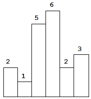

Graph topics to study for interviews:
- BFS
- DFS
- Topological Sort & Shortest-path in a DAG
- Dijkstra's algorithm
- Bellman-Ford
- A-star (A*)
- Floyd-Warshall (debatable, but it's 5 lines of code, so no reason not to know it)
Concept #1
Lower bound for any comparison based sorting algorithm :
Problems to revise:
public class Solution {
public List<List<Integer>> levelOrderBottom(TreeNode root) {
Queue<TreeNode> queue = new LinkedList<TreeNode>();
List<List<Integer>> wrapList = new LinkedList<List<Integer>>();
if(root == null) return wrapList;
queue.offer(root);
while(!queue.isEmpty()){
int levelNum = queue.size();
List<Integer> subList = new LinkedList<Integer>();
for(int i=0; i<levelNum; i++) {
if(queue.peek().left != null) queue.offer(queue.peek().left);
if(queue.peek().right != null) queue.offer(queue.peek().right);
subList.add(queue.poll().val);
}
wrapList.add(0, subList);
}
return wrapList;
}}Using DFS:
public List<List<Integer>> levelOrderBottom(TreeNode root) {
List<List<Integer>> list = new LinkedList<>();
dfs(root, list, 0);
return list;
}
private void dfs(TreeNode root, List<List<Integer>> list, int level) {
if(root == null) return;
if(list.size() == level) {
list.add(0, new ArrayList<>());
}
dfs(root.left, list, level+1);
dfs(root.right, list, level+1);
list.get(list.size()-level-1).add(root.val);
}
Regular level order using DFS:
public List<List<Integer>> levelOrder(TreeNode root) {
List<List<Integer>> list = new ArrayList<>();
dfs(root, list, 0);
return list;
}
private void dfs(TreeNode root, List<List<Integer>> list, int level) {
if(root == null) return;
if(list.size() == level) {
list.add(new ArrayList<>());
}
dfs(root.left, list, level+1);
dfs(root.right, list, level+1);
list.get(level).add(root.val); // you can move this above recursive calls
}
- Length of Last Word : boundary/corner cases to be taken care of
- Excel Sheet Column Title: Remember the trick to reduce n by 1 all the time [before starting the loop as well as at the end of the while loop]
- Remove Nth Node From End of List: Handle boundary case when head is going to be deleted. Solution
- Reverse Linked List II: Hard to get it right the first time. Solution
- Unique Paths: Initializing the 2d array is a problem. Solution
- Valid Sudoku: Pain to get it right the first time; must practice [took around 2 hours to get accepted]. Solution
- Min Stack: Make sure to consider duplicate elements. Push duplicate element into 2nd min stack as well.
- Plus one: Accepted for 3 attempts
- Product of Array Except Self : Solve this problem in O(1) space.
- Search Insert Position: Need to check the boundary conditions. Solution
- Implement queue using stacks : check the solution from CTCI. basically pop and peek should only be O(n) and not O(2*n)
- Count Complete Tree Nodes : Couldn’t do it. Understand the algorithm from program creek.
- Kth Largest Element in an Array : Look at all the listed solutions here: http://www.geeksforgeeks.org/k-largestor-smallest-elements-in-an-array/ especially using min heap [nlogk solution] and using max heap [klogn solution]
- Majority element II : http://www.geeksforgeeks.org/given-an-array-of-of-size-n-finds-all-the-elements-that-appear-more-than-nk-times/
classSolution: n/3 times in an array# @param {integer[]} nums# @return {integer[]}def majorityElement(self, nums):
if not nums:
return []
count1, count2, candidate1, candidate2 = 0, 0, 0, 1
for n in nums:
if n == candidate1:
count1 += 1
elif n == candidate2:
count2 += 1
elif count1 == 0:
candidate1, count1 = n, 1
elif count2 == 0:
candidate2, count2 = n, 1
else:
count1, count2 = count1 - 1, count2 - 1
return [n for n in (candidate1, candidate2)
if nums.count(n) > len(nums) // 3]
- Sum Root to Leaf Numbers : https://leetcode.com/submissions/detail/35740805/ . Solve it again
- Rotate array : just remember that if k > n , do k %= n
- Set Matrix Zeros : remember how to separate the case when first row or first column has any zeros. Solution . You can check CTCI solution too
- Add digits: The digital root (also repeated digital sum) of a non-negative integer is the (single digit) value obtained by an iterative process of summing digits, on each iteration using the result from the previous iteration to compute a digit sum. The process continues until a single-digit number is reached. For example, the digital root of 65,536 is 7, because 6 + 5 + 5 + 3 + 6 = 25 and 2 + 5 = 7. Significance and formula of the digital root[edit] It helps to see the digital root of a positive integer as the position it holds with respect to the largest multiple of 9 less than it. For example, the digital root of 11 is 2, which means that 11 is the second number after 9. Likewise, the digital root of 2035 is 1, which means that 2035 − 1 is a multiple of 9. If a number produces a digital root of exactly 9, then the number is a multiple of 9. With this in mind the digital root of a positive integer n may be defined by using floor function, as
- String to integer: How to detect overflow? Note: always test for (-sys.maxint-1)-1 : Solution
- Partition List: Just insert nodes with values less than x at the end of the list
import heapq
class Solution:
# @param {integer} n
# @return {integer}
def nthUglyNumber(self, n):
ugly_number = 0
heap = []
heapq.heappush(heap, 1)
for _ in xrange(n):
ugly_number = heapq.heappop(heap)
if ugly_number % 2 == 0:
heapq.heappush(heap, ugly_number * 2)
elif ugly_number % 3 == 0:
heapq.heappush(heap, ugly_number * 2)
heapq.heappush(heap, ugly_number * 3)
else:
heapq.heappush(heap, ugly_number * 2)
heapq.heappush(heap, ugly_number * 3)
heapq.heappush(heap, ugly_number * 5)
return ugly_number
2nd approach:
METHOD 2 (Use Dynamic Programming)
Here is a time efficient solution with O(n) extra space. The ugly-number sequence is 1, 2, 3, 4, 5, 6, 8, 9, 10, 12, 15, …
because every number can only be divided by 2, 3, 5, one way to look at the sequence is to split the sequence to three groups as below:
(1) 1×2, 2×2, 3×2, 4×2, 5×2, …
(2) 1×3, 2×3, 3×3, 4×3, 5×3, …
(3) 1×5, 2×5, 3×5, 4×5, 5×5, …
We can find that every subsequence is the ugly-sequence itself (1, 2, 3, 4, 5, …) multiply 2, 3, 5. Then we use similar merge method as merge sort, to get every ugly number from the three subsequence.
Every step we choose the smallest one, and move one step after.
Code:
# good way to avoid duplicates
class Solution(object):
def nthUglyNumber(self, n):
"""
:type n: int
:rtype: int
"""
u2, u3, u5 = 0, 0, 0
ugly_nums = [None for i in range(n)]
ugly_nums[0] = 1
for i in range(1, n):
ugly_nums[i] = min(2*ugly_nums[u2], 3*ugly_nums[u3], 5* ugly_nums[u5])
if ugly_nums[i] == 2*ugly_nums[u2]:
u2 += 1
if ugly_nums[i] == 3*ugly_nums[u3]:
u3 += 1
if ugly_nums[i] == 5*ugly_nums[u5]:
u5 += 1
#print u2, u3, u5
return ugly_nums[n-1]
Analysis:
Give an O(n lg k)-time algorithm to merge k sorted lists into one sorted list, where n is the total number of elements in all the input lists.
Solution: The straightforward solution is to pick the smallest of the top elements in each list, repeatedly. This takes k − 1 comparisons per element, in total O(k · n).
Analysis: It takes O(k) to build the heap; for every element, it takes O(lg k) to DeleteMin and O(lg k) to insert the next one from the same list. In total it takes O(k + n lg k) = O(n lg k).
import java.util.*;
public class Solution {
public ListNode mergeKLists(ListNode[] lists) {
if(lists == null || lists.length == 0) {
return null;
}
PriorityQueue<ListNode> pq = new PriorityQueue<>(lists.length, new Comparator<ListNode>(){
@Override
public int compare(ListNode l1, ListNode l2) { return l1.val-l2.val; }
});
ListNode mergedList = new ListNode(0);
ListNode head = mergedList;
for(int i=0;i<lists.length;i++){
if(lists[i] != null){
}
}
while(!pq.isEmpty()){
ListNode l = pq.poll();
if(l.next != null){
pq.offer(l.next);
}
mergedList.next = l;
mergedList = mergedList.next;
}
return head.next;
}
}
28. Square root: Start with lo=0 , hi = 1+n/2 for binary search
Leetcode articles:
=============
Important to do pre-order traversal here
Ans: From: http://www.geeksforgeeks.org/connect-nodes-at-same-level/
struct node {
int data;
struct node *left;
struct node *right;
struct node *nextRight;};
void connectRecur(struct node* p);
// Sets the nextRight of root and calls connectRecur() for other nodes
void connect (struct node *p)
{
// Set the nextRight for root
p->nextRight = NULL;
// Set the next right for rest of the nodes (other than root)
connectRecur(p);
}
/* Set next right of all descendents of p.
Assumption: p is a compete binary tree */
void connectRecur(struct node* p)
{
// Base case
if (!p) return;
// Set the nextRight pointer for p's left child
if (p->left)
p->left->nextRight = p->right;
// Set the nextRight pointer for p's right child
// p->nextRight will be NULL if p is the right most child at its level
if (p->right)
p->right->nextRight = (p->nextRight)? p->nextRight->left: NULL;
// Set nextRight for other nodes in pre order fashion
connectRecur(p->left);
connectRecur(p->right);
}
iterative way:
void connect(TreeLinkNode *root) {
if (root == NULL) return;
TreeLinkNode *pre = root;
TreeLinkNode *cur = NULL;
while(pre->left) {
cur = pre;
while(cur) {
cur->left->next = cur->right;
if(cur->next) cur->right->next = cur->next->left;
cur = cur->next;
}
pre = pre->left;
}
}
public void connect(TreeLinkNode root) {
TreeLinkNode dummyHead = new TreeLinkNode(0);
TreeLinkNode pre = dummyHead;
while (root != null) {
if (root.left != null) {
pre.next = root.left;
pre = pre.next;
}
if (root.right != null) {
pre.next = root.right;
pre = pre.next;
}
root = root.next;
if (root == null) {
pre = dummyHead;
root = dummyHead.next;
dummyHead.next = null;
}
}
}
2. Finding intersection of two sorted arrays
Ans: Use O(m+n) approach.
But what if m>>n. Use binary search so as to get O(n log m) time algorithm.
3. Hacking a google interview [MIT]
Refer these and understand the main points from each:
4. Finding prime numbers:
Ans:
The Sieve of Eratosthenes uses an extra O(n) memory and its runtime complexity is O(n log log n). For the more mathematically inclined readers, you can read more about its algorithm complexity on Wikipedia.
/* Generate a prime list from 0 up to n, using The Sieve of Erantosthenes
param n The upper bound of the prime list (including n)
param prime[] An array of truth value whether a number is prime
*/
void prime_sieve(int n, bool prime[]) {
prime[0] = false;
prime[1] = false;
int i;
for (i = 2; i <= n; i++)
prime[i] = true;
int limit = sqrt(n);
for (i = 2; i <= limit; i++) {
if (prime[i]) {
for (int j = i * i; j <= n; j += i)
prime[j] = false;
}
}
}
Ans: Easy approach:
A -> 4,3,2,1,2
left[i]->1,4,12,24,24
right[i]->12,4,2,2,1
output[i]->left[i] * right[i]
void array_multiplication(int A[], int OUTPUT[], int n) {
int left = 1;
int right = 1;
for (int i = 0; i < n; i++)
OUTPUT[i] = 1;
for (int i = 0; i < n; i++) {
OUTPUT[i] *= left;
OUTPUT[n - 1 - i] *= right;
left *= A[i];
right *= A[n - 1 - i];
}
}
6. Linked list reversal recursive
Ans:
def reverseList(self, head):
if head is None:
return None
if head.next is None:
return head
l = self.reverseList(head.next)
head.next.next = head
head.next = None
return l
Iterative:
def reverse(self, head):
# write your code here
if not head:
return head
prev = None
curr = head
while curr:
temp = curr.next
curr.next = prev
prev = curr
curr = temp
return prev
7. Binary Tree Level-Order Traversal Using Depth First Search (DFS)
void printLevel(BinaryTree *p, int level) { if (!p) return;
if (level == 1) {
cout << p->data << " ";
} else {
printLevel(p->left, level-1);
printLevel(p->right, level-1);
}
}
void printLevelOrder(BinaryTree *root) { int height = maxHeight(root);
for (int level = 1; level <= height; level++) {
printLevel(root, level);
cout << endl;
}
}
// Time Complexity: O(n^2) in worst case. For a skewed tree, printGivenLevel() takes O(n) time where n is the number of nodes in the skewed tree. So time complexity of printLevelOrder() is O(n) + O(n-1) + O(n-2) + .. + O(1) which is O(n^2).
8. For finding Maximum Height (Depth) of a Binary Tree iteratively, you can also use BFS level order traversal apart from usual iterative solutions of in, pre or post order traversals
9. Zig zag traversal of binary tree:
class Solution:
# @param root, a tree node
# @return a list of lists of integers
def zigzagLevelOrder(self, root):
if root is None:
return []
result, current, level = [], [root], 1
while current:
next_level, vals = [], []
for node in current:
vals.append(node.val)
if node.left:
next_level.append(node.left)
if node.right:
next_level.append(node.right)
if level % 2:
result.append(vals)
else:
result.append(vals[::-1])
level += 1
current = next_level
return result
10. x && (x-1) == 0 if passed 0 would return true; how do you fix it ?
Ans:return x && !(x & (x-1));
11. isBST [accepted on leetcode]
Ans:
public class Solution {
public boolean isValidBST(TreeNode root) {
if(root == null) return true;
return isValidBSTRec(root, null, null); // do this to avoid hitting int_max/int_min issues
}
public boolean isValidBSTRec(TreeNode root, Integer max, Integer min){
if(root == null) return true;
if((max != null && root.val >= max) || (min != null && root.val <= min)) return false; // handle < > here to avoid overflow.
return isValidBSTRec(root.left, root.val, min) && isValidBSTRec(root.right, max, root.val);
}
}
12. Convert Sorted Array to Balanced Binary Search Tree (BST)
class Solution: # @param {integer[]} nums # @return {TreeNode} def sortedArrayToBST(self, nums): n = len(nums) if n == 0: return None root = TreeNode(nums[n/2]) root.left = self.sortedArrayToBST(nums[:n/2]) root.right = self.sortedArrayToBST(nums[(n/2)+1:]) return root
|
|
13. Find the total area covered by two rectilinear rectangles in a 2D plane. Each rectangle is defined by its bottom left corner and top right corner coordinates.
Ans: Cases to consider
a. non intersecting
b. intersecting
c. one rectangle inside another
d. one rectangle as point rectangle
Following code takes care of all these cases:
class Solution:
# @param {integer} A
# @param {integer} B
# @param {integer} C
# @param {integer} D
# @param {integer} E
# @param {integer} F
# @param {integer} G
# @param {integer} H
# @return {integer}
def computeArea(self, A, B, C, D, E, F, G, H):
if C<E or G < A:
return (C-A)*(D-B) + (G-E)*(H-F)
if D<F or H<B:
return (C-A)*(D-B) + (G-E)*(H-F)
right = min(C,G)
left = max(A,E) # imp
top = min(D,H)
bottom = max(B,F) # imp
return abs((C-A)*(D-B)) + abs((G-E)*(H-F))- abs((right-left)*(top-bottom))
Derived problem: Find if two rectangles overlap or not?
Ans:
// Returns true if two rectangles (l1, r1) and (l2, r2) overlap
bool doOverlap(Point l1, Point r1, Point l2, Point r2)
{
// If one rectangle is on left side of other
if (l1.x > r2.x || l2.x > r1.x)
return false;
// If one rectangle is above other
if (l1.y < r2.y || l2.y < r1.y)
return false;
return true;
}
14. Convert Sorted Singly Linked List to Balanced Binary Search Tree (BST) [note own solution from leetcode here]
O(N) space, O(N log N) time
public TreeNode sortedListToBST(ListNode head) {
if(head == null)
return null;
ListNode fast = head;
ListNode slow = head;
ListNode prev =null;
while(fast != null && fast.next != null)
{
fast = fast.next.next;
prev =slow;
slow=slow.next;
}
TreeNode root = new TreeNode(slow.val);
if(prev != null)
prev.next = null;
else
head = null;
root.left = sortedListToBST(head);
root.right = sortedListToBST(slow.next);
return root;}
O(1) space(not including space for creating the tree or recursion stack space) and O(N) time:
private ListNode node;
public TreeNode sortedListToBST(ListNode head) {
if(head == null){
return null;
}
int size = 0;
ListNode runner = head;
node = head;
while(runner != null){
runner = runner.next;
size ++;
}
return inorderHelper(0, size - 1);}
public TreeNode inorderHelper(int start, int end){
if(start > end){
return null;
}
int mid = start + (end - start) / 2;
TreeNode left = inorderHelper(start, mid - 1);
TreeNode treenode = new TreeNode(node.val);
treenode.left = left;
node = node.next;
TreeNode right = inorderHelper(mid + 1, end);
treenode.right = right;
return treenode;}
Convert a sorted Doubly Linked List to Balanced Binary Search Tree[O]
Given a doubly linked list in sorted order with previous and next nodes. Convert the doubly linked list to a binary search tree with left as previous node and right as next node.
Consider the list below:
The list should be converted to following BST:
We recursively traverse to the leaves and then create the tree upwards from the leaves to the root.
Step 1. Calculate the length of the linked list.
Step 2. Recursively create left sub tree from first half nodes.
Step 3. Make middle node as the root and node returned from previous call (Step 2) as left child of the root.
Step 4. Move head to next node.
Step 5. Recursively create the right sub tree from second half nodes.
Step 6. Return root.
private ListNode convertDllToBST(int len) {
if (len == 0) {
return null;
}
ListNode left = convertDllToBST(len / 2);
ListNode root = head;
root.prev = left;
head = head.next;
ListNode right = convertDllToBST(len - (len / 2) - 1);
root.next = right;
return root;
}
# Using BFS
from collections import deque
class Solution(object):
def cloneGraph(self, node):
"""
:type node: UndirectedGraphNode
:rtype: UndirectedGraphNode
"""
if node is None:
return None
q = deque([node])
map = {}
root_copy = UndirectedGraphNode(node.label)
map[node] = root_copy
while q:
node = q.popleft()
for neighbor in node.neighbors:
if neighbor not in map:
p = UndirectedGraphNode(neighbor.label)
q.append(neighbor)
map[node].neighbors.append(p)
map[neighbor] = p
else:
map[node].neighbors.append(map[neighbor])
return root_copy
Using DFS # Definition for a undirected graph node
# class UndirectedGraphNode(object):
# def __init__(self, x):
# self.label = x
# self.neighbors = []
class Solution(object):
def clone_rec(self, root, map):
if root is None:
return None
root_copy = UndirectedGraphNode(root.label)
map[root] = root_copy
for neighbor in root.neighbors:
if neighbor not in map:
root_copy.neighbors.append(self.clone_rec(neighbor, map))
else:
root_copy.neighbors.append(map[neighbor])
return root_copy
def cloneGraph(self, node):
"""
:type node: UndirectedGraphNode
:rtype: UndirectedGraphNode
"""
map = {}
return self.clone_rec(node, map)
16. Reverse bits in an unsigned integer
Ans:
public int reverseBits(int n) {
for (int i = 0; i < 16; i++) {
n = swapBits(n, i, 32 - i - 1);
}
return n;
}
public int swapBits(int n, int i, int j) {
int a = (n >> i) & 1;
int b = (n >> j) & 1;
if ((a ^ b) != 0) {
return n ^= (1 << i) | (1 << j);
}
}
17. Construct Binary Tree From Inorder and Preorder/Postorder Traversal [Ask interviewer about duplicates in tree ]
Caveats:
1. Worst case is O(n^2) for any such algorithm for tree construction[left/right skeweed]
2. Equal numbers: impossible to construct tree
3. preorder.pop(0) is ok since ignorer.index anyways takes linear time.
Recommended approach
public TreeNode buildTree(int[] preorder, int[] inorder) {
return helper(0, 0, inorder.length - 1, preorder, inorder);
}
public TreeNode helper(int preStart, int inStart, int inEnd, int[] preorder, int[] inorder) {
if (preStart > preorder.length - 1 || inStart > inEnd) {
return null;
}
TreeNode root = new TreeNode(preorder[preStart]);
int inIndex = 0; // Index of current root in inorder
for (int i = inStart; i <= inEnd; i++) {
if (inorder[i] == root.val) {
inIndex = i;
}
}
root.left = helper(preStart + 1, inStart, inIndex - 1, preorder, inorder);
root.right = helper(preStart + inIndex - inStart + 1, inIndex + 1, inEnd, preorder, inorder);
return root;
}
20. LCA of Binary Tree:
class Solution(object):
def lowestCommonAncestor(self, root, p, q):
"""
:type root: TreeNode
:type p: TreeNode
:type q: TreeNode
:rtype: TreeNode
"""
if root is None:
return None
if root==p or root==q:
return root
l = self.lowestCommonAncestor(root.left, p, q)
r = self.lowestCommonAncestor(root.right, p, q)
if l is not None and r is not None:
return root
return l if l else r
Caveat: Note that you only need to do 4 recursive calls.
Time complexity: O(ROW x COL)
class Solution(object):
def isSafe(self, row, col, grid, visited, rows, cols):
if 0<=row<rows and 0<=col<cols and grid[row][col] == '1' and visited[row][col] is False:
return True
return False
def DFS(self, row, col, grid, visited, rows, cols):
if self.isSafe(row, col, grid, visited, rows, cols):
visited[row][col] = True
self.DFS(row-1, col, grid, visited, rows, cols)
self.DFS(row+1, col, grid, visited, rows, cols)
self.DFS(row, col-1, grid, visited, rows, cols)
self.DFS(row, col+1, grid, visited, rows, cols)
def numIslands(self, grid):
"""
:type grid: List[List[str]]
:rtype: int
"""
if not grid:
return 0
rows = len(grid)
cols = len(grid[0])
visited = [[False for i in range(cols)] for i in range(rows)]
count = 0
for i in range(rows):
for j in range(cols):
if grid[i][j] == '1' and visited[i][j] is False:
self.DFS(i, j, grid, visited, rows, cols)
count += 1
return count
publicclassSolution{
classUF{
int[] father;
int count =0;
publicUF(char[][] grid,int m,int n){
father =newint[m*n];
int k=0;
for(int i=0;i<m;i++){
for(int j=0;j<n;j++){
father[k]= k++;
if(grid[i][j]=='1')++count;
}
}
}
void union(int node1, int node2) { // union by rank
int root1 = find(node1);
int root2 = find(node2);
if(root1 == root2)return;
if(rank[root1]< rank[root2]) father[root1]= root2;
elseif(rank[root1]> rank[root2]) father[root2]= root1;
else{
father[root1]= root2;
++rank[root1];
}
--count;
} int find(int node) { // path compression
while(node != father[node]) node = father[node];
return node;
}
} int[][] distance = {{1,0},{-1,0},{0,1},{0,-1}};
public int numIslands(char[][] grid) {
if (grid == null || grid.length == 0 || grid[0].length == 0) {
return 0;
}
UF uf = new UF(grid);
int rows = grid.length;
int cols = grid[0].length;
for (int i = 0; i < rows; i++) {
for (int j = 0; j < cols; j++) {
if (grid[i][j] == '1') {
for (int[] d : distance) {
int x = i + d[0];
int y = j + d[1];
if (x >= 0 && x < rows && y >= 0 && y < cols && grid[x][y] == '1') {
int id1 = i*cols+j;
int id2 = x*cols+y;
uf.union(id1, id2);
}
}
}
}
}
return uf.count;
}
Follow up : 305. Number of Islands II
A 2d grid map of m rows and n columns is initially filled with water. We may perform an addLand operation which turns the water at position (row, col) into a land. Given a list of positions to operate, count the number of islands after each addLand operation. An island is surrounded by water and is formed by connecting adjacent lands horizontally or vertically. You may assume all four edges of the grid are all surrounded by water.
Example:
Given m = 3, n = 3, positions = [[0,0], [0,1], [1,2], [2,1]].
Initially, the 2d grid grid is filled with water. (Assume 0 represents water and 1 represents land).
0 0 0
0 0 0
0 0 0
Operation #1: addLand(0, 0) turns the water at grid[0][0] into a land.
1 0 0
0 0 0 Number of islands = 1
0 0 0
Operation #2: addLand(0, 1) turns the water at grid[0][1] into a land.
1 1 0
0 0 0 Number of islands = 1
0 0 0
Operation #3: addLand(1, 2) turns the water at grid[1][2] into a land.
1 1 0
0 0 1 Number of islands = 2
0 0 0
Operation #4: addLand(2, 1) turns the water at grid[2][1] into a land.
1 1 0
0 0 1 Number of islands = 3
0 1 0
We return the result as an array: [1, 1, 2, 3]
Ans:
The algorithm runs in O((M+N) log* N)= O(M+N) where M is the number of operations ( unite and find ), N is the number of objects, log* is iterated logarithm while the naive runs in O(MN).//Time O(K log * mn) where k is the length of positions array
publicclassSolution{
int cnt=0;
classUF{
int[] father;
publicUF(int m,int n){
father =newint[m*n];
Arrays.fill(father,-1);
}
voidunion(int node1,int node2){ // need to use union by rank
if(find(node1)== find(node2))return;
father[find(node1)]= find(node2);
--cnt;
}
intfind(int node){
while(node != father[node]) node = father[node];
return node;
}
}
public List<Integer>numIslands2(int m,int n,int[][] positions){
List<Integer> numIslands =new ArrayList<>();
UF uf =new UF(m, n);
int[][] dirs ={{1,0},{-1,0},{0,1},{0,-1}};
for(int k=0;k<positions.length;k++){
int i = positions[k][0];
int j = positions[k][1]; ++cnt; // important
int root = i*n+j;
uf.father[root]= root;
int index;
for(int[]dir: dirs){
int x = i+dir[0];
int y = j+dir[1];
index = x*n+y;
if(x<0|| x>=m || y<0|| y>=n || uf.father[index]==-1)continue;
uf.union(root, index);
}
numIslands.add(cnt);
}
return numIslands;
}}Description: Initially assume every cell are in non-island set {-1}. When point A is added, we create a new root, i.e., a new island. Then, check if any of its 4 neighbors belong to the same island. If not, union the neighbor by setting the root to be the same. Remember to skip non-island cells.
23. Reverse bits [just remember how to the method here for swapping i-th and j-th bit in an integer]
We only need to perform the swap when the ith bit and the jth bit are different. To test if two bits are different, we could use the XOR operation. Then, we need to toggle both ith and jth bits. We could apply the XOR operation again. By XOR-ing the ith and jth bit with 1, both bits are toggled.
1 2 3 4 5 6 7 8 9 10 11 12 13 14 15 16 17 | typedef unsigned int uint; uint swapBits(uint x, uint i, uint j) { uint lo = ((x >> i) & 1); uint hi = ((x >> j) & 1); if (lo ^ hi) { x ^= ((1U << i) | (1U << j)); } return x; } uint reverseXor(uint x) { uint n = sizeof(x) * 8; for (uint i = 0; i < n/2; i++) { x = swapBits(x, i, n-i-1); } return x; } |
sequence. For example, Given [100, 4, 200, 1, 3, 2], The longest consecutive elements sequence is [1, 2, 3, 4]. Return its length: 4.
Your algorithm should run in O(n) complexity.
Algorithm:
1) Create an empty hash.2) Insert all array elements to hash.3) Do following for every element arr[i]....a) Check if this element is the starting point of a subsequence. To check this, we simply look for arr[i] - 1 in hash, if not found, then this is the first element a subsequence. If this element is a first element, then count number of elements in the consecutive starting with this element. If count is more than current res, then update res.
class Solution(object):
def longestConsecutive(self, nums):
"""
:type nums: List[int]
:rtype: int
"""
hash = {}
n = len(nums)
if n in [0,1]:
return n
for n in nums:
hash[n] = 1
ans = 0
for key in hash.keys():
if key-1 not in hash: # first element of sorted subsequence
x = key
times = 1
while x+1 in hash:
times += 1
x = x+1
if ans < times:
ans = times
return ans
class Solution:
def get_palindrome(self, str,i,j):
n = len(str)
while i >=0 and j < n and str[i] == str[j]:
i -= 1
j += 1
return str[i+1:j]
# @param {string} s
# @return {string}
def longestPalindrome(self, s):
ans = ''
n = len(s)
if n in [0, 1]:
return s
for k in range(0,n):
odd_palin = self.get_palindrome(s, k, k)
if len(odd_palin) > len(ans):
ans = odd_palin
even_palin = self.get_palindrome(s, k, k+1)
if len(even_palin) > len(ans):
ans = even_palin
return ans
//got it fully[awesome algo]
public class Solution {
public String shortestPalindrome(String s) {
long B=29, mod=1000_000_007, pow=1;
int pos=-1; // -1 so that it would work for empty strings too.
long hash1=0, hash2=0;
for(int i=0;i<s.length();i++, pow = pow * B % mod) {
int val = s.charAt(i) - 'a' + 1;
hash1 = (hash1 * B + val) % mod;
hash2 = (hash2 + val * pow) % mod;
if(hash1 == hash2) pos = i;
}
return new StringBuilder().append(s.substring(pos+1)).reverse().append(s).toString();
}
}
Explanation:
Consider a decimal example. Say we are given a number 7134. If we read it from left to right, we get 7134. And 4317 if we read it from right to left.
hash1 is the left--to-right fashion:
hash1 = 0hash1 = 0 * 10 + 7 = 7hash1 = 7 * 10 + 1 = 71hash1 = 71 * 10 + 3 = 713hash1 = 713 * 10 + 4 = 7134
hash2 is the right-to-left fashion:
hash2 = 0hash2 = 0 + 7 * 1 = 7hash2 = 7 + 1 * 10 = 17hash2 = 17 + 3 * 100 = 317hash2 = 317 + 4 * 1000 = 4317
A palindrome must be read the same from left to right and from right to left. So in this case, 7134 is not a palindrome.
Above is an example for the decimal case, and for rolling hashing, the only differences are:
- Base is not 10, but any constant >= 26.
hash1 and hash2 are not the exact value, but the exact value modulo a big prime. (Since the exact value is too large to fit in a 32-bit integer.)
Dynamic Programmig Approach:
public int longestPalindromeDynamic(char []str){
boolean T[][] = new boolean[str.length][str.length];
for(int i=0; i < T.length; i++){
T[i][i] = true;
}
int max = 1;
for(int l = 2; l <= str.length; l++){
int len = 0;
for(int i=0; i < str.length-l+1; i++){
int j = i + l-1;
len = 0;
if(l == 2){
if(str[i] == str[j]){
T[i][j] = true;
len = 2;
}
}else{
if(str[i] == str[j] && T[i+1][j-1]){
T[i][j] = true;
len = j -i + 1;
}
}
if(len > max){
max = len;
}
}
}
return max;}
Permutations : https://leetcode.com/problems/permutations/
public List<List<Integer>> permute(int[] nums) {
List<List<Integer>> list = new ArrayList<>();
// Arrays.sort(nums); // not necessary
backtrack(list, new ArrayList<>(), nums);
return list;
}
private void backtrack(List<List<Integer>> list, List<Integer> tempList, int [] nums){
if(tempList.size() == nums.length){
list.add(new ArrayList<>(tempList));
} else{
for(int i = 0; i < nums.length; i++){
if(tempList.contains(nums[i])) continue; // element already exists, skip
tempList.add(nums[i]);
backtrack(list, tempList, nums);
tempList.remove(tempList.size() - 1);
}
}
}
Permutations II (contains duplicates) : https://leetcode.com/problems/permutations-ii/
public List<List<Integer>> permuteUnique(int[] nums) {
List<List<Integer>> list = new ArrayList<>();
Arrays.sort(nums);
backtrack(list, new ArrayList<>(), nums, new boolean[nums.length]);
return list;
}
private void backtrack(List<List<Integer>> list, List<Integer> tempList, int [] nums, boolean [] used){
if(tempList.size() == nums.length){
list.add(new ArrayList<>(tempList));
} else{
for(int i = 0; i < nums.length; i++){
if(used[i] || i > 0 && nums[i] == nums[i-1] && !used[i - 1]) continue;
used[i] = true;
tempList.add(nums[i]);
backtrack(list, tempList, nums, used);
used[i] = false;
tempList.remove(tempList.size() - 1);
}
}
}
Algorithm from wiki
The following algorithm generates the next permutation lexicographically after a given permutation. It changes the given permutation in-place.
- Find the largest index k such that a[k] < a[k + 1]. If no such index exists, the permutation is the last permutation.
- Find the largest index l greater than k such that a[k] < a[l].
- Swap the value of a[k] with that of a[l].
- Reverse the sequence from a[k + 1] up to and including the final element a[n].
For example, given the sequence [1, 2, 3, 4] which starts in a weakly increasing order, and given that the index is zero-based, the steps are as follows:
- Index k = 2, because 3 is placed at an index that satisfies condition of being the largest index that is still less than a[k + 1] which is 4.
- Index l = 3, because 4 is the only value in the sequence that is greater than 3 in order to satisfy the condition a[k] < a[l].
- The values of a[2] and a[3] are swapped to form the new sequence [1,2,4,3].
- The sequence after k-index a[2] to the final element is reversed. Because only one value lies after this index (the 3), the sequence remains unchanged in this instance. Thus the lexicographic successor of the initial state is permuted: [1,2,4,3].
Following this algorithm, the next lexicographic permutation will be [1,3,2,4], and the 24th permutation will be [4,3,2,1] at which point a[k] <a[k + 1] does not exist, indicating that this is the last permutation.
class Solution(object):
def nextPermutation(self, nums):
"""
:type nums: List[int]
:rtype: void Do not return anything, modify nums in-place instead.
"""
n = len(nums)
for i in range(n-2, -1, -1):
if nums[i] < nums[i+1]:
for j in range(n-1, i, -1):
if nums[i] < nums[j]:
nums[i], nums[j] = nums[j], nums[i]
if i+1 < n:
start = i+1
end = n-1
while start < end:
nums[start] , nums[end] = nums[end], nums[start]
start += 1
end -= 1
return
nums.sort()
Palindrome partitioning:
Given a string s, partition s such that every substring of the partition is a palindrome.
Return all possible palindrome partitioning of s.
For example, given s = "aab",
Return
[
["aa","b"],
["a","a","b"]
]
Palindrome Partitioning : https://leetcode.com/problems/palindrome-partitioning/
public List<List<String>> partition(String s) {
List<List<String>> list = new ArrayList<>();
backtrack(list, new ArrayList<>(), s, 0);
return list;
}
public void backtrack(List<List<String>> list, List<String> tempList, String s, int start){
if(start == s.length())
list.add(new ArrayList<>(tempList));
else {
for(int i = start; i < s.length(); i++) {
if(isPalindrome(s, start, i)){
tempList.add(s.substring(start, i + 1));
backtrack(list, tempList, s, i + 1);
tempList.remove(tempList.size() - 1);
}
}
}
}
public boolean isPalindrome(String s, int low, int high){
while(low < high)
if(s.charAt(low++) != s.charAt(high--)) return false;
return true;
}
class Solution(object):
def generateParenthesis(self, n):
"""
:type n: int
:rtype: List[str]
"""
s = ""
ans = []
self.generateParenthesisRec(n, 0, 0, s, ans)
return ans
def generateParenthesisRec(self, n, left, right, str, ans):
if left >= n and right >= n:
ans.append(str)
return
if left < n:
str += '('
self.generateParenthesisRec(n, left+1, right, str, ans)
str = str[:-1]
if right < left:
str += ')'
self.generateParenthesisRec(n, left, right+1, str, ans)
str = str[:-1]
30. Combination: Picking 'k' items from a list of 'n' - Recursion
public class Solution {
public List<List<Integer>> combine(int n, int k) {
List<List<Integer>> list = new ArrayList<>();
List<Integer> temp = new ArrayList<>();
backtrack(list, temp, n, k, 1);
return list;
}
public void backtrack(List<List<Integer>> list, List<Integer> temp, int n, int k, int start){
if(temp.size() == k) { list.add(new ArrayList<>(temp)); return; }
for(int i=start;i<=n;i++){
temp.add(i);
backtrack(list, temp, n, k, i+1);
temp.remove(temp.size()-1);
}
}
}
Power set
-===
Subsets : https://leetcode.com/problems/subsets/
public List<List<Integer>> subsets(int[] nums) {
List<List<Integer>> list = new ArrayList<>();
Arrays.sort(nums);
backtrack(list, new ArrayList<>(), nums, 0);
return list;
}
private void backtrack(List<List<Integer>> list , List<Integer> tempList, int [] nums, int start){
list.add(new ArrayList<>(tempList));
for(int i = start; i < nums.length; i++) {
tempList.add(nums[i]);
backtrack(list, tempList, nums, i + 1);
tempList.remove(tempList.size() - 1);
}
}
Subsets II (contains duplicates) : https://leetcode.com/problems/subsets-ii/
public List<List<Integer>> subsetsWithDup(int[] nums) {
List<List<Integer>> list = new ArrayList<>();
Arrays.sort(nums);
backtrack(list, new ArrayList<>(), nums, 0);
return list;
}
private void backtrack(List<List<Integer>> list, List<Integer> tempList, int [] nums, int start){
list.add(new ArrayList<>(tempList));
for(int i = start; i < nums.length; i++){
if(i > start && nums[i] == nums[i-1]) continue; // skip duplicates
tempList.add(nums[i]);
backtrack(list, tempList, nums, i + 1);
tempList.remove(tempList.size() - 1);
}
}
Combination Sum: Given a set of candidate numbers (C) and a target number (T), find all unique combinations in C where the candidate numbers sums to T. The same repeated number may be chosen from C unlimited number of times.
Combination Sum : https://leetcode.com/problems/combination-sum/
public List<List<Integer>> combinationSum(int[] nums, int target) {
List<List<Integer>> list = new ArrayList<>();
Arrays.sort(nums);
backtrack(list, new ArrayList<>(), nums, target, 0);
return list;
}
private void backtrack(List<List<Integer>> list, List<Integer> tempList, int [] nums, int remain, int start){
if(remain < 0) return;
else if(remain == 0) list.add(new ArrayList<>(tempList));
else{
for(int i = start; i < nums.length; i++){
tempList.add(nums[i]);
backtrack(list, tempList, nums, remain - nums[i], i); // not i + 1 because we can reuse same elements
tempList.remove(tempList.size() - 1);
}
}
}
Combination Sum II (can't reuse same element) : https://leetcode.com/problems/combination-sum-ii/
public List<List<Integer>> combinationSum2(int[] nums, int target) {
List<List<Integer>> list = new ArrayList<>();
Arrays.sort(nums);
backtrack(list, new ArrayList<>(), nums, target, 0);
return list;
}
private void backtrack(List<List<Integer>> list, List<Integer> tempList, int [] nums, int remain, int start){
if(remain < 0) return;
else if(remain == 0) list.add(new ArrayList<>(tempList));
else{
for(int i = start; i < nums.length; i++){
if(i > start && nums[i] == nums[i-1]) continue; // skip duplicates
tempList.add(nums[i]);
backtrack(list, tempList, nums, remain - nums[i], i + 1);
tempList.remove(tempList.size() - 1);
}
}
}
def totalNQueens(self, n):
self.res = 0
self.dfs([-1]*n, 0)
return self.res
def dfs(self, board, index):
if index == len(board):
self.res += 1
return
for i in xrange(len(board)):
if self.check(board, index, i):
board[index] = i
self.dfs(board, index+1)
# check whether kth queen can be placed
# in column j
def check(self, board, k, j):
for i in xrange(k):
if board[i] == j or k-i == abs(j-board[i]):
return False
return True
33. Finding all upper/lower case combinations of a word
public static void comb4(String word) {
comb4(word,new char[word.length()],0);
}
private static void comb4(String word, char[] accu, int index) {
if(index == word.length()) {
System.out.println(accu);
} else {
char ch = word.charAt(index);
accu[index] = Character.toLowerCase(ch);
comb4(word, accu , index+1);
accu[index] = Character.toUpperCase(ch);
comb4(word, accu, index+1);
}
}
35. Check if a binary tree is a subtree of another tree
/* A utility function to check whether trees with roots as root1 and
root2 are identical or not */
bool areIdentical(struct node * root1, struct node *root2)
{
/* base cases */
if (root1 == NULL && root2 == NULL)
return true;
if (root1 == NULL || root2 == NULL)
return false;
/* Check if the data of both roots is same and data of left and right
subtrees are also same */
return (root1->data == root2->data &&
areIdentical(root1->left, root2->left) &&
areIdentical(root1->right, root2->right) );
}
/* This function returns true if S is a subtree of T, otherwise false */
bool isSubtree(struct node *T, struct node *S)
{
/* base cases */
if (S == NULL)
return true;
if (T == NULL)
return false;
/* Check the tree with root as current node */
if (areIdentical(T, S))
return true;
/* If the tree with root as current node doesn't match then
try left and right subtrees one by one */
return isSubtree(T->left, S) ||
isSubtree(T->right, S);
}
36. Dutch national flag problem.
The problem was posed with three colours, here `0′, `1′ and `2′. The array is divided into four sections:
- a[1..Lo-1] zeroes (red)
- a[Lo..Mid-] ones (white)
- a[Mid..Hi] unknown
- a[Hi+1..N] twos (blue)
The unknown region is shrunk while maintaining these conditions
- Lo := 1; Mid := 1; Hi := N;
- while Mid <= Hi do
- Invariant: a[1..Lo-1]=0 and a[Lo..Mid-1]=1 and a[Hi+1..N]=2; a[Mid..Hi] are unknown.
- case a[Mid] in
- 0: swap a[Lo] and a[Mid]; Lo++; Mid++
- 1: Mid++
- 2: swap a[Mid] and a[Hi]; Hi–
class Solution(object):
def sortColors(self, nums):
"""
:type nums: List[int]
:rtype: void Do not return anything, modify nums in-place instead.
"""
lo = 0
mid = 0
hi = len(nums) - 1
while mid <= hi:
if nums[mid] == 0:
nums[lo], nums[mid] = nums[mid], nums[lo]
lo += 1
mid += 1
elif nums[mid] == 1:
mid += 1
elif nums[mid] == 2:
nums[mid], nums[hi] = nums[hi], nums[mid]
hi -= 1
37. Find out parity of an integer
/* Function to get parity of number n. It returns 1
if n has odd parity, and returns 0 if n has even
parity */
bool getParity(unsigned int n)
{
bool parity = 0;
while (n)
{
parity = !parity;
n = n & (n - 1); # clears up the lowest set bit in the n
}
return parity;
}
37. Serialize and de-serialize a binary tree:
Java:
public String serialize(TreeNode root) {
StringBuilder sb = new StringBuilder();
buildString(root, sb);
return sb.toString();
}
StringBuilder buildString(TreeNode root, StringBuilder sb){
if(root == null){
sb.append("# ");
} else {
sb.append(root.val+" ");
buildString(root.left, sb);
buildString(root.right, sb);
}
return sb;
}
// Decodes your encoded data to tree.
public TreeNode deserialize(String data) {
return deserializeRec(new Scanner(data));
}
public TreeNode deserializeRec(Scanner sc){ // can use StringTokenizer too instead of Scanner
if(!sc.hasNext()) return null;
String s = sc.next();
if(s.equals("#")) return null;
TreeNode t = new TreeNode(Integer.valueOf(s));
t.left = deserializeRec(sc);
t.right = deserializeRec(sc);
return t;
}
38. Serialize and de-serialize an n-ary tree
Ans:
The idea is the following:
The idea is to store an ‘end of children’ marker with every node. The following diagram shows serialization where ‘)’ is used as end of children marker. The diagram is taken from here. 
Code:
// This function stores the given N-ary tree in a file pointed by fp
void serialize(Node *root, FILE *fp)
{
// Base case
if (root == NULL) return;
// Else, store current node and recur for its children
fprintf(fp, "%c ", root->key);
for (int i = 0; i < N && root->child[i]; i++)
serialize(root->child[i], fp);
// Store marker at the end of children
fprintf(fp, "%c ", MARKER);
}
// This function constructs N-ary tree from a file pointed by 'fp'.
// This functionr returns 0 to indicate that the next item is a valid
// tree key. Else returns 0
int deSerialize(Node *&root, FILE *fp)
{
// Read next item from file. If theere are no more items or next
// item is marker, then return 1 to indicate same
char val;
if ( !fscanf(fp, "%c ", &val) || val == MARKER )
return 1;
// Else create node with this item and recur for children
root = newNode(val);
for (int i = 0; i < N; i++)
if (deSerialize(root->child[i], fp))
break;
// Finally return 0 for successful finish
return 0;
}
39. n-ary tree to binary tree conversion and vice versa
Ans:
Algorithm:
1. Link the child nodes for a parent node that are at the same level.
2. Then from the links of the original tree, the link from the parent to the first (or the leftmost) child is preserved and the subsequent
links to the children are discarded.
3. Then keeping the root as the center, the tree is rotated by 45º clockwise. The tree obtained is the desired binary tree.
40. Find prime factors
def primes(n):
primfac = []
d = 2
while d*d <= n:
while (n % d) == 0:
primfac.append(d) # supposing you want multiple factors repeated
n //= d
d += 1
if n > 1:
primfac.append(n)
return primfac
41.Longest Substring Without Repeating Characters
class Solution(object):
def lengthOfLongestSubstring(self, s):
"""
:type s: str
:rtype: int
"""
n = len(s)
ans = 0
start = 0
hash = {}
for i in range(n):
if s[i] in hash:
start = max(start, hash[s[i]]+1)
hash[s[i]] = i
ans = max(ans, i-start+1)
return ans
42. Create a tree type and determine if a given tree is unival.
* A tree is unival if for all nodes in the tree, they have the same value. Given a tree, determine the number of sub-trees which are unival.
Ans:
Notes: Finding number of unival subtrees in O(n) time is a good question. Brute force is quadratic
For linear time: Do post order traversal from bottom up and if any of the sub-trees is not uni-val, return only leftUnivalCount + rightUnivalCount otherwise return leftUnivalCount+rightUnivalCount+1. You can use static variable : `isSubTreeUnival` to see if you ever got a non-unival subtree while going bottom up. This will do it in linear time.
For ex, for the following tree, number of uni-val trees is 2.
1
/ \
1 3
//O(N)
static boolean isSubTreeUnival = true;
static int findSingleValueTrees(Node n) {
if(n == null) return 0;
if(n.left == null && n.right == null) return 1;
int count = 0;
int lCount = findSingleValueTrees(n.left);
int rCount = findSingleValueTrees(n.right);
if((n.left != null && n.val != n.left.val) || (n.right != null && n.val != n.right.val))
isSubTreeUnival = false;
if(isSubTreeUnival == true)
count += lCount+rCount+1;
else
count += lCount+rCount;
return count;
}
//brute force: O(n^2) time
bool isSameValue(Node* n, int value) {
if (n == NULL) return true;
if (n->value != value) return false;
return isSameValue(root->left, value) && isSameValue(root->right, value);
}
bool isUnival(Node* root) {
if (root == NULL) return true;
return isSameValue(root->left, root->value) &&
isSameValue(root->right, root->value)
}
int univalSubTrees(Node* n) {
if (isUnival(n)) {
return 1;
} else {
return univalSubTree(n->left) + univalsubTree(n->right);
}
}
43. Given 4 vertices, find if they form a square
Ans: Find all distances b/w various vertices and sort them : just verify if the 1st 4 are equal and next 2 are also equal
44. Trie implementation
class TrieNode {
public boolean isWord;
public TrieNode[] children = new TrieNode[26]; //or Map<Character, TrieNode> children; // either is fine
public TrieNode() {}
}
public class Trie {
private TrieNode root;
public Trie() {
root = new TrieNode();
}
public void insert(String word) {
TrieNode ws = root;
for(int i = 0; i < word.length(); i++){
char c = word.charAt(i);
if(ws.children[c - 'a'] == null){
ws.children[c - 'a'] = new TrieNode();
}
ws = ws.children[c - 'a'];
}
ws.isWord = true;
}
public boolean search(String word) {
TrieNode ws = root;
for(int i = 0; i < word.length(); i++){
char c = word.charAt(i);
if(ws.children[c - 'a'] == null) return false;
ws = ws.children[c - 'a'];
}
return ws.isWord;
}
public boolean startsWith(String prefix) {
TrieNode ws = root;
for(int i = 0; i < prefix.length(); i++){
char c = prefix.charAt(i);
if(ws.children[c - 'a'] == null) return false;
ws = ws.children[c - 'a'];
}
return true;
}
}
45. How do you find if a number is a power of 3 in less than O(n) time ?
Ans:
Cover the number into base 3. Only the first digit should be 1 and rest should be all 0s.
public class Solution {
public boolean isPowerOfThree(int n) {
return Integer.toString(n, 3).matches("^10*$");
}
}
Follow up: Find if a number is a power of 4 without loops
public boolean isPowerOfFour(int num){return Integer.toString(num,4).matches("10*"); }
//Another way
bool isPowerOfFour(int num) {
return num > 0 && (num & (num - 1)) == 0 && (num - 1) % 3 == 0;
}
46. BST TO DLL[as well as circular DLL]
https://leetcode.com/discuss/77722/8-lines-of-python-solution-post-order-traversal
// only for converting to a singly linked list, also nodes are in the pre-order traversal of the BST.
public void flatten(TreeNode root) {
flatten(root,null);
}
private TreeNode flatten(TreeNode root, TreeNode pre) {
if(root==null) return pre; // this line is very important
pre=flatten(root.right,pre);
pre=flatten(root.left,pre);
root.right=pre;
root.left=null;
pre=root;
return pre;
}
class TreeList {
/* helper function -- given two list nodes, join them together so the second immediately follow the first. Sets the .next of the first and the .previous of the second. */
public static void join(Node a, Node b) {
a.right = b;
b.left = a;
}
/* helper function -- given two circular doubly linked lists, append them and return the new list. */
public static Node append(Node a, Node b) {
// if either is null, return the other
if (a==null) return(b);
if (b==null) return(a);
// find the last node in each using the .previous pointer
Node part1 = a.left;
Node part3 = b.left;
// join the two together to make it connected and circular
join(part1, b);
join(part3, a);
return(a);
}
/* --Recursion-- Given an ordered binary tree, recursively change it into a circular doubly linked list which is returned. */
public static Node treeToList(Node root) {
// base case: empty tree -> empty list
if (root==null) return(null);
// Recursively do the subtrees (leap of faith!)
Node part1 = treeToList(root.left);
Node part3 = treeToList(root.right);
// Make the single root node into a list length-1
// in preparation for the appending
root.left = root;
root.right = root;
// At this point we have three lists, and it's
// just a matter of appending them together
// in the right order (part1, root, part3)
part1 = append(part1, root);
part1 = append(part1, part3);
return(part1);
}}
"""2. Given an unsorted of array of integers, and an integer k. Return the top k most frequent elements from the array.
input : [2, 3, 2, 4, 2, 3, 2]
k : 2
=> [2, 3]
k : 1 => [2]
"""
def find_top_k_elements(input, k):
hash = {}
for i in input:
if i in hash:
hash[i] += 1
else:
hash[i] = 1
heap = []
for key, val in hash.iteritems():
n = len(heap)
if n < k:
heapq.heappush(heap, (val, key))
else:
top = heap[0]
if top[0] < val:
heapq.heappop(heap)
heapq.heappush(heap, (val, key))
ans = []
for item in heap:
ans.append(item[1])
return ans
# O(nlogk)
# How to handle when there is an infinite stream of sorted numbers ? And you get a query for k most frequent numbers
# k is given, sorted strem
# 2 2 3 3 4 ? 4 4 ? 4 ? 5 5 5 ..........................
Approach from EPI: problem: 15.8, slightly different from the above problem, the numbers are coming in a stream now and after each number comes, you need to find out the K most frequent integers: Use a balanced BST(TreeMap[red-black tree] in java?) + hash map to achieve O(k+log m) time solution where m is the number of distinct integers visited so far.
48. Spiral Matrix: Just remember the highlighted conditions.
# Time: O(m * n)
# Space: O(1)
#
# Given a matrix of m x n elements (m rows, n columns), return all elements of the matrix in spiral order.
#
# For example,
# Given the following matrix:
#
# [
# [ 1, 2, 3 ],
# [ 4, 5, 6 ],
# [ 7, 8, 9 ]
# ]
# You should return [1,2,3,6,9,8,7,4,5].
#
class Solution:
# @param matrix, a list of lists of integers
# @return a list of integers
def spiralOrder(self, matrix):
result = []
if matrix == []:
return result
left, right, top, bottom = 0, len(matrix[0]) - 1, 0, len(matrix) - 1
`
while left <= right and top <= bottom:
for j in xrange(left, right + 1):
result.append(matrix[top][j])
for i in xrange(top + 1, bottom):
result.append(matrix[i][right])
for j in reversed(xrange(left, right + 1)):
if top < bottom:
result.append(matrix[bottom][j])
for i in reversed(xrange(top + 1, bottom)):
if left < right:
result.append(matrix[i][left])
left, right, top, bottom = left + 1, right - 1, top + 1, bottom - 1
return result
DP: O(N^2) : similar to LIS DP
Greedy: O(N)
Given an array of integers where each element represents the max number of steps that can be made forward from that element. Write a function to return the
minimum number of jumps to reach the end of the array (starting from the first element). If an element is 0, then cannot move through that element.
Example:
Input: arr[] = {1, 3, 5, 8, 9, 2, 6, 7, 6, 8, 9}
Output: 3 (1-> 3 -> 8 ->9)
Method 2 (Dynamic Programming) : Similar to LIS DP // TLE on leetcode.
In this method, we build a jumps[] array from left to right such that jumps[i] indicates the minimum number of jumps needed to reach arr[i] from arr[0]. Finally, we return jumps[n-1].
#include <stdio.h>
#include <limits.h>
int min(int x, int y) { return (x < y)? x: y; }
// Returns minimum number of jumps to reach arr[n-1] from arr[0]
int minJumps(int arr[], int n)
{
int *jumps = new int[n]; // jumps[n-1] will hold the result
int i, j;
if (n == 0 || arr[0] == 0)
return INT_MAX;
jumps[0] = 0;
// Find the minimum number of jumps to reach arr[i]
// from arr[0], and assign this value to jumps[i]
for (i = 1; i < n; i++)
{
jumps[i] = INT_MAX;
for (j = 0; j < i; j++)
{
if (i <= j + arr[j] && jumps[j] != INT_MAX)
{
jumps[i] = min(jumps[i], jumps[j] + 1);
break;
}
}
}
return jumps[n-1];
}
//greedy simplest // step is the number of steps left // increment jump only when you run out of steps. next step is maxReach- i because that is the maximum we can reach in the next jump
|
public class Solution {
public int jump(int[] A) {
if (A.length <= 1)
return 0;
int maxReach = A[0];
int step = A[0];
int jump = 1;
for (int i = 1; i < A.length; i++) {
if (i == A.length - 1)
return jump;
if (i + A[i] > maxReach)
maxReach = i + A[i];
step--;
if (step == 0) {
jump++;
step = maxReach - i;
}
}
return jump;
}}
50. Count number of trees
For the key values 1...numKeys, how many structurally unique
binary search trees are possible that store those keys.
Strategy: consider that each value could be the root.
Recursively find the size of the left and right subtrees.
int countTrees(int numKeys) {
if (numKeys <=1) {
return(1);
}
else {
// there will be one value at the root, with whatever remains
// on the left and right each forming their own subtrees.
// Iterate through all the values that could be the root...
int sum = 0;
int left, right, root;
for (root=1; root<=numKeys; root++) {
left = countTrees(root - 1); // very important here
right = countTrees(numKeys - root);
// number of possible trees with this root == left*right
sum += left*right;
}
return(sum);
}
Generate all such trees:
public static List<BinaryTreeNode<Integer>> generateAllBinaryTrees(
int numNodes) {
List<BinaryTreeNode<Integer>> result = new ArrayList<>();
if (numNodes == 0) { // Empty tree, add as an null.
result.add(null);
}
for (int numLeftTreeNodes = 0; numLeftTreeNodes < numNodes;
++numLeftTreeNodes) {
int numRightTreeNodes = numNodes - 1 - numLeftTreeNodes;
List<BinaryTreeNode<Integer>> leftSubtrees
= generateAllBinaryTrees(numLeftTreeNodes);
List<BinaryTreeNode<Integer>> rightSubtrees
= generateAllBinaryTrees(numNodes - 1 - numLeftTreeNodes);
// Generates all combinations of leftSubtrees and rightSubtrees.
for (BinaryTreeNode<Integer> left : leftSubtrees) {
for (BinaryTreeNode<Integer> right : rightSubtrees) {
result.add(new BinaryTreeNode<>(0, left, right));
}
}
}
return result;
}
51. Find median of 2 sorted arrays
=========
The key point of this problem is to ignore half part of A and B each step recursively by comparing the median of remaining A and B:
if (aMid < bMid) Keep [aRight + bLeft]else Keep [bRight + aLeft]
As the following: time=O(log(m + n))
public double findMedianSortedArrays(int[] A, int[] B) {
int m = A.length, n = B.length;
int l = (m + n + 1) / 2;
int r = (m + n + 2) / 2;
return (getkth(A, 0, B, 0, l) + getkth(A, 0, B, 0, r)) / 2.0;
}
public double getkth(int[] A, int aStart, int[] B, int bStart, int k) { // finds k-th smallest element overall
if (aStart > A.length - 1) return B[bStart + k - 1];
if (bStart > B.length - 1) return A[aStart + k - 1];
if (k == 1) return Math.min(A[aStart], B[bStart]);
int aMid = Integer.MAX_VALUE, bMid = Integer.MAX_VALUE;
if (aStart + k/2 - 1 < A.length) aMid = A[aStart + k/2 - 1];
if (bStart + k/2 - 1 < B.length) bMid = B[bStart + k/2 - 1];
if (aMid < bMid)
return getkth(A, aStart + k/2, B, bStart, k - k/2);// Check: aRight + bLeft else
return getkth(A, aStart, B, bStart + k/2, k - k/2);// Check: bRight + aLeft
}
class Solution:
# @param {integer[]} nums1
# @param {integer[]} nums2
# @return {float}
def findMedianSortedArrays(self, nums1, nums2):
m = len(nums1) + len(nums2)
if m % 2 == 1:
return self.kth(nums1, nums2, m / 2)
else:
return float(self.kth(nums1, nums2, m / 2) + self.kth(nums1, nums2, m / 2 - 1)) / 2
def kth(self, a, b, k):
if not a:
return b[k]
if not b:
return a[k]
midA, midB = len(a) / 2, len(b) / 2
if midA + midB < k:
if a[midA] > b[midB]:
return self.kth(a, b[midB + 1:], k - midB - 1)
else:
return self.kth(a[midA + 1:], b, k - midA - 1)
else:
if a[midA] > b[midB]:
return self.kth(a[:midA], b, k)
else:
return self.kth(a, b[:midB], k)
52. Interleaving String problem
Given s1, s2, s3, find whether s3 is formed by the interleaving of s1 and s2.
For example,
Given:
s1 = "aabcc",s2 = "dbbca",
When
s3 =
"aadbbcbcac", return true.
When s3 = "aadbbbaccc", return false.
Ans:
DP table represents if s3 is interleaving at (i+j)th position when s1 is at ith position, and s2 is at jth position. 0th position means empty string.
So if both s1 and s2 is currently empty, s3 is empty too, and it is considered interleaving. If only s1 is empty, then if previous s2 position is
interleaving and current s2 position char is equal to s3 current position char, it is considered interleaving. similar idea applies to when s2 is empty.
when both s1 and s2 is not empty, then if we arrive i, j from i-1, j, then if i-1,j is already interleaving and i and current s3 position equal, it s interleaving.
If we arrive i,j from i, j-1, then if i, j-1 is already interleaving and j and current s3 position equal. it is interleaving.
When no repeated chars in any strings, just do like merge function of merge sort.
If repeated, call recursion and cache.
public boolean isInterleaved(char str1[], char str2[], char str3[]){
boolean T[][] = new boolean[str1.length +1][str2.length +1];
if(str1.length + str2.length != str3.length){
return false;
}
for(int i=0; i < T.length; i++){
for(int j=0; j < T[i].length; j++){
int l = i + j -1;
if(i == 0 && j == 0){
T[i][j] = true;
}
else if(i == 0){
if(str3[l] == str2[j-1]){
T[i][j] = T[i][j-1];
}
}
else if(j == 0){
if(str1[i-1] == str3[l]){
T[i][j] = T[i-1][j];
}
}
else{
T[i][j] = (str1[i-1] == str3[l] ? T[i-1][j] : false) || (str2[j-1] == str3[l] ? T[i][j-1] : false);
}
}
}
return T[str1.length][str2.length];
}
53. Longest common substring of 2 strings: s1 and s2
Ans: Easy approach of O(N^2): just slide s2 by 1 char each time[given that s2 is smaller than s1] and find the longest common
substring of s1 and s2. This has the problem that you have to slide both strings, but to alleviate that you can always call the same function
with arguments reversed.
def longestCommonSubstring(x, y):
n = len(x)
m = len(y)
table = collections.defaultdict(int) # a hashtable, but we'll use it as a 2D array here
l = (0, 0)
for i in range(n+1): # i=0,1,...,n
for j in range(m+1): # j=0,1,...,m
if i == 0 or j == 0:
table[i, j] = 0
elif x[i-1] == y[j-1]:
table[i, j] = table[i-1, j-1] + 1
if table[i, j] > l[1]:
l = (i, table[i,j]) return x[l[0]-l[1]: l[0]]
print longestCommonSubstring('axbced', 'xbcd')
This program is for Longest common subsequence problem. Substring has to be consecutive and it’s not the same as subsequence.
DP approach: O(N^2):
def longestCommonSubsequence(x, y):
n
= len(x)
m
= len(y)
table
= dict()
# a hashtable, but we'll use it as a 2D array here for i
in range(n
+1):
# i=0,1,...,n for j
in range(m
+1):
# j=0,1,...,m if i
== 0 or j
== 0:
table[i, j]
= 0 elif x[i
-1]
== y[j
-1]:
table[i, j]
= table[i
-1, j
-1]
+ 1 else:
table[i, j] = max(table[i-1, j], table[i, j-1]) # for longest common substring problem, change this line to: table[i, j] = 0 and to get the final substring just store
# Now, table[n, m] is the length of LCS of x and y. # Let's go one step further and reconstruct # the actual sequence from DP table: def recon(i, j):
if i
== 0 or j
== 0:
return []
elif x[i
-1]
== y[j
-1]:
return recon(i
-1, j
-1)
+ [x[i
-1]]
elif table[i
-1, j]
> table[i, j
-1]:
#index out of bounds bug here: what if the first elements in the sequences aren't equal return recon(i
-1, j)
else:
return recon(i, j
-1)
return recon(n, m)
To find diff, use the same algorithm above to find LCS, then do the following:
def printDiff(C, X, Y, i, j): # C is LCS matrix of X and Y
if i > 0 and j > 0 and X[i-1] == Y[j-1]:
printDiff(C, X, Y, i-1, j-1)
print " " + X[i-1]
else:
if j > 0 and (i == 0 or C[i][j-1] >= C[i-1][j]):
printDiff(C, X, Y, i, j-1)
print "+ " + Y[j-1]
elif i > 0 and (j == 0 or C[i][j-1] < C[i-1][j]):
printDiff(C, X, Y, i-1, j)
print "- " + X[i-1]
54: Longest repeated substring in a string s
Ans: Apply the same as above easy approach of O(N^2)
55. Reverse a string using recursion
def reverse(text):
if len(text) <= 1:
return text
return reverse(text[1:]) + text[0]
Reverse a string word by word:
Clarification:
- What constitutes a word?
A sequence of non-space characters constitutes a word.
- Could the input string contain leading or trailing spaces?
Yes. However, your reversed string should not contain leading or trailing spaces.
- How about multiple spaces between two words?
Reduce them to a single space in the reversed string.
public void reverseWords(char[] s) {
reverse(s, 0, s.length-1); // reverse the whole string first
int r = 0;
while (r < s.length) {
int l = r;
while (r < s.length && s[r] != ' ')
r++;
reverse(s, l, r-1); // reverse words one by one
r++;
}
}
public void reverse(char[] s, int l, int r) {
while (l < r) {
char tmp = s[l];
s[l++] = s[r];
s[r--] = tmp;
}
}
//If string is given
public class Solution {
public String reverseWords(String s) {
String[] strs = s.split("\\s+”); // \\s+ : plus is important
StringBuilder sb = new StringBuilder();
for(int i=strs.length-1; i>=0;i--){
sb.append(strs[i]);
sb.append(" ");
}
return sb.toString().trim();
}
}
56. Reverse a number
int reversDigits(int num)
{
int rev_num = 0;
while(num > 0)
{
rev_num = rev_num*10 + num%10;
num = num/10;
}
} // can also do int(str(n)[::-1]) if n is non-negative
57. Maximum rectangle in a histogram

Above is a histogram where width of each bar is 1, given height = [2,1,5,6,2,3].

The largest rectangle is shown in the shaded area, which has area = 10 unit.
Ans:
Following is the complete algorithm.
1) Create an empty stack.
2) Start from first bar, and do following for every bar ‘hist[i]’ where ‘i’ varies from 0 to n-1.
……a) If stack is empty or hist[i] is higher than the bar at top of stack, then push ‘i’ to stack.
……b) If this bar is smaller than the top of stack, then keep removing the top of stack while top of the stack is greater. Let the removed bar be hist[tp]. Calculate area of rectangle with hist[tp] as smallest bar. For hist[tp], the ‘left index’ is previous (previous to tp) item in stack and ‘right index’ is ‘i’ (current index).
3) If the stack is not empty, then one by one remove all bars from stack and do step 2.b for every removed bar.
public int largestRectangleArea(int[] height) {
if (height == null || height.length == 0) return 0;
Stack<Integer> stack = new Stack<Integer>();
int max = 0;
int i = 0;
while (i < height.length) {
//push index to stack when the current height is larger than the previous one
if (stack.isEmpty() || height[i] >= height[stack.peek()]) {
stack.push(i);
i++;
} else {
//calculate max value when the current height is less than the previous one
int p = stack.pop();
int h = height[p];
int w = stack.isEmpty() ? i : i - stack.peek() - 1;
max = Math.max(h * w, max);
}
}
while (!stack.isEmpty()) {
int p = stack.pop();
int h = height[p];
int w = stack.isEmpty() ? i : i - stack.peek() - 1;
max = Math.max(h * w, max);
}
return max;
}
58. Shuffle a linked list in O(nlogn) time.
What about the following? Perform the same procedure as merge sort. When merging, instead of selecting an element (one-by-one) from the two lists in sorted order, flip a coin. Choose whether to pick an element from the first or from the second list based on the result of the coin flip.
Algorithm.
shuffle(list):
if list contains a single element
return list
list1,list2 = [],[]
while list not empty:
move front element from list to list1
if list not empty: move front element from list to list2
shuffle(list1)
shuffle(list2)
if length(list2) < length(list1):
i = pick a number uniformly at random in [0..length(list2)]
insert a dummy node into list2 at location i
# merge
while list1 and list2 are not empty:
if coin flip is Heads:
move front element from list1 to list
else:
move front element from list2 to list
if list1 not empty: append list1 to list
if list2 not empty: append list2 to list
remove the dummy node from list
The key point for space is that splitting the list into two does not require any extra space. The only extra space we need is
to maintain log n elements on the stack during recursion. The point with the dummy node is to realize that inserting and removing
a dummy element keeps the distribution of the elements uniform.
59. Master Theorem
# O(n^2) implementation: def get_suffix_array(
str):
return sorted(
range(
len(
str)), key
=lambda i:
str[i:])
# n log n implementationimport timefrom collections import defaultdict, Counter
def get_suffix_array(
str):
return sorted(
range(
len(
str)), key
=lambda i:
str[i:])
def sort_bucket(
str, bucket, order):
d
= defaultdict(
list)
for i
in bucket:
key
= str[i:i
+order]
d[key]
.append(i)
result
= []
for k,v
in sorted(d
.iteritems()):
if len(v)
> 1:
result
+= sort_bucket(
str, v, order
*2)
else:
result
.append(v[
0])
return result
def suffix_array_ManberMyers(
str):
return sort_bucket(
str, (i
for i
in range(
len(
str))),
1)
if __name__
== "__main__":
with open(
"MobyDick.txt")
as f:
m
= f
.read()
str = m
#[:100000] print len(
str)
# str = "mississipi" start_time
= time
.time()
#x = get_suffix_array(str) end_time
= time
.time()
print(
"Time for python sort was %g seconds" % (end_time
- start_time))
start_time
= time
.time()
y
= suffix_array_ManberMyers(
str)
end_time
= time
.time()
#assert(x == y) print("Time for Manber Myers was %g seconds" % (end_time - start_time))
SA : Problem 1 : Given a substring P of S, locating the occurrence positions of P only requires two binary search. First search is looking for the start position in the Suffix Array and the second
search is looking for the end position in the Suffix Array.
from bisect import bisect_left,bisect_right
def search(S,A,P):
''' Find the left and right index boundary of P in Suffix Array A. '''
S = S+'\0'
suffix = [S[i:] for i in A]
l = bisect_left(suffix, P+"\0")
r = bisect_right(suffix,P+"\x7F") return (l,r)
60. Maximum sum such that no two elements are adjacent
Question: Given an array of positive numbers, find the maximum sum of a subsequence with the constraint that no 2 numbers in the sequence should be adjacent in the array. So 3 2 7 10 should return 13 (sum of 3 and 10) or 3 2 5 10 7 should return 15 (sum of 3, 5 and 7).Answer the question in most efficient way.
Ans:
We can use Dynamic programming :
let table[i] represents maximum sum from first element to ith index element.
Then,
table[0]=a[0];
table[1]=max(a[0], a[1]);
for i from 2 to n-1table[i] = max{a[i]+table[i-2], table[i-1] };
return table[n-1];
61. Selection Algorithm: kth smallest in linear time
// using max-heap/priority-queue: O(klogn): this is k-th largest
public class Solution {
public int findKthLargest(int[] nums, int k) {
Queue<Integer> q = new PriorityQueue<>(nums, Collections.reverseOrder());
for(int i=0;i<k-1;i++) q.poll();
return q.poll();
}
}
//copy code from somewhere else:
// Via selection algorithm
// O(N) guaranteed running time + O(1) space
public int findKthLargest(int[] nums, int k) {
shuffle(nums);
k = nums.length - k;
int lo = 0;
int hi = nums.length - 1;
while (lo < hi) {
final int j = partition(nums, lo, hi);
if(j < k) {
lo = j + 1;
} else if (j > k) {
hi = j - 1;
} else {
break;
}
}
return nums[k];
}
private void shuffle(int a[]) {
final Random random = new Random();
for(int ind = 1; ind < a.length; ind++) {
final int r = random.nextInt(ind + 1);
exch(a, ind, r);
}
}
62. Finding Top K Frequent Items
Ans: The first step is to count how many times each number appears in the file. If the file is pre-sorted then we need a single scan over the file.
Next:
Approach 1: O(N) time
Use selection algorithm to find the Kth most frequent number (on the second element of the tuple) using the Selection Algorithm in O(U) time. The Kth most frequent element partitions the array in two parts: first part containing top K most frequent elements and second part containing bottom U-K-1 frequent elements. So we get the top K most frequent elements in no particular order in O(N) time (assuming U = O(N)). They can be sorted in O(K log K) if needed. Note that although this approach runs in O(N) time, the constants hidden in the O-notation can be large. So in practice this approach can be slower than the two approaches described below.
Another implementation:
def partition1(arr, left, right, pivotIndex):
arr[right], arr[pivotIndex]=arr[pivotIndex], arr[right]
pivot=arr[right]
swapIndex=left
for i in range(left, right):
if arr[i]<pivot:
arr[i], arr[swapIndex] = arr[swapIndex], arr[i]
swapIndex+=1
arr[right], arr[swapIndex]=arr[swapIndex], arr[right]
return swapIndex
def kthLargest1(arr, left, right, k):
if not 1<=k<=len(arr):
return
if left==right:
return arr[left]
while True:
pivotIndex=random.randint(left, right)
pivotIndex=partition1(arr, left, right, pivotIndex)
rank=pivotIndex-left+1
if rank==k:
return arr[pivotIndex]
elif k<rank:
return kthLargest1(arr, left, pivotIndex-1, k)
else:
return kthLargest1(arr, pivotIndex+1, right, k-rank)
Approach 2: O(N log K) time
Pick first K tuples and put them on MIN-HEAP, where a tuple (x,y) is less than a tuple (a,b) if y is less than b. The time complexity to make the min heap of size K is O(K).
Then for the remaining U - K elements, pick them one by one. If the picked element is lesser than the minimum on the heap, discard that element. Otherwise remove the min element from the head and insert the selected element in the heap. This ensures that heap contains only K elements. This delete-insert operation is O(log K) for each element.
Once we are done picking all the elements, the elements that finally remain in the min-heap are the top K frequent items which can be popped in O(K log K) time. The overall cost of this approach is O(K + (U-K) log K + K log K) = O(K + U log K). Since K < U and U = O(N), we get the time complexity of O(N log K).
Approach 3: O(N + K log N) time
This approach is similar to approach 2 but the main difference is that we make a MAX-HEAP of all the U elements. So the first step is to make the max heap of all the elements in O(U). Then remove the maximum element from the heap K times in O(K log U) time. The K removed elements are the desired most frequent elements. The time complexity of this method is O(U + K log U) and by setting U = O(N) we get O(N + K log N).
63. Topological sort
time
// This class represents a directed graph using adjacency// list representationclass Graph{
private int V; // No. of vertices
private LinkedList<Integer> adj[]; // Adjacency List
//Constructor
Graph(int v)
{
V = v;
adj = new LinkedList[v];
for (int i=0; i<v; ++i)
adj[i] = new LinkedList();
}
// Function to add an edge into the graph
void addEdge(int v,int w) { adj[v].add(w); }
// A recursive function used by topologicalSort
void topologicalSortUtil(int v, boolean visited[],
Stack stack)
{
// Mark the current node as visited.
visited[v] = true;
Integer i;
// Recur for all the vertices adjacent to this
// vertex
Iterator<Integer> it = adj[v].iterator();
while (it.hasNext())
{
i = it.next();
if (!visited[i])
topologicalSortUtil(i, visited, stack);
}
// Push current vertex to stack which stores result
stack.push(new Integer(v));
}
// The function to do Topological Sort. It uses
// recursive topologicalSortUtil()
void topologicalSort()
{
Stack stack = new Stack();
// Mark all the vertices as not visited
boolean visited[] = new boolean[V];
for (int i = 0; i < V; i++)
visited[i] = false;
// Call the recursive helper function to store
// Topological Sort starting from all vertices
// one by one
for (int i = 0; i < V; i++)
if (visited[i] == false)
topologicalSortUtil(i, visited, stack);
// Print contents of stack
while (stack.empty()==false)
System.out.print(stack.pop() + " ");
}
// Driver method
public static void main(String args[])
{
// Create a graph given in the above diagram
Graph g = new Graph(6);
g.addEdge(5, 2);
g.addEdge(5, 0);
g.addEdge(4, 0);
g.addEdge(4, 1);
g.addEdge(2, 3);
g.addEdge(3, 1);
System.out.println("Following is a Topological " +
"sort of the given graph");
g.topologicalSort();
}}
Yes, topological sorting can be performed using either DFS or BFS. Either traversal order guarantees a correct topological ordering.
Some rough psuedocode (substitute queue for stack if you want DFS):
Some rough psuedocode (substitute queue for stack if you want DFS):
• fill(in_count, 0)
• for e in edges:
• in_count[e.second]++
• for a in nodes:
• if in_count[a] = 0:
• q.push(a)
• while not q.empty():
• cur = q.front()
• q.pop()
• for nxt in adj[cur]:
• in_count[nxt]--
• if in_count[nxt] = 0:
• q.push(nxt)
For graph as follow:

The topological order can be:
[0, 1, 2, 3, 4, 5][0, 2, 3, 1, 5, 4]…
//Class to represent a graphclass Graph{
int V;// No. of vertices
//An Array of List which contains
//references to the Adjacency List of
//each vertex
List <Integer> adj[];
public Graph(int V)// Constructor
{
this.V = V;
adj = new ArrayList[V];
for(int i = 0; i < V; i++)
adj[i]=new ArrayList<Integer>();
}
// function to add an edge to graph
public void addEdge(int u,int v)
{
adj[u].add(v);
}
// prints a Topological Sort of the complete graph
public void topologicalSort()
{
// Create a array to store indegrees of all
// vertices. Initialize all indegrees as 0.
int indegree[] = new int[V];
// Traverse adjacency lists to fill indegrees of
// vertices. This step takes O(V+E) time
for(int i = 0; i < V; i++)
{
ArrayList<Integer> temp = (ArrayList<Integer>) adj[i];
for(int node : temp)
{
indegree[node]++;
}
}
// Create a queue and enqueue all vertices with
// indegree 0
Queue<Integer> q = new LinkedList<Integer>();
for(int i = 0;i < V; i++)
{
if(indegree[i]==0)
q.add(i);
}
// Initialize count of visited vertices
int cnt = 0;
// Create a vector to store result (A topological
// ordering of the vertices)
Vector <Integer> topOrder=new Vector<Integer>();
while(!q.isEmpty())
{
// Extract front of queue (or perform dequeue)
// and add it to topological order
int u=q.poll();
topOrder.add(u);
// Iterate through all its neighbouring nodes
// of dequeued node u and decrease their in-degree
// by 1
for(int node : adj[u])
{
// If in-degree becomes zero, add it to queue
if(--indegree[node] == 0)
q.add(node);
}
cnt++;
}
// Check if there was a cycle
if(cnt != V)
{
System.out.println("There exists a cycle in the graph");
return ;
}
// Print topological order
for(int i : topOrder)
{
System.out.print(i+" ");
}
}}// Driver program to test above functionsclass Main{
public static void main(String args[])
{
// Create a graph given in the above diagram
Graph g=new Graph(6);
g.addEdge(5, 2);
g.addEdge(5, 0);
g.addEdge(4, 0);
g.addEdge(4, 1);
g.addEdge(2, 3);
g.addEdge(3, 1);
System.out.println("Following is a Topological Sort");
g.topologicalSort();
}}
Following is complete algorithm for finding longest distances.
1) Initialize dist[] = {NINF, NINF, ….} and dist[s] = 0 where s is the source vertex. Here NINF means negative infinite.
2) Create a toplogical order of all vertices.
3) Do following for every vertex u in topological order.
………..Do following for every adjacent vertex v of u
………………if (dist[v] < dist[u] + weight(u, v))
………………………dist[v] = dist[u] + weight(u, v)
64. Edit distance: Given two strings str1 and str2 and below operations that can performed on str1. Find minimum number of edits (operations) required to convert ‘str1′ into ‘str2′.
Insert
Remove
Replace
All of the above operations are of equal cost.
Ans:
int editDistDP(string str1, string str2, int m, int n)
{
// Create a table to store results of subproblems
int dp[m+1][n+1];
// Fill d[][] in bottom up manner
for (int i=0; i<=m; i++)
{
for (int j=0; j<=n; j++)
{
// If first string is empty, only option is to
// isnert all characters of second string
if (i==0)
dp[i][j] = j; // Min. operations = j
// If second string is empty, only option is to
// remove all characters of second string
else if (j==0)
dp[i][j] = i; // Min. operations = i
// If last characters are same, ignore last char
// and recur for remaining string
else if (str1[i-1] == str2[j-1])
dp[i][j] = dp[i-1][j-1];
// If last character are different, consider all
// possibilities and find minimum
else
dp[i][j] = 1 + min(dp[i][j-1], // Insert
dp[i-1][j], // Remove
dp[i-1][j-1]); // Replace
}
}
return dp[m][n];
}
Python version:
class Solution(object):
def minDistance(self, word1, word2):
"""
:type word1: str
:type word2: str
:rtype: int
"""
m = len(word1)
n = len(word2)
dp = [[0 for j in range(n+1)] for i in range(m+1)]
for i in range(m+1):
for j in range(n+1):
if i == 0: # word1 is empty, insert chars into word1
dp[i][j] = j
elif j == 0: # remove chars from word1
dp[i][j] = i
elif word1[i-1] == word2[j-1]: # no change
dp[i][j] = dp[i-1][j-1]
else:
# insert 1char into word1 or remove 1 char from word1 or replace char in word1
dp[i][j] = 1 + min(dp[i][j-1], dp[i-1][j], dp[i-1][j-1])
return dp[m][n]
Follow up easy:
Given two strings S and T, determine if they are both one edit distance apart.
Ans:
/*
* There're 3 possibilities to satisfy one edit distance apart:
*
* 1) Replace 1 char:
s: a B c
t: a D c
* 2) Delete 1 char from s:
s: a D b c
t: a b c
* 3) Delete 1 char from t
s: a b c
t: a D b c
*/
public boolean isOneEditDistance(String s, String t) {
for (int i = 0; i < Math.min(s.length(), t.length()); i++) {
if (s.charAt(i) != t.charAt(i)) {
if (s.length() == t.length()) // s has the same length as t, so the only possibility is replacing one char in s and t
return s.substring(i + 1).equals(t.substring(i + 1));
else if (s.length() < t.length()) // t is longer than s, so the only possibility is deleting one char from t
return s.substring(i).equals(t.substring(i + 1));
else // s is longer than t, so the only possibility is deleting one char from s
return t.substring(i).equals(s.substring(i + 1));
}
}
//All previous chars are the same, the only possibility is deleting the end char in the longer one of s and t
return Math.abs(s.length() - t.length()) == 1;
}
65. Huffman encoding [Greedy algorithm]
66
- How is the load balancer works and how could we define the load balancer ?
Why we need both the IP address and MAC address ? What's the MAC address used for ?
MAC addresses are used to send Ethernet frames between two stations in the same local area network. Each station has a unique MAC address that is used to identify who is the sender (source address) and who is the receiver (destination address). But Ethernet frames can't travel between networks. One computer in a local network never sees the MAC of a computer which is on another network.
IP addresses are used to send IP packets to another station over the Internet, which is a collection of networks (hence the name "inter networks", from where Internet is derived). Contrary to MAC addresses, IP frames aren't limited to the local network. While travelling around the world, IP packets pass through many smaller networks, many of them using Ethernet (like inside your home or office LAN). When it is the case, the network stack puts the IP packet inside an Ethernet frame, using the MAC address to send to the next stop (what we call 'next hop'). The gateway strips the Ethernet header, rocering the original IP packet, and forwards it over the next network, until it reaches the destination.
How could we define the load balancer?
- input: given the machine "A, B, C" and weights "9, 2, 3"
- let's say the weights mean how much capacity the machine could have
- write a function to check how to load balance the input request ?
The simple way we could do is use the random generater generate the value between 0 to 1, and then times the weight of the machine
67. Coin change problem
Set Min[i] equal to Infinity for all of i
Min[0]=0
For i = 1 to S
For j = 0 to N - 1
If (Vj<=i AND Min[i-Vj]+1<Min[i])
Then Min[i]=Min[i-Vj]+1
Output Min[S]
Variant: Given an infinite supply of ‘m’ coin denominations S[m] = {S1, S2... Sm}, calculate all the different combinations which can be used to get change for some quantity ‘N’
So, if N = 4 and S = {1,2,3}, then different ways possible are
{1,1,1,1}, {2,1,1}, {3,1}, {2,2}
Code:
[This will not work]
Set Min[i] equal to 0 for all of i
Min[0]=1
For i = 1 to S //10
For j = 1 to N
If (Vj<=i)
Then Min[i]=Min[i] + Min[i-Vj]
Ans:
dp[0] = 1
for coin from c1, c2, .., cm:
for amount from coin to N:
dp[amount] += dp[amount-coin]
68. Spell checker
import re, collections
def words(text):return re.findall('[a-z]+', text.lower())
def train(features):
model = collections.defaultdict(lambda:1)
for f in features:
model[f]+=1
return model
NWORDS = train(words(file('big.txt').read()))
alphabet ='abcdefghijklmnopqrstuvwxyz'
def edits1(word):
splits =[(word[:i], word[i:])for i in range(len(word)+1)]
deletes =[a + b[1:]for a, b in splits if b]
transposes =[a + b[1]+ b[0]+ b[2:]for a, b in splits if len(b)>1]
replaces =[a + c + b[1:]for a, b in splits for c in alphabet if b]
inserts =[a + c + b for a, b in splits for c in alphabet]
return set(deletes + transposes + replaces + inserts)
def known_edits2(word):
return set(e2 for e1 in edits1(word)for e2 in edits1(e1)if e2 in NWORDS)
def known(words):return set(w for w in words if w in NWORDS)
def correct(word):
candidates = known([word])or known(edits1(word))or known_edits2(word)or[word]
return max(candidates, key=NWORDS.get)
The code defines the function correct, which takes a word as input and returns a likely correction of that word. For example:
>>> correct('speling')
'spelling'
>>> correct('korrecter')
'corrector'
69. Find submatrix with largest sum in a given 2D matrix of integers
Before attempting this problem, it is important to be familiar with kadane's algorithm.Kadane's algorithm finds sub-array with maximum sum in O(n) for 1D arrays.
The same algorithm can be run inside two loops to work for 2D array in this case.
Example:
| 0 | -2 | -7 | 0 |
| 9 | 2 | -6 | 2 |
| -4 | 1 | -4 | 1 |
| -1 | 8 | 0 | -2 |
For the above matrix, the largest sum submatrix is:
Code:
int findMaxSum(int matrix[numRows][numCols]) {
int maxSum = 0;
for (int left = 0; left < numCols; left++) {
int temp[numRows] = {
0
};
for (int right = left; right < numCols; right++) {
// Find sum of every mini-row between left and right columns and save it into temp[]
for (int i = 0; i < numRows; ++i)
temp[i] += matrix[i][right];
// Find the maximum sum subarray in temp[].
int sum = kadane(temp, numRows);
if (sum > maxSum) maxSum = sum;
}
}
return maxSum;
}
-
How the algorithm executes:
Basically, kadane's algorithm (complexity: O(n)) is used inside a naive maximum sum sub-array problem (complexity: O(n2)).
This gives a total complexity of O(n3)
70.
Follow up : 3 sum smaller: Given an array of n integers nums and a target, find the number of index triplets i, j, k with 0 <= i < j < k < n that satisfy the condition nums[i] + nums[j] + nums[k] < target.
class Solution(object):
def threeSumSmaller(self, nums, target):
"""
:type nums: List[int]
:type target: int
:rtype: int
"""
nums.sort()
n = len(nums)
ans = 0
for i in range(n):
j, k = i+1, n-1
while j < k :
if nums[i]+nums[j]+nums[k] < target:
ans += k-j
j += 1
else:
k -= 1
return ans
71. Sudoku solver
class Solution:
# @param {character[][]} board
# @return {void} Do not return anything, modify board in-place instead.
def solveSudoku(self, board):
def check_valid(i, j):
tmp = board[i][j]; board[i][j] = 'J'
for row in xrange(9):
if board[row][j] == tmp: return False
for cal in xrange(9):
if board[i][cal] == tmp: return False
for p in xrange(3):
for q in xrange(3):
if board[(i/3)*3+p][(j/3)*3+q] == tmp: # Note here!
return False
board[i][j] = tmp
return True
def sudoku(board):
for i in xrange(9):
for j in xrange(9):
if board[i][j] == '.':
for k in xrange(1,10):
board[i][j] = str(k)
if check_valid(i,j) and sudoku(board):
return True
board[i][j] = ‘.’ # this can be just outside this for loop too
return False
return True # Here we should return True after we checked all element
sudoku(board)
Valid Sudoku
-------
class Solution:
# @param {character[][]} board
# @return {boolean}
def isValidSudoku_1(self, board):
def check_available(i, j):
tmp = board[i][j]; board[i][j] = 'J'
for row in xrange(9):
if board[row][j] == tmp:
return False
for cal in xrange(9):
if board[i][cal] == tmp:
return False
for p in xrange(3):
for q in xrange(3):
if board[(i/3)*3+p][(j/3)*3+q] == tmp:
return False
board[i][j] = tmp
return True
def sudo_helper(board):
for i in xrange(9):
for j in xrange(9):
if board[i][j] != '.':
if not check_available(i, j):
return False
return True
return sudo_helper(board)
72. Coins in a line [Optimal strategy of a game]
Problem statement: Consider a row of n coins of values v1 . . . vn, where n is even. We play a game against an opponent by alternating turns. In each turn, a player selects either the first or last coin from the row, removes it from the row permanently, and receives the value of the coin. Determine the maximum possible amount of money we can definitely win if we move first.
Note: The opponent is as clever as the user.
Let us understand the problem with few examples:
1. 5, 3, 7, 10 : The user collects maximum value as 15(10 + 5)
2. 8, 15, 3, 7 : The user collects maximum value as 22(7 + 15)
Does choosing the best at each move give an optimal solution?
No. In the second example, this is how the game can finish:
1.
…….User chooses 8.
…….Opponent chooses 15.
…….User chooses 7.
…….Opponent chooses 3.
Total value collected by user is 15(8 + 7)
2.
…….User chooses 7.
…….Opponent chooses 8.
…….User chooses 15.
…….Opponent chooses 3.
Total value collected by user is 22(7 + 15)
So if the user follows the second game state, maximum value can be collected although the first move is not the best.
There are two choices:
1. The user chooses the ith coin with value Vi: The opponent either chooses (i+1)th coin or jth coin. The opponent intends to choose the coin which leaves the user with minimum value.
i.e. The user can collect the value Vi + min(F(i+2, j), F(i+1, j-1) )
2. The user chooses the jth coin with value Vj: The opponent either chooses ith coin or (j-1)th coin. The opponent intends to choose the coin which leaves the user with minimum value.
i.e. The user can collect the value Vj + min(F(i+1, j-1), F(i, j-2) )
Following is recursive solution that is based on above two choices. We take the maximum of two choices.
F(i, j) represents the maximum value the user can collect from i'th coin to j'th coin. F(i, j) = Max(Vi + min(F(i+2, j), F(i+1, j-1) ), Vj + min(F(i+1, j-1), F(i, j-2) )) Base Cases F(i, j) = Vi If j == i F(i, j) = max(Vi, Vj) If j == i+1
Why Dynamic Programming?
The above relation exhibits overlapping sub-problems. In the above relation, F(i+1, j-1) is calculated twice.
// C program to find out maximum value from a given sequence of coins
#include <stdio.h>
#include <limits.h>
// Utility functions to get maximum and minimum of two intgers
int max(int a, int b) { return a > b ? a : b; }
int min(int a, int b) { return a < b ? a : b; }
// Returns optimal value possible that a player can collect from
// an array of coins of size n. Note than n must be even
int optimalStrategyOfGame(int* arr, int n)
{
// Create a table to store solutions of subproblems
int table[n][n], gap, i, j, x, y, z;
// Fill table using above recursive formula. Note that the table
// from diagonal elements to table[0][n-1] which is the result.
for (gap = 0; gap < n; ++gap)
{
for (i = 0, j = gap; j < n; ++i, ++j)
{
// Here x is value of F(i+2, j), y is F(i+1, j-1) and
// z is F(i, j-2) in above recursive formula
x = ((i+2) <= j) ? table[i+2][j] : 0;
y = ((i+1) <= (j-1)) ? table[i+1][j-1] : 0;
z = (i <= (j-2))? table[i][j-2]: 0;
table[i][j] = max(arr[i] + min(x, y), arr[j] + min(y, z));
}
}
return table[0][n-1];
}
// Driver program to test above function
int main()
{
int arr1[] = {8, 15, 3, 7};
int n = sizeof(arr1)/sizeof(arr1[0]);
printf("%d\n", optimalStrategyOfGame(arr1, n));
int arr2[] = {2, 2, 2, 2};
n = sizeof(arr2)/sizeof(arr2[0]);
printf("%d\n", optimalStrategyOfGame(arr2, n));
int arr3[] = {20, 30, 2, 2, 2, 10};
n = sizeof(arr3)/sizeof(arr3[0]);
printf("%d\n", optimalStrategyOfGame(arr3, n));
return 0;
}
|
Run on IDE
Output:
73. Leetcode problem: Given a range [m, n] where 0 <= m <= n <= 2147483647, return the bitwise AND of all numbers in this range, inclusive.
For example, given the range [5, 7], you should return 4. Do in log n time.
Ans:
class Solution:
def rangeBitwiseAnd(self, m, n):
count = 0
while m != n:
m >>= 1
n >>= 1
count += 1
return n<<count
74. Random weighted selection
have, for example, this table
+-----------------+
| fruit | weight |
+-----------------+
| apple | 4 |
| orange | 2 |
| lemon | 1 |
+-----------------+
I need to return random fruit. But apple should be picked 4 times frequently then lemon and 2 times frequently then orange.
In more general case it should be f(weight) times frequently.
What is general algorithm to implement this behavior?
Ans:
The simplest solution would be to create a list where each element occurs as many times as its weight, so
fruits =[apple, apple, apple, apple, orange, orange, lemon]
Then use whatever functions you have at your disposal to pick a random element from that list (e.g. generate a random index within the proper range). This is of course not very memory efficient and requires integer weights.
Another, slightly more complicated approach would look like this:
Prepare a list of intervals that cover 0 to sum(weights). Each interval represents one fruit, its length being the weight of this fruit, so for your example:
intervals =[3,5,6]
Where an index of 0-3 represents an apple, 4-5 an orange and 6 a lemon.
Generate a random number n in the range of 0 to sum(weights)
- Find the interval in which n falls and you got your fruit.
This approach requires more processing power than the first, but less memory and supports floating point weights.
75. Kth largest in BST
//do reverse inorder traversal
// A function to find k'th largest element in a given tree.
void kthLargestUtil(Node *root, int k, int &c)
{
// Base cases, the second condition is important to
// avoid unnecessary recursive calls
if (root == NULL || c >= k)
return;
// Follow reverse inorder traversal so that the
// largest element is visited first
kthLargestUtil(root->right, k, c);
// Increment count of visited nodes
c++;
// If c becomes k now, then this is the k'th largest
if (c == k)
{
cout << "K'th largest element is "
<< root->key << endl;
return;
}
// Recur for left subtree
kthLargestUtil(root->left, k, c);
}
// Function to find k'th largest element
void kthLargest(Node *root, int k)
{
// Initialize count of nodes visited as 0
int c = 0;
// Note that c is passed by reference
kthLargestUtil(root, k, c);
76. Building expression trees. Also converting to prefix and postfix from infix expressions.
Algorithm:
- Create an empty stack called
opstack for keeping operators. Create an empty list for output. - Convert the input infix string to a list by using the string method
split. - Scan the token list from left to right.
- If the token is an operand, append it to the end of the output list.
- If the token is a left parenthesis, push it on the
opstack. - If the token is a right parenthesis, pop the
opstack until the corresponding left parenthesis is removed. Append each operator to the end of the output list. - If the token is an operator, *, /, +, or -, push it on the
opstack. However, first remove any operators already on the opstack that have higher or equal precedence and append them to the output list.
- When the input expression has been completely processed, check the
opstack. Any operators still on the stack can be removed and appended to the end of the output list.
Code:
def infixToPostfix(infixexpr):
prec = {}
prec["*"] = 3
prec["/"] = 3
prec["+"] = 2
prec["-"] = 2
prec["("] = 1
opStack = Stack()
postfixList = []
tokenList = infixexpr.split()
for token in tokenList:
if token in "ABCDEFGHIJKLMNOPQRSTUVWXYZ" or token in "0123456789”:// in java Character.isDigit()
postfixList.append(token)
elif token == '(':
opStack.push(token)
elif token == ')':
topToken = opStack.pop()
while topToken != '(':
postfixList.append(topToken)
topToken = opStack.pop()
else:
while (not opStack.isEmpty()) and \
(prec[opStack.peek()] >= prec[token]):
postfixList.append(opStack.pop())
opStack.push(token)
while not opStack.isEmpty():
postfixList.append(opStack.pop())
return " ".join(postfixList)
print(infixToPostfix("A * B + C * D"))
print(infixToPostfix("( A + B ) * C - ( D - E ) * ( F + G )"))
class Node(object):
def __init__(self, value):
self.value = value
self.left = None
self.right = None
class ExressionTree(object):
def __init__(self, root = None):
self.__root = root
def create_expression_tree(infix):
postfix = postfix_convert(infix)
stack = []
for char in postfix:
if char not in operator_precedence:
node = Node(char)
stack.append(node)
else:
node = Node(char)
right = stack.pop()
left = stack.pop()
node.right = right
node.left = left
stack.append(node)
return ExressionTree(stack.pop())
| # Evaluate Postfix: def postfixEval(postfixExpr): operandStack = Stack() tokenList = postfixExpr.split()
for token in tokenList: if token in "0123456789": operandStack.push(int(token)) else: operand2 = operandStack.pop() operand1 = operandStack.pop() result = doMath(token,operand1,operand2) operandStack.push(result) return operandStack.pop()
def doMath(op, op1, op2): if op == "*": return op1 * op2 elif op == "/": return op1 / op2 elif op == "+": return op1 + op2 else: return op1 - op2
print(postfixEval('7 8 + 3 2 + /'))
|
77. Reservoir sampling: The reservoir sampling algorithm outputs a sample of N lines from a file of undetermined size. It does so in a single pass, using memory proportional to N.
Ans:
Reservoir sampling is a family of randomized algorithms for randomly choosing a sample of k items from a list S containing n items, where n is either a very large or unknown number. Typically n is large enough that the list doesn't fit into main memory.
Suppose we see a sequence of items, one at a time. We want to keep a single item in memory, and we want it to be selected at random from the sequence. If we know the total number of items (n), then the solution is easy: select an index i between 1 and n with equal probability, and keep the i-th element. The problem is that we do not always know n in advance. A possible solution is the following:
- Keep the first item in memory.
- When the i-th item arrives (for {\displaystyle i>1}):
- with probability {\displaystyle 1/i}, keep the new item (discard the old one)
- with probability {\displaystyle 1-1/i}, keep the old item (ignore the new one)
So:
- when there is only one item, it is kept with probability 1;
- when there are 2 items, each of them is kept with probability 1/2;
- when there are 3 items, the third item is kept with probability 1/3, and each of the previous 2 items is also kept with probability (1/2)(1-1/3) = (1/2)(2/3) = 1/3;
- by induction, it is easy to prove that when there are n items, each item is kept with probability 1/n.
Algorithm R
/*
S has items
to sample
, R will contain the
result*/ReservoirSample(S[
1..n]
, R[
1..k])
// fill the reservoir array for i
= 1 to k
R[i]
:= S[i]
// replace elements with gradually decreasing probability for i
= k
+1 to n
j
:= random(
1, i)
// important: inclusive range if j <= k
R[j] := S[i]
Related:
85. Select a random number from stream, with O(1) space
Given a stream of numbers, generate a random number from the stream. You are allowed to use only O(1) space and the input is in the form of stream, so can’t store the previously seen numbers.
The idea is as you read new character you need either keep it as your random selection or skip it and repeat it for the next character in the stream but with lower probability.
So,
Step N=1, Keep character X1 with Propability P(1/N) = P(1/1) = P(1)
Step N=2, Keep character X2 with Probability P(1/N) = P(1/2)
Step N=3, Keep character X3 with Probability P(1/N) = P(1/3)
...
Step N=N, Keep character Xn with Probability P(1/N)
static int randStream(int Max) {
Random Rnd=new Random();
int sum = 0;
for (int i = 0;i < Max;i++){
if (i == 0) sum = i;
else if (Rnd.Next(i) == 0) sum = i;
}
return sum;
}
Leetcode problem: Linked list random node; Given a singly linked list, return a random node's value from the linked list. Each node must have the same probability of being chosen. What if the linked list
is extremely large and its length is unknown to you? Could you solve this efficiently without using extra space?
// Init a singly linked list [1,2,3].
ListNode head = new ListNode(1);
head.next = new ListNode(2);
head.next.next = new ListNode(3);
Solution solution = new Solution(head);
// getRandom() should return either 1, 2, or 3 randomly. Each element should have equal probability of returning.
solution.getRandom();
Ans:
import java.util.*;
public class Solution {
/** @param head The linked list's head. Note that the head is guanranteed to be not null, so it contains at least one node. */
ListNode head = null;
Random randomGenerator = null;
public Solution(ListNode head) {
this.head = head;
this.randomGenerator = new Random();
}
/** Returns a random node's value. */
public int getRandom() {
ListNode result = null;
ListNode current = head;
for(int n = 1; current!=null; n++) {
if (randomGenerator.nextInt(n) == 0) { // this could be 0 or n-1: works either way
result = current;
}
current = current.next;
}
return result.val;
}
}
Similar: Given an array of integers with possible duplicates, randomly output the index of a given target number. You can assume that the given target number must exist in the array.
Ans:
// own accepted solution
import java.util.Random;
public class Solution {
Random rand = null;
int[] nums;
public Solution(int[] nums) {
this.rand = new Random();
this.nums = nums;
}
public int pick(int target) {
int count = 1, result=0;
for(int i=0;i<this.nums.length;i++){
if(this.nums[i] != target) continue;
int p = this.rand.nextInt(count);
if(p == count-1) result = i;
++count;
}
return result;
}
}
78. Find lexicographic rank of a string in all permutation of it’s characters.
Ans:
// A function to find rank of a string in all permutations
// of characters
int findRank (char* str)
{
int len = strlen(str);
int mul = fact(len);
int rank = 1, i;
int count[MAX_CHAR] = {0}; // all elements of count[] are initialized with 0
// Populate the count array such that count[i] contains count of
// characters which are present in str and are smaller than i
populateAndIncreaseCount( count, str );
for (i = 0; i < len; ++i)
{
mul /= len - i;
// count number of chars smaller than str[i]
// fron str[i+1] to str[len-1]
rank += count[ str[i] - 1] * mul;
// Reduce count of characters greater than str[i]
updatecount (count, str[i]);
}
Similar: 152. finding Kth permutation
def factorial(n):
if n ==0 or n ==1:
return 1
return n*factorial(n-1)
def find_kth_permutation(v, k, result):
if not v:
return
n = len(v)
#count num of permutations starting with first digit
count = factorial(n-1)
selected = (k-1)/count
result += str(v[selected])
del v[selected]
k = k- (count*selected)
find_kth_permutation(v, k, result)
result = []
find_kth_permutation(['1','2','3','4','5','6','7','8','9'], 2, result)
print result
L = {'A': {'C':2, 'D':6}, 'B': {'D':8, 'A':3}, 'C': {'D':7, 'E':5}, 'D': {'E':-2}, 'E': {}}
The list of vertices V is simply H.keys() or L.keys(). The adjacency list is H[v] for unweighted graphs, and L[v].keys() for weighted graphs. The edge weight w(u,v) is L[u][v]. To facilitate programming, we can wrap the implementation details inside an object.
class Graph:
def __init__(self, g):
self.g = g
def V(self):
return g.keys()
def Adj(self,v): return self.g[v].keys()
def w(self,u,v):
return self.g[u][v]
We can create a graph object with G = Graph(L).
For non-weighted graph:
* class UndirectedGraphNode {
* int label;
* List<UndirectedGraphNode> neighbors;
* UndirectedGraphNode(int x) { label = x; neighbors = new ArrayList<UndirectedGraphNode>(); }
* };
For weighted graph:
public class Node{
int value;
HashMap<Node,Integer adjacency;
}
80. A plus B without +
def aplusb(a, b):
while b != 0:
carry = a & b
a = a^b
b = carry <<1
return a
81. Given a function foo() that returns integers from 1 to 5 with equal probability, write a function that returns integers from 1 to 7 with equal probability using foo() only. Minimize the number of calls to foo() method
Ans:
Solution:We know foo() returns integers from 1 to 5. How we can ensure that integers from 1 to 7 occur with equal probability?
If we somehow generate integers from 1 to a-multiple-of-7 (like 7, 14, 21, …) with equal probability, we can use modulo division by 7 followed by adding 1 to get the numbers from 1 to 7 with equal probability
We can generate from 1 to 21 with equal probability using the following expression.
5*foo() + foo() -5
Let us see how above expression can be used.
1. For each value of first foo(), there can be 5 possible combinations for values of second foo(). So, there are total 25 combinations possible.
2. The range of values returned by the above equation is 1 to 25, each integer occurring exactly once.
3. If the value of the equation comes out to be less than 22, return modulo division by 7 followed by adding 1. Else, again call the method recursively. The probability of returning each integer thus becomes 1/7.
The below program shows that the expression returns each integer from 1 to 25 exactly once.
int main() { int first, second; for ( first=1; first<=5; ++first ) for ( second=1; second<=5; ++second ) printf ("%d \n", 5*first + second - 5); return 0; }
|
Run on IDE
The below program depicts how we can use foo() to return 1 to 7 with equal probability
int foo() // given method that returns 1 to 5 with equal probability {
int my_rand() // returns 1 to 7 with equal probability {
int i;
i = 5*foo() + foo() - 5;
if (i < 22)
return i%7 + 1;
return my_rand();
}
int main() {
printf ("%d ", my_rand());
return 0;
}
Overall: (5*f+f-5)%7 + 1
82. Maximum product subarray
class Solution:
# @param nums: an integer[]
# @return: an integer
def maxProduct(self, nums): # write your code here
if not nums:
return 0
currentMin = nums[0]
currentMax = nums[0]
maxProduct = nums[0]
for i in range(1, len(nums)):
#use temp to store currentMin, otherwise it would be changed in next line
temp = currentMin
currentMin = min(currentMin * nums[i], currentMax * nums[i], nums[i])
currentMax = max(temp * nums[i], currentMax * nums[i], nums[i])
if maxProduct < currentMax:
maxProduct = currentMax
return maxProduct
83. Print out all the paths which sum to a given number: Given a binary tree and a sum, find all root-to-leaf paths where each path's sum equals the given sum.
def pathSum(root, sum):
result = []
path_sum(root, sum, result, [])
return result
def path_sum(root, sum, result, res_list):
if not root: return
if not root.left and not root.right:
if sum == root.val:
res_list.append(root.val)
result.append(res_list[:]) # Note: here we should give the res_list[:] not the res_list!!!
res_list.pop()
path_sum(root.left, sum - root.val, result, res_list+[root.val])
path_sum(root.right, sum - root.val, result, res_list+[root.val]
84. Leetcode: Shortest PalindromeGiven a string S, you are allowed to convert it to a palindrome by adding characters in front of it. Find and return the shortest palindrome you can find by performing this transformation.
For example:
Given "aacecaaa", return "aaacecaaa".
Given "abcd", return "dcbabcd".
Understand the problem:The straight-forward solution is: find the longest palindrome substring starting with s[0]. Then insert the remaining of the string s to the front in a reverse order.
Ans:
//got it fully[awesome algo]
public class Solution {
public String shortestPalindrome(String s) {
long B=29, mod=1000_000_007, pow=1;
int pos=-1; // -1 so that it would work for empty strings too.
long hash1=0, hash2=0;
for(int i=0;i<s.length();i++, pow = pow * B % mod) {
int val = s.charAt(i) - 'a' + 1;
hash1 = (hash1 * B + val) % mod;
hash2 = (hash2 + val * pow) % mod;
if(hash1 == hash2) pos = i;
}
return new StringBuilder().append(s.substring(pos+1)).reverse().append(s).toString();
}
}
Explanation:
Consider a decimal example. Say we are given a number 7134. If we read it from left to right, we get 7134. And 4317 if we read it from right to left.
hash1 is the left--to-right fashion:
hash1 = 0hash1 = 0 * 10 + 7 = 7hash1 = 7 * 10 + 1 = 71hash1 = 71 * 10 + 3 = 713hash1 = 713 * 10 + 4 = 7134
hash2 is the right-to-left fashion:
hash2 = 0hash2 = 0 + 7 * 1 = 7hash2 = 7 + 1 * 10 = 17hash2 = 17 + 3 * 100 = 317hash2 = 317 + 4 * 1000 = 4317
A palindrome must be read the same from left to right and from right to left. So in this case, 7134 is not a palindrome.
Above is an example for the decimal case, and for rolling hashing, the only differences are:
- Base is not 10, but any constant >= 26.
hash1 and hash2 are not the exact value, but the exact value modulo a big prime. (Since the exact value is too large to fit in a 32-bit integer.)
86. Word Pattern
Ans: Shorter version:
def wordPattern(pattern, str):
str = str.split()
return [pattern.find(i) for i in pattern] == [str.index(i) for i in str]
class Solution2(object):
def wordPattern(self, pattern, str):
"""
:type pattern: str
:type str: str
:rtype: bool
“”"
words = str.split() # Space: O(n)
if len(pattern) != len(words):
return False
w2p, p2w = {}, {}
for p, w in izip(pattern, words):
if w not in w2p and p not in p2w:
# Build mapping. Space: O(c)
w2p[w] = p
p2w[p] = w
elif w not in w2p or w2p[w] != p:
# Contradict mapping.
return False
return True
Another :
pattern="ab", str= "dog dog”[return false for this, since question has bijection in it]
public boolean wordPattern(String pattern, String str) {
String[] words = str.split(" ");
if (words.length != pattern.length())
return false;
Map index = new HashMap();
for (Integer i=0; i<words.length; ++i)
# put returns the previous value associated with key, or null if there was no mapping for key.
if (index.put(pattern.charAt(i), i) != index.put(words[i], i))
return false;
return true;
}
Word Pattern II;:
Given a pattern and a string str, find if str follows the same pattern.
Here follow means a full match, such that there is a bijection between a letter in pattern and a non-empty substring in str.
Examples:
- pattern =
"abab", str = "redblueredblue" should return true. - pattern =
"aaaa", str = "asdasdasdasd" should return true. - pattern =
"aabb", str = "xyzabcxzyabc" should return false.
Ans:
87. Word Search II: Given a 2D board and a list of words from the dictionary, find all words in the board.
Ans:
If the current candidate does not exist in all words' prefix, we can stop backtracking immediately. This can be done by
using a trie structure.
public class Solution {
Set<String result = new HashSet<String();
public List<String findWords(char[][] board, String[] words) {
//HashSet<String> result = new HashSet<String>();
Trie trie = new Trie();
for(String word: words){
trie.insert(word);
}
int m=board.length;
int n=board[0].length;
boolean[][] visited = new boolean[m][n];
for(int i=0; i<m; i++){
for(int j=0; j<n; j++){
dfs(board, visited, "", i, j, trie);
}
}
return new ArrayList<String(result);
}
public void dfs(char[][] board, boolean[][] visited, String str, int i, int j, Trie trie){
int m=board.length;
int n=board[0].length;
if(i<0 || j<0||i>=m||j>=n){
return;
}
if(visited[i][j])
return;
str = str + board[i][j];
if(!trie.startsWith(str))
return;
if(trie.search(str)){
result.add(str);
}
visited[i][j]=true;
dfs(board, visited, str, i-1, j, trie);
dfs(board, visited, str, i+1, j, trie);
dfs(board, visited, str, i, j-1, trie);
dfs(board, visited, str, i, j+1, trie);
visited[i][j]=false;
}
}
//Trie Node
class TrieNode{
public TrieNode[] children = new TrieNode[26];
public String item = "";
}
//Trie
class Trie{
public TrieNode root = new TrieNode();
public void insert(String word){
TrieNode node = root;
for(char c: word.toCharArray()){
if(node.children[c-'a']==null){
node.children[c-'a']= new TrieNode();
}
node = node.children[c-'a'];
}
node.item = word;
}
public boolean search(String word){
TrieNode node = root;
for(char c: word.toCharArray()){
if(node.children[c-'a']==null)
return false;
node = node.children[c-'a'];
}
if(node.item.equals(word)){
return true;
}else{
return false;
}
}
public boolean startsWith(String prefix){
TrieNode node = root;
for(char c: prefix.toCharArray()){
if(node.children[c-'a']==null)
return false;
node = node.children[c-'a'];
}
return true;
}
}
88. Word Break I
Using DP:
public boolean wordBreak(String s, Set<String> dict) {
boolean[] f = new boolean[s.length() + 1];
f[0] = true;
//Second DP
for(int i=1; i <= s.length(); i++){
for(int j=0; j < i; j++){
if(f[j] && dict.contains(s.substring(j, i))){
f[i] = true;
break;
}
}
}
return f[s.length()];
}
"""
#####From [Career Cup](http://www.careercup.com/page?pid=pinterest-interview-questions) Pinterest
Given an input string and a dictionary of words, find out if the input string can be segmented into a space-separated sequence of dictionary words. You need to output the minimum number of words. For example, input: "aaaisaname"
dict: ("a", "aaa", "is", "name")
output: "aaa is a name"
Wrong output: "a a a is a name"
"""
def print_min_num_words(str, d):
N = len(str)
dp = [ N for i in range(N+1)]
dp[0] = 0
d.append('')
for i in range(1, N+1):
if str[:i] in d:
dp[i] = 1
for j in range(i)[::-1]:
#print i, j, str[j:i], dp
if str[j:i] in d and dp[j] != sys.maxint:
dp[i] = min(dp[i], dp[j]+1)
# Use dp to get the min_num words
cur = dp[N]
last = N+1
res = []
for i in range(N)[::-1]:
if dp[i] == cur - 1:
res.insert(0, str[i:last])
last = i
cur -= 1
return res
str = 'aaaisaname'
d = ["a", "aaa", "is", "name"]
print print_min_num_words(str, d)
// returns true if string can be segmented into space separated
// words, otherwise returns false
bool wordBreak(string str)
{
int size = str.size();
// Base case
if (size == 0) return true;
// Try all prefixes of lengths from 1 to size
for (int i=1; i<=size; i++)
{
// The parameter for dictionaryContains is str.substr(0, i)
// str.substr(0, i) which is prefix (of input string) of
// length 'i'. We first check whether current prefix is in
// dictionary. Then we recursively check for remaining string
// str.substr(i, size-i) which is suffix of length size-i
if (dictionaryContains( str.substr(0, i) ) &&
wordBreak( str.substr(i, size-i) ))
return true;
}
// If we have tried all prefixes and none of them worked
return false;
}
def word_break(s, words):
d
= [
False]
* len(s)
for i
in range(
len(s)):
for w in words:
if w == s[i-len(w)+1:i+1] and (d[i-len(w)] or i-len(w) == -1): # i-len(w) == -1 is needed for s=“a”, words=[“a”]
d[i]
= True return d[-1]
Todo: Word break II
Given a string s and a dictionary of words dict, add spaces in s to construct a sentence where each word is a valid dictionary word.
Return all such possible sentences.
For example, given
s = "catsanddog",
dict = ["cat", "cats", "and", "sand", "dog"].
A solution is ["cats and dog", "cat sand dog"].
Ans:
public List<String> wordBreak(String s, Set<String> wordDict) {
return DFS(s, wordDict, new HashMap<String, LinkedList<String>>());
}
// DFS function returns an array including all substrings derived from s.
List<String> DFS(String s, Set<String> wordDict, HashMap<String, LinkedList<String>>map) {
if (map.containsKey(s))
return map.get(s);
LinkedList<String>res = new LinkedList<String>();
if (s.length() == 0) {
res.add("");
return res;
}
for (String word : wordDict) {
if (s.startsWith(word)) {
List<String>sublist = DFS(s.substring(word.length()), wordDict, map);
for (String sub : sublist)
res.add(word + (sub.isEmpty() ? "" : " ") + sub);
}
}
map.put(s, res);
return res;
}
89. Given N rectangles on the Cartesian coordinate, find out if the intersection of those rectangles is empty or not.
Each rectangle can lie in any direction (not necessary to have its edges parallel to Ox and Oy)
Ans:
Straight-forward approach (with sorting): will work only for edges parallel to x and y axis:
Let us denote low_x() - the smallest (leftmost) X value of a rectangle, and high_x() - the highest (rightmost) X value of a rectangle.:
Algorithm:
Sort the rectangles according to low_x(). # O(n log n)
For each rectangle in sorted array: # O(n)
Finds its highest X point. # O(1)
Compare it with all rectangles whose low_x() is smaller # O(log n)
than this.high(x)
90. Optimal Strategy for Nim Game
TLE:
class Solution(object):
def canWinNim(self, n):
"""
:type n: int
:rtype: bool
"""
if n <= 0:
return False
if n == 1 or n == 2 or n ==3:
return True
if n ==4 :
return False
return (not self.canWinNim(n-1)) or (not self.canWinNim(n-2)) or (not self.canWinNim(n-3))
Memory error:
class Solution(object):
def canWinNim(self, n):
"""
:type n: int
:rtype: bool
"""
if n <= 0:
return False
if n == 1 or n == 2 or n ==3:
return True
if n ==4 :
return False
dp = [False for i in range(n+1)]
dp[1] = dp[2] = dp[3] = True
for i in range(5, n+1):
dp[i] = (not dp[i-1]) or (not dp[i-2]) or (not dp[i-3])
return dp[n]
Accepted:
class Solution(object):
def canWinNim(self, n):
"""
:type n: int
:rtype: bool
"""
if n%4==0:
return False
else:
return True
Proof:
the base case: when n = 4, as suggested by the hint from the problem, no matter which number that that first player, the second player would always be able to pick the remaining number.
For 1* 4 < n < 2 * 4, (n = 5, 6, 7), the first player can reduce the initial number into 4 accordingly, which will leave the death number 4 to the second player. i.e. The numbers 5, 6, 7 are winning numbers for any player who got it first.
Now to the beginning of the next cycle, n = 8, no matter which number that the first player picks, it would always leave the winning numbers (5, 6, 7) to the second player. Therefore, 8 % 4 == 0, again is a death number.
Following the second case, for numbers between (2*4 = 8) and (3*4=12), which are 9, 10, 11, are winning numbers for the first player again, because the first player can always reduce the number into the death number 8.
- Given a binary tree where all the right nodes are either leaf nodes with a sibling (a left node that shares the same parent node) or empty, flip it upside down and turn it into a tree where the original right nodes turned into left leaf nodes. Return the new root.
For example:Given a binary tree {1,2,3,4,5},
return the root of the binary tree [4,5,2,#,#,3,1].
4
/ \
5 2
/ \
3 1
1 2 3 4 5 6 7 8 9 10 11 12 13 14 15 16 17 18 19 20 21 22 23 24 25 26 | /** * Definition for binary tree * struct TreeNode { * int val; * TreeNode *left; * TreeNode *right; * TreeNode(int x) : val(x), left(NULL), right(NULL) {} * }; */ class Solution { public: TreeNode *upsideDownBinaryTree(TreeNode *root) { if (root == nullptr) return nullptr; TreeNode *left = root->left; TreeNode *right = root->right; TreeNode *newRoot = upsideDownBinaryTree(left); if (left) { left->left = right; left->right = root; } root->left = nullptr; root->right = nullptr; return newRoot ? newRoot : root; } }; |
92. Rotate nxn image by 90 degrees clockwise
public class Solution {
public void rotate(int[][] matrix) {
for(int i = 0; i<matrix.length; i++){
for(int j = i; j<matrix[0].length; j++){
int temp = 0;
temp = matrix[i][j];
matrix[i][j] = matrix[j][i];
matrix[j][i] = temp;
}
}
for(int i =0 ; i<matrix.length; i++){
for(int j = 0; j<matrix.length/2; j++){
int temp = 0;
temp = matrix[i][j];
matrix[i][j] = matrix[i][matrix.length-1-j];
matrix[i][matrix.length-1-j] = temp;
}
}
}
}
Another version, look at reverse of rows:
public void rotate(int[][] matrix) {
int n = matrix.length;
// Reverse
for (int i = 0; i < n / 2; ++i) {
int j = n - 1 - i;
int[] cache = matrix[i];
matrix[i] = matrix[j];
matrix[j] = cache;
}
// Transpose
for (int i = 0; i < n; ++i) {
for (int j = i + 1; j < n; ++j) {
int cache = matrix[i][j];
matrix[i][j] = matrix[j][i];
matrix[j][i] = cache;
}
}
}
2nd solution: Using rotation
public void rotate(int[][] matrix) {
int n=matrix.length;
for (int i=0; i<n/2; i++)
for (int j=i; j<n-i-1; j++) {
int tmp=matrix[i][j];
matrix[i][j]=matrix[n-j-1][i];
matrix[n-j-1][i]=matrix[n-i-1][n-j-1];
matrix[n-i-1][n-j-1]=matrix[j][n-i-1];
matrix[j][n-i-1]=tmp;
}
}
93. strstr implementation/ String searching/Needle in haystack problem
public int strStr(String haystack, String needle) {
int j;
for(int i=0;i<=haystack.length()-needle.length();i++) {
for(j=0;j<needle.length();j++){
if(needle.charAt(j) != haystack.charAt(i+j)) break;
}
if(j == needle.length()) return i;
}
return -1;
}
KMP
def KMP(text, pattern):
prefix = self.getPrefix(pattern)
j = -1
for i in xrange(len(text)):
while j > -1 and pattern[j + 1] != text[i]:
j = prefix[j]
if pattern[j + 1] == text[i]:
j += 1
if j == len(pattern) - 1:
return i - j
return -1
def getPrefix(pattern):
prefix = [-1] * len(pattern)
j = -1
for i in xrange(1, len(pattern)):
while j > -1 and pattern[j + 1] != pattern[i]:
j = prefix[j]
if pattern[j + 1] == pattern[i]:
j += 1
prefix[i] = j
return prefix
Explanation: Just solve separately in X and Y dimensions. For 1D, just finding the median element is enough to get the best meeting point.
import math
class Solution(object):
def minTotalDistance(self, grid):
"""
:type grid: List[List[int]]
:rtype: int
"""
if not grid:
return 0
m = len(grid)
n = len(grid[0])
set_rows, set_cols = [], []
for i in range(m):
for j in range(n):
if grid[i][j] == 1:
set_rows.append(i)
set_cols.append(j)
set_rows.sort()
set_cols.sort()
ans = 0
midx = len(set_rows)/2
midy = len(set_cols)/2
for i in range(len(set_rows)):
ans += abs(set_rows[midx]-set_rows[i])
for j in range(len(set_cols)):
ans += abs(set_cols[midy]-set_cols[j])
return ans
95. Encode and Decode strings| serialize and deserialize strings
def encode(self, strs): return ''.join(s.replace('|', '||') + ' | ' for s in strs)def decode(self, s): return [t.replace('||', '|') for t in s.split(' | ')[:-1]]
96. Count and Say
class Solution(object):
def getNext(self, item):
i = 0
n = len(item)
next = ''
while i < n:
count = 1
while i < n-1 and item[i] == item[i+1]:
i += 1
count += 1
next += str(count) + item[i]
i += 1
return next
def countAndSay(self, n):
"""
:type n: int
:rtype: str
"""
item = "1"
while n > 1:
item = self.getNext(item)
n -= 1 return item
97. Find min in rotated sorted array
class Solution2:
# @param num, a list of integer
# @return an integer
def findMin(self, num):
low, high = 0, len(num) - 1
while low < high and num[low] >= num[high]:
mid = low + (high - low) / 2
if num[mid] >= num[low]:
low = mid + 1
else:
high = mid
return num[low]
Search in rotated sorted array
public class Question {
public static int search(int a[], int x) {
return search(a, 0, a.length - 1, x);
}
public static int search(int a[], int left, int right, int x) {
int mid = (left + right) / 2;
if (x == a[mid]) { // Found element
return mid;
}
if (right < left) {
return -1;
}
/* While there may be an inflection point due to the rotation, either the left or
* right half must be normally ordered. We can look at the normally ordered half
* to make a determination as to which half we should search.
*/
if (a[left] < a[mid]) { // Left is normally ordered.
if (x >= a[left] && x < a[mid]) {
return search(a, left, mid - 1, x);
} else {
return search(a, mid + 1, right, x);
}
} else if (a[mid] < a[left]) { // Right is normally ordered.
if (x > a[mid] && x <= a[right]) {
return search(a, mid + 1, right, x);
} else {
return search(a, left, mid - 1, x);
}
} else if (a[left] == a[mid]) { // Left is either all repeats OR loops around (with the right half being all dups)
if (a[mid] != a[right]) { // If right half is different, search there
return search(a, mid + 1, right, x);
} else { // Else, we have to search both halves
int result = search(a, left, mid - 1, x);
if (result == -1) {
return search(a, mid + 1, right, x);
} else {
return result;
}
}
}
return -1;
}
public static void main(String[] args) {
int[] a = { 2, 3, 1, 2, 2, 2, 2, 2 , 2 , 2 };
System.out.println(search(a, 2));
System.out.println(search(a, 3));
System.out.println(search(a, 4));
System.out.println(search(a, 1));
System.out.println(search(a, 8));
}
}
98. Paint Fence: There is a fence with n posts, each post can be painted with one of the k colors.
You have to paint all the posts such that no more than two adjacent fence posts have the same color.
Return the total number of ways you can paint the fence.
[Asked in Google interviews:
You have i paint boards. You can only paint them either White or black. Find number of ways you can paint them.
You cannot paint 3 consecuitve white or black.]
Solution:
If n == 1, there would be k-ways to paint.
if n == 2, there would be two situations:
- 2.1 You paint same color with the previous post: k*1 ways to paint, named it as
same - 2.2 You paint differently with the previous post: k*(k-1) ways to paint this way, named it as
dif
So, you can think, if n >= 3, you can always maintain these two situations, You either paint the same color with the previous one, or differently.
Since there is a rule: "no more than two adjacent fence posts have the same color."
We can further analyze:
- from 2.1, since previous two are in the same color, next one you could only paint differently, and it would form one part of "paint differently" case in the n == 3 level, and the number of ways to paint this way would equal to
same*(k-1). - from 2.2, since previous two are not the same, you can either paint the same color this time (
dif*1) ways to do so, or stick to paint differently (dif*(k-1)) times.
Here you can conclude, when seeing back from the next level, ways to paint the same, or variable same would equal to dif*1 = dif, and ways to paint differently, variable dif, would equal to same*(k-1)+dif*(k-1) = (same + dif)*(k-1)
So we could write the following codes:
if n == 0:
return 0
if n == 1:
return k
same, dif = k, k*(k-1)
for i in range(3, n+1):
same, dif = dif, (same+dif)*(k-1)
return same + dif
99. Count of Smaller Numbers After Self: You are given an integer array nums and you have to return a new counts array.
The counts array has the property where counts[i] is the number of smaller elements to the right of nums[i]. For nums = [5, 2, 6, 1],
Return the array [2, 1, 1, 0].
Ans: Best summary/approach:
The basic idea is to do merge sort to nums[]. To record the result, we need to keep the index of each number in the original array. So instead of sort the number in nums, we sort the indexes of each number.
Example: nums = [5,2,6,1], indexes = [0,1,2,3]
After sort: indexes = [3,1,0,2]
While doing the merge part, say that we are merging left[] and right[], left[] and right[] are already sorted.
We keep a rightcount to record how many numbers from right[] we have added and keep an array count[] to record the result.
When we move a number from right[] into the new sorted array, we increase rightcount by 1.
When we move a number from left[] into the new sorted array, we increase count[ index of the number ] by right count.
Overall this algo is still O(n^2)
from bisect import bisect_left
class Solution(object):
def countSmaller(self, nums):
"""
:type nums: List[int]
:rtype: List[int]
"""
l = []
counts = []
for num in reversed(nums):
i = bisect_left(l, num) counts.append(i)
l.insert(i, num) # this is always O(n) time
return counts[::-1]
BST solution:
class Solution(object):
def countSmaller(self, nums):
"""
:type nums: List[int]
:rtype: List[int]
"""
ans = [0] * len(nums)
bst = BinarySearchTree()
for i in range(len(nums) - 1, -1, -1):
ans[i] = bst.insert(nums[i])
return ans
class TreeNode(object):
def __init__(self, val):
self.leftCnt = 0
self.val = val
self.cnt = 1
self.left = None
self.right = None
class BinarySearchTree(object):
def __init__(self):
self.root = None
def insert(self, val):
if self.root is None:
self.root = TreeNode(val)
return 0
root = self.root
cnt = 0
while root:
if val < root.val:
root.leftCnt += 1
if root.left is None:
root.left = TreeNode(val)
break
root = root.left
elif val > root.val:
cnt += root.leftCnt + root.cnt
if root.right is None:
root.right = TreeNode(val)
break
root = root.right
else:
cnt += root.leftCnt
root.cnt += 1
break return cnt
class Solution {
public:
vector<int> countSmaller(vector<int>& nums) {
int n = nums.size();
vector<int> tree(n + 1, 0);
int indices[n];
for (int i = 0; i < n; ++i) indices[i] = i;
sort(indices, indices + n, [&nums](const int& i, const int& j) { return nums[i] < nums[j] || (nums[i] == nums[j] && i < j); });
vector<int> counts(n);
for (int i = 0; i < n; ++i) {
int index = indices[i];
counts[index] = i - read(index, tree, n);
update(index, 1, tree, n);
}
return counts;
}
int read(int idx, const vector<int>& tree, int n){
++idx;
int sum = 0;
while (idx > 0){
sum += tree[idx];
idx -= (idx & -idx);
}
return sum;
}
void update(int idx, int val, vector<int>& tree, int n){
++idx;
while (idx <= n){
tree[idx] += val;
idx += (idx & -idx);
}
}
};
Generic BIT code :
public class NumArray {
/**
* Binary Indexed Trees (BIT or Fenwick tree):
* https://www.topcoder.com/community/data-science/data-science-
* tutorials/binary-indexed-trees/
*
* Example: given an array a[0]...a[7], we use a array BIT[9] to
* represent a tree, where index [2] is the parent of [1] and [3], [6]
* is the parent of [5] and [7], [4] is the parent of [2] and [6], and
* [8] is the parent of [4]. I.e.,
*
* BIT[] as a binary tree:
* ______________*
* ______*
* __* __*
* * * * *
* indices: 0 1 2 3 4 5 6 7 8
*
* BIT[i] = ([i] is a left child) ? the partial sum from its left most
* descendant to itself : the partial sum from its parent (exclusive) to
* itself. (check the range of "__").
*
* Eg. BIT[1]=a[0], BIT[2]=a[1]+BIT[1]=a[1]+a[0], BIT[3]=a[2],
* BIT[4]=a[3]+BIT[3]+BIT[2]=a[3]+a[2]+a[1]+a[0],
* BIT[6]=a[5]+BIT[5]=a[5]+a[4],
* BIT[8]=a[7]+BIT[7]+BIT[6]+BIT[4]=a[7]+a[6]+...+a[0], ...
*
* Thus, to update a[1]=BIT[2], we shall update BIT[2], BIT[4], BIT[8],
* i.e., for current [i], the next update [j] is j=i+(i&-i) //double the
* last 1-bit from [i].
*
* Similarly, to get the partial sum up to a[6]=BIT[7], we shall get the
* sum of BIT[7], BIT[6], BIT[4], i.e., for current [i], the next
* summand [j] is j=i-(i&-i) // delete the last 1-bit from [i].
*
* To obtain the original value of a[7] (corresponding to index [8] of
* BIT), we have to subtract BIT[7], BIT[6], BIT[4] from BIT[8], i.e.,
* starting from [idx-1], for current [i], the next subtrahend [j] is
* j=i-(i&-i), up to j==idx-(idx&-idx) exclusive. (However, a quicker
* way but using extra space is to store the original array.)
*/
int[] nums;
int[] BIT;
int n;
public NumArray(int[] nums) {
this.nums = nums;
n = nums.length;
BIT = new int[n + 1];
for (int i = 0; i < n; i++)
init(i, nums[i]);
}
public void init(int i, int val) {
i++;
while (i <= n) {
BIT[i] += val;
i += (i & -i);
}
}
void update(int i, int val) {
int diff = val - nums[i];
nums[i] = val;
init(i, diff);
}
public int getSum(int i) {
int sum = 0;
i++;
while (i > 0) {
sum += BIT[i];
i -= (i & -i);
}
return sum;
}
public int sumRange(int i, int j) {
return getSum(j) - getSum(i - 1);
}
}
// Your NumArray object will be instantiated and called as such:
// NumArray numArray = new NumArray(nums);
// numArray.sumRange(0, 1);
// numArray.update(1, 10);
// numArray.sumRange(1, 2);
100. Count inversions in a list [read better explanation from EPI:]
divide: size of sequence n to two lists of size n/2
conquer: count recursively two lists
combine: this is a trick part (to do it in linear time)
combine use merge-and-count. Suppose the two lists are A, B. They are already sorted. Produce an output list L from A, B while also counting the number of inversions, (a,b) where a is-in A, b is-in B and a > b.
The idea is similar to "merge" in merge-sort. Merge two sorted lists into one output list, but we also count the inversion.
Everytime a_i is appended to the output, no new inversions are encountered, since a_i is smaller than everything left in list B. If b_j is appended to the output, then
it is smaller than all the remaining items in A, we increase the number of count of inversions by the number of elements remaining in A.
'''
Inversion Count for an array indicates – how far (or close) the array is from being sorted. If array is already sorted then inversion count is 0. If array is sorted in reverse order that inversion count is the maximum.
Formally speaking, two elements a[i] and a[j] form an inversion if a[i] > a[j] and i < j
Example:
The sequence 2, 4, 1, 3, 5 has three inversions (2, 1), (4, 1), (4, 3).
‘'’
public int InversionCount(int[] arr) {
return Helper(arr, 0, arr.Length - 1);
}
private int Helper(int[] arr, int low, int high) {
var count = 0;
if (high > low) {
var mid = (high - low) / 2 + low;
count += Helper(arr, low, mid);
count += Helper(arr, mid + 1, high);
count += Merge(arr, low, mid + 1, high);
}
return count;
}
private int Merge(int[] arr, int low, int mid, int high) {
int count = 0;
var tmp = new List();
int i = low, j = mid;
while (i < mid && j <= high) {
if (arr[i] <= arr[j]) {
tmp.Add(arr[i]);
i++;
} else {
count += (mid - i);
tmp.Add(arr[j]);
j++;
}
}
while (i < mid) {
tmp.Add(arr[i++]);
}
while (j <= high) {
tmp.Add(arr[j++]);
}
var start = low;
foreach(var value in tmp) {
arr[start++] = value;
}
return count;
}
Another Approach: Use a self balancing BST like AVL tree.
We traverse the array from right to left and insert all elements one by one in an AVL tree. While inserting a new key in an AVL tree, we first compare the key with root. If key is greater than root, then it is greater than all the nodes in left subtree of root. So we add the size of left subtree to the count of smaller element for the key being inserted. We recursively follow the same approach for all nodes down the root. http://www.geeksforgeeks.org/count-smaller-elements-on-right-side/
101 Find if a graph is bipartite
from collections import defaultdict
from Queue import Queue
def flip(n):
if n
== 1:
return 2 return 1def main():
graph
= defaultdict(
list)
numEdges
= input()
for i
in xrange(numEdges):
u,v
= raw_input()
.split()
graph[u]
.append(v)
graph[v]
.append(u)
print bfs(graph)
def bfs(graph):
visited
= defaultdict(
int)
visited[graph
.keys()[
0]]
= 1 q
= Queue()
q
.put(graph
.keys()[
0])
while not q
.empty():
node
= q
.get()
value
= visited[node]
print node, value
for neighbor
in graph[node]:
if visited[neighbor]
== 0:
visited[neighbor]
= flip(value)
q
.put(neighbor)
elif visited[neighbor]
== value:
return False
return True
if __name__
== '__main__':
main()
102. LRU Cache
import java.util.LinkedHashMap;
public class LRUCache {
private LinkedHashMap<Integer, Integer> map;
private final int CAPACITY;
public LRUCache(int capacity) {
CAPACITY = capacity;
map = new LinkedHashMap<Integer, Integer>(capacity, 0.75f, true){
protected boolean removeEldestEntry(Map.Entry eldest) {
return size() > CAPACITY;
}
};
}
public int get(int key) {
return map.getOrDefault(key, -1);
}
public void set(int key, int value) {
map.put(key, value);
}
}
class DLinkedNode {
int key;
int value;
DLinkedNode pre;
DLinkedNode post;}
/** * Always add the new node right after head; */private void addNode(DLinkedNode node){
node.pre = head;
node.post = head.post;
head.post.pre = node;
head.post = node;}
/** * Remove an existing node from the linked list. */private void removeNode(DLinkedNode node){
DLinkedNode pre = node.pre;
DLinkedNode post = node.post;
pre.post = post;
post.pre = pre;}
/** * Move certain node in between to the head. */private void moveToHead(DLinkedNode node){
this.removeNode(node);
this.addNode(node);}
// pop the current tail. private DLinkedNode popTail(){
DLinkedNode res = tail.pre;
this.removeNode(res);
return res;}
private Hashtable<Integer, DLinkedNode>
cache = new Hashtable<Integer, DLinkedNode>();private int count;private int capacity;private DLinkedNode head, tail;
public LRUCache(int capacity) {
this.count = 0;
this.capacity = capacity;
head = new DLinkedNode();
head.pre = null;
tail = new DLinkedNode();
tail.post = null;
head.post = tail;
tail.pre = head;}
public int get(int key) {
DLinkedNode node = cache.get(key);
if(node == null){
return -1; // should raise exception here.
}
// move the accessed node to the head;
this.moveToHead(node);
return node.value;}
public void set(int key, int value) {
DLinkedNode node = cache.get(key);
if(node == null){
DLinkedNode newNode = new DLinkedNode();
newNode.key = key;
newNode.value = value;
this.cache.put(key, newNode);
this.addNode(newNode);
++count;
if(count > capacity){
// pop the tail
DLinkedNode tail = this.popTail();
this.cache.remove(tail.key);
--count;
}
}else{
// update the value.
node.value = value;
this.moveToHead(node);
}
}103. Diameter of a tree: [Asked to Aditya: maximum sum from any node to another node within a tree[maps to diameter of a tree]]
- Diameter of a tree: Definition: The diameter of a tree (sometimes called the width) is the number of nodes on the longest path between two leaves in the tree.
class Height {
int height;
}
public class DiameterOfTree {
public int diameter(Node root) {
Height height = new Height();
return diameter(root, height);
}
private int diameter(Node root, Height height) {
if (root == null) return 0;
Height leftHeight = new Height();
Height rightHeight = new Height();
int dial = diameter(root.left, leftHeight);
int diar = diameter(root.right, rightHeight);
height.height = Math.max(leftHeight.height, rightHeight.height) + 1;
return Math.max(Math.max(dial, diar), (1 + leftHeight.height + rightHeight.height));
}
}
def diameterOpt(root):
lh, rh = 0, 0
ldiameter, rdiameter = 0, 0
if root is None:
return 0, 0
(lh, ldiameter) = diameterOpt(root.left)
(rh, rdiameter) = diameterOpt(root.right)
#Height of current node is max of heights of left and right subtrees plus 1
height = max(lh, rh) + 1
return (height, max(lh + rh + 1, max(ldiameter, rdiameter)))
Similar Question: Max sum from any node to any other node in a binary tree
class Solution(object):
def maxPathSum(self, root):
def dfs(node): # returns: max one side path sum, max path sum
l = r = 0
ls = rs = None
if node.left:
l, ls = dfs(node.left)
l = max(l, 0)
if node.right:
r, rs = dfs(node.right)
r = max(r, 0)
return node.val + max(l, r), max(node.val + l + r, ls, rs)
if root:
return dfs(root)[1]
return 0
Another similar question: From CTCI:Find number of paths that sum to a given value [hard problem]
You are given a binary tree in which each node contains an integer value.
Find the number of paths that sum to a given value.
The path does not need to start or end at the root or a leaf, but it must go downwards (traveling only from parent nodes to child nodes).
root = [10,5,-3,3,2,null,11,3,-2,null,1], sum = 8
10
/ \
5 -3
/ \ \
3 2 11
/ \ \
3 -2 1
Return 3. The paths that sum to 8 are:
1. 5 -> 3
2. 5 -> 2 -> 1
3. -3 -> 11
//O(n^2) solution follows
public class Solution {
public int pathSum(TreeNode root, int sum) {
if(root == null) return 0;
int paths = pathSumFromNode(root, sum, 0);
int leftPaths = pathSum(root.left, sum);
int rightPaths = pathSum(root.right, sum);
return paths + leftPaths + rightPaths;
}
public int pathSumFromNode(TreeNode root, int sum, int curSum) {
if(root == null) return 0;
int ans = 0;
curSum += root.val;
if(curSum == sum) ans += 1;
ans += pathSumFromNode(root.left, sum, curSum);
ans += pathSumFromNode(root.right, sum, curSum);
return ans;
}
}
O(n) solution: cannot understand it.:[from CTCI]
public static int countPathsWithSum(TreeNode root, int targetSum) {
return countPathsWithSum(root, targetSum, 0, new HashMap<Integer, Integer>());
}
public static int countPathsWithSum(TreeNode node, int targetSum, int runningSum, HashMap<Integer, Integer> pathCount){
if (node == null) return 0; // Base case
runningSum += node.data;
/* Count paths with sum ending at the current node. */
int sum = runningSum - targetSum;
int totalPaths = pathCount.getOrDefault(sum, 0);
/* If runningSum equals targetSum, then one additional path starts at root. Add in this path.*/
if (runningSum == targetSum) {
totalPaths++;
}
/* Add runningSum to pathCounts. */
incrementHashTable(pathCount, runningSum, 1);
/* Count paths with sum on the left and right. */
totalPaths += countPathsWithSum(node.left, targetSum, runningSum, pathCount);
totalPaths += countPathsWithSum(node.right, targetSum, runningSum, pathCount);
incrementHashTable(pathCount, runningSum, -1); // Remove runningSum
return totalPaths;
}
public static void incrementHashTable(HashMap<Integer, Integer> hashTable, int key, int delta) {
int newCount = hashTable.getOrDefault(key, 0) + delta;
if (newCount == 0) { // Remove when zero to reduce space usage
hashTable.remove(key);
} else {
hashTable.put(key, newCount);
}
}
2nd code from leetcode:
class Solution {
public:
int help(TreeNode* root, int sum, unordered_map<int, int>& store, int pre) {
if (!root) return 0;
root->val += pre;
int res = (root->val == sum) + (store.count(root->val - sum) ? store[root->val - sum] : 0);
store[root->val]++;
res += help(root->left, sum, store, root->val) + help(root->right, sum, store, root->val);
store[root->val]--;
return res;
}
int pathSum(TreeNode* root, int sum) {
unordered_map<int, int> store;
return help(root, sum, store, 0);
}
};
- Find duplicate number[Given an array nums containing n + 1 integers where each integer is between 1 and n (inclusive),
prove that at least one duplicate number must exist. Assume that there is only one duplicate number, find the duplicate one.]
Ans:
Let count be the number of elements in the range 1 .. mid, as in your solution.
If count > mid, then there are more than mid elements in the range 1 .. mid and thus that range contains a duplicate.
If count <= mid, then there are n+1-count elements in the range mid+1 .. n. That is, at least n+1-mid elements in a
range of size n-mid. Thus this range must contain a duplicate.
class Solution(object): def findDuplicate(self, nums):
low = 1 high = len(nums)-1
while low < high:
mid = low+(high-low)/2
count = 0
for i in nums:
if i <= mid:
count+=1
if count <= mid:
low = mid+1
else:
high = mid return low
105. Find first missing number: Given an unsorted integer array, find the first missing positive integer.
For example,
Given [1,2,0] return 3,
and [3,4,-1,1] return 2.
Your algorithm should run in O(n) time and uses constant space.
Ans:The basic idea is from bucket sort, which means putting every element A[i] to the position A[i] - 1, and then check
the positive integer from position 0.
def firstMissingPositive(self, A):
i = 0
while i < len(A):
if A[i] > 0 and A[i] - 1 < len(A) and A[i] != A[A[i]-1]:
A[A[i]-1], A[i] = A[i], A[A[i]-1]
else:
i += 1
for i, integer in enumerate(A):
if integer != i + 1:
return i + 1
return len(A) + 1
106. Given a tree (not necessarily binary), that is, an undirected, acyclic graph. You pick a vertex and then do a random walk (pick each neighbor of the node with equal probability) such that you never walk over an edge that you have traversed before. The walk ends when you have no edges you can legally traverse. What node should you start with to minimize the expected number of moves in the walk
R
/ \
C C
if you started with R, expected walk is length 1
if you started with C, walk length is always 2
Then, return R as the answer, since it has smallest expected walk length.
R
|
C1
|
C2
Ans:
C1
R
|
C1-C3-C4
|
C2
C4: 3
C3: .5*1 + .5*2 = 1.5
C1: 2*(1/3) + 1*(2/3) = 4/3
R or C2: 1/2 * 3 + 1/2 * 2 = 2.5
answer: C1
R
/ | \
6 10 8
E(N) = 0 if N has no children
E(N) = 1 + sum(E(child)*(1/numChildren) over all children of N) = 1 + (1/numChildren) * sum(E(child) over all children of N)
for each root, naive approach takes O(n) time.
O(n^2) is running time for all roots
R
/ \
C1 C2
/ |
C3 C4
| |
C5 C6
E(N, M) = {0 if (M is not null and neigh.cnt = 1 or M is null and neigh.cnt=0)
{1 + 1/(numNeighbors-1) * sum(E(x, N) over all neighbors x of N except M) if M is not null
{1 + 1/(numNeighbors) * sum(E(x, N) over all neighbors x of N) if M is null
Let K be the number of nodes. Then there are K-1 edges. Each edge can appear both in the expression for E. So, there are 2(K-1) poissible pairs for E where M is not null. Plus K possibilities where M is null. So 3K - 2 = O(K) different sets of parameters for E.
R
/ | \ \ \ \
C1 C2 C3 C4 C5 C6
E(R, null) = 1 + 1/2 *(E(C1, R) + E(C2, R) + E(C3, R) + E(C4, R) + E(C5, R) + E(C6, R))
E(R, C1)
E(R, C2)
...
...
*/
) From : here: http://pastebin.com/pKXHy9gk
107. Find a pair with the given difference
Ans:
# The function assumes that the array is sorteddef findPair(arr,n):
size = len(arr)
# Initialize positions of two elements i,j = 0,1
# Search for a pair
while i < size and j < size:
if i != j and arr[j]-arr[i] == n:
print "Pair found (",arr[i],",",arr[j],")"
return True
elif arr[j] - arr[i] < n:
j+=1
else:
i+=1
print "No pair found" return False
Follow up[good problem]: An abs-sorted array is an army of numbers in which |A[i]| <= |A[j]| whenever i<j. Find two indexes in A, which sum unto K.
-49, 75, 103, -147, 164, -197, -238, 314, 348, -422 , K = 167 , return : (3,7)
Ans:
3 cases to consider:
a) both the numbers are positive
b) both are negative
c) One is negative and other is positive
For a and b, run separately by just limited to either positive or negative numbers.
For c, have one index for positive, another for negative, and they both start from the highest possible index and then they go down.
108. Given a string which contains only lowercase letters, remove duplicate letters so that every letter appear once and only once.
You must make sure your result is the smallest in lexicographical order among all possible results.
Given "bcabc"Return "abc"
Given
"cbacdcbc"Return “acdb"
Ans:
TLDR: Very similar to "Create Maximum Number” Leetcode problem. Use a stack, use a frequency array, push to stack etc.
public String removeDuplicateLetters(String sr) { # Use ArrayDeque since stack is deprecated
int[] res = new int[26]; //will contain number of occurences of character (i+'a')
boolean[] visited = new boolean[26]; //will contain if character (i+'a') is present in current result Stack
char[] ch = sr.toCharArray();
for(char c: ch){ //count number of occurences of character
res[c-'a']++;
}
Stack<Character> st = new Stack<>(); // answer stack
int index;
for(char s:ch){
index= s-'a';
res[index]--; //decrement number of characters remaining in the string to be analysed
if(visited[index]) //if character is already present in stack, dont bother
continue;
//if current character is smaller than last character in stack which occurs later in the string again
//it can be removed and added later e.g stack = bc remaining string abc then a can pop b and then c
while(!st.isEmpty() && s<st.peek() && res[st.peek()-'a']!=0){
visited[st.pop()-'a']=false;
}
st.push(s); //add current character and mark it as visited
visited[index]=true;
}
StringBuilder sb = new StringBuilder();
//pop character from stack and build answer string from back
while(!st.isEmpty()){
sb.insert(0,st.pop());
}
return sb.toString();}
109. Dijkstra algorithm
class Graph:
def __init__(self):
self.nodes = set()
self.edges = defaultdict(list)
self.distances = {}
def add_node(self, value):
self.nodes.add(value)
def add_edge(self, from_node, to_node, distance):
self.edges[from_node].append(to_node)
self.edges[to_node].append(from_node)
self.distances[(from_node, to_node)] = distance
def dijsktra(graph, initial):
visited = {initial: 0} path = {}
nodes = set(graph.nodes)
while nodes:
min_node = None
for node in nodes:
if node in visited:
if min_node is None:
min_node = node
elif visited[node] < visited[min_node]:
min_node = node
if min_node is None:
break
nodes.remove(min_node) current_weight = visited[min_node]
for edge in graph.edges[min_node]:
weight = current_weight + graph.distance[(min_node, edge)]
if edge not in visited or weight < visited[edge]:
visited[edge] = weight
path[edge] = min_node
return visited, path
111. Repeated DNA Sequences [super easy]
Ans:
import collections
class Solution(object):
def findRepeatedDnaSequences(self, s):
"""
:type s: str
:rtype: List[str]
"""
n = len(s)
mp = collections.defaultdict(int)
repeated = []
for i in range(n-9):
sub = s[i:i+10]
mp[sub] += 1
for key, val in mp.iteritems():
if val > 1:
repeated.append(key)
return repeated
112. Trim BST
def trimBST(tree, minVal, maxVal):
if not tree:
return
tree.left=trimBST(tree.left, minVal, maxVal)
tree.right=trimBST(tree.right, minVal, maxVal)
if minVal<=tree.val<=maxVal:
return tree
if tree.val<minVal:
return tree.right
if tree.val>maxVal: return tree.left
113. Word Ladder
import collections
import string
class Solution(object):
def ladderLength(self, beginWord, endWord, wordList):
"""
:type beginWord: str
:type endWord: str
:type wordList: Set[str]
:rtype: int
"""
q = collections.deque([beginWord]) wordList.append(endWord) # need to add this since endWord is not present in wordList
while q: for j in range(len(q)):
word = q.popleft()
if word == endWord:
return length
for i in range(len(word)):
for ch in string.lowercase:
new_word = word[:i] + ch + word[i+1:] if new_word in wordList:
q.append(new_word) wordList.remove(new_word)
length += 1
return 0
s = Solution()print s.ladderLength("hit", "cog", ["hot","dot","dog","lot","log"])
# "hit" -> "hot" -> "dot" -> "dog" -> “cog” , return 5
Java version:
public class Solution {
public int ladderLength(String beginWord, String endWord, Set<String> wordList) {
Queue<String> queue = new LinkedList<>();
queue.offer(beginWord);
wordList.add(endWord);
wordList.remove(beginWord);
int level = 1;
while(!queue.isEmpty()){
int size = queue.size();
for(int i=0;i<size;i++){
String str = queue.poll();
if(str.equals(endWord))return level;
for(String neighbor : neighbors(str,wordList)){
queue.offer(neighbor);
}
}
level++;
}
return 0;
}
public List<String> neighbors(String s, Set<String> wordList){
List<String> res = new LinkedList<>();
for(int i=0;i<s.length();i++){
char [] chars = s.toCharArray();
for(char ch = 'a'; ch <= 'z'; ch++){
chars[i] = ch;
String word = new String(chars);
if(wordList.remove(word)){
res.add(word);
}
}
}
return res;
}}
Given two words (beginWord and endWord), and a dictionary's word list, find all shortest transformation sequence(s) from beginWord to endWord, such that:
Only one letter can be changed at a time
Each intermediate word must exist in the word list
For example,
Given:
beginWord = "hit"
endWord = "cog"
wordList = ["hot","dot","dog","lot","log”]
Ans:
The basic idea is:
1). Use BFS to find the shortest distance between start and end, tracing the distance of crossing nodes from start node to end node, and store node's next level neighbors to HashMap;
2). Use DFS to output paths with the same distance as the shortest distance from distance HashMap: compare if the distance of the next level node equals the distance of the current node + 1.
114. Print matrix elements diagonally
Let's take a look how matrix elements are indexed.
(0,0) (0,1) (0,2) (0,3) (0,4) (1,0) (1,1) (1,2) (1,3) (1,4) (2,0) (2,1) (2,2) (2,3) (2,4)
Now, let's take a look at the stripes:
Stripe1:(0,0)Stripe2:(0,1) (1,0) Stripe3:(0,2) (1,1) (2,0)Stripe4:(0,3) (1,2) (2,1)Stripe5:(0,4) (1,3) (2,2)Stripe6:(1,4) (2,3)Stripe7:(2,4)
If you take a closer look, you'll notice one thing. The sum of indexes of each matrix element in each stripe is constant. So, here's the code that does this.
public static void printSecondaryDiagonalOrder(int[][] matrix) {
int rows = matrix.length;
int cols = matrix[0].length;
int maxSum = rows + cols - 2;
for (int sum = 0; sum <= maxSum; sum++) {
for (int i = 0; i < rows; i++) {
for (int j = 0; j < cols; j++) {
if (i + j - sum == 0) {
System.out.print(matrix[i][j] + "\t");
}
}
}
System.out.println();
}
}
115. Design a maze. Give the algorithm and code to find the correct path and get out of the maze. [Asked to Ranjan in Google Interview]
Ans:
Generate and show a maze, using the simple Depth-first searchalgorithm.
- Start at a random cell.
- Mark the current cell as visited, and get a list of its neighbors. For each neighbor, starting with a randomly selected neighbor
If that neighbor hasn't been visited, remove the wall between this cell and that neighbor, and then recurse
with that neighbor as the current cell.
import java.util.ArrayList;
import java.util.HashMap;
import java.util.List;
import java.util.Map;
import java.util.Stack;
public class Maze {
public static void main(String[] args) {
//Use 2D array
int[][] maze = new int[6][6];
maze[0] = new int[] { 1, 1, 0, 0, 0, 0 };
maze[1] = new int[] { 0, 1, 0, 0, 0, 0 };
maze[2] = new int[] { 0, 1, 0, 1, 1, 1 };
maze[3] = new int[] { 1, 1, 1, 1, 0, 1 };
maze[4] = new int[] { 0, 1, 0, 0, 0, 1 };
maze[5] = new int[] { 0, 1, 0, 0, 0, 1 };
//This is the start of exit point of maze
Point start = new Point(0,0);
Point exit = new Point(5,5);
//DFS approach
Stack<Point> s = new Stack<Point>();
s.push(start);
Map<Point,Status> visited = new HashMap<Point,Status>();
visited.put(start, Status.VISITING);
while(!s.isEmpty()){
Point currentP = s.peek();
boolean isAllVisited = true;
for (Point p : getAdjacent(currentP.x, currentP.y)){
//It should be y and x, see above array
if (visited.get(p)==null && maze[p.y][p.x]==1){
visited.put(p, Status.VISITING);
isAllVisited = false ;
s.push(p);
if ( p.equals(exit)){
printPath(s);
}
break;
}
}
if (isAllVisited){
visited.put(currentP, Status.VISITED);
s.pop();
}
}
}
private static void printPath(Stack<Point> s){
while (!s.isEmpty()){
System.out.print("->");
Point p = s.remove(0);
System.out.format("[%d,%d]",p.x,p.y);
}
}
private static List<Point> getAdjacent(int x, int y){
List<Point> result = new ArrayList<Point>();
//above point;
if (y-1>=0) {
result.add(new Point(x, y-1));
};
//right point;
if (x+1<=5) {
result.add(new Point(x+1, y));
};
//below point;
if (y+1<=5) {
result.add(new Point(x, y+1));
};
//left point;
if (x-1>=0) {
result.add(new Point(x-1, y));
};
return result;
}
private static class Point {
int x, y;
public Point(int x,int y) {
this.x = x;
this.y = y;
}
@Override
public int hashCode() {
final int prime = 31;
int result = 1;
result = prime * result + x;
result = prime * result + y;
return result;
}
@Override
public boolean equals(Object obj) {
if (this == obj)
return true;
if (obj == null)
return false;
if (getClass() != obj.getClass())
return false;
Point other = (Point) obj;
if (x != other.x)
return false;
if (y != other.y)
return false;
return true;
}
}
private static enum Status {
UNVISITED, VISITING, VISITED
};
}
116. Median of data stream
class MedianFinder {
private Queue<Long> small = new PriorityQueue(),
large = new PriorityQueue(Collections.reverseOrder());
public void addNum(int num) {// you can exchange large and small here to keep one more in large or vice versa. Doesn’t matter.
large.add((long) num);
small.add(large.poll());
if (large.size() < small.size())
large.add(small.poll());
}
public double findMedian() {
return large.size() > small.size()
? large.peek()
: (large.peek() + small.peek()) / 2.0;
}
};
117. Reverse strings in a word in-place:
class Solution(object):
def reverse(self, s, i, j):
while i < j:
s[i], s[j] = s[j], s[i]
i += 1
j -= 1
def reverseWords(self, s):
"""
:type s: a list of 1 length strings (List[str])
:rtype: nothing
"""
n = len(s)
self.reverse(s, 0, n-1)
begin = 0
for index in range(n):
if s[index] == ' ':
self.reverse(s, begin, index-1)
begin = index + 1
elif index == n-1: self.reverse(s, begin, index)
118. Remove duplicate letters
Given a string which contains only lowercase letters, remove duplicate letters so that every letter appear once and only once.
You must make sure your result is the smallest in lexicographical order among all possible results.
Example:
Given “bcabc”, Return "abc"
Given “cbacdcbc”, Return "acdb"
Ans:
Using stack
public String removeDuplicateLetters(String sr) {
int[] res = new int[26]; //will contain number of occurences of character (i+'a')
boolean[] visited = new boolean[26]; //will contain if character (i+'a') is present in current result Stack
char[] ch = sr.toCharArray();
for(char c: ch){ //count number of occurences of character
res[c-'a']++;
}
Stack<Character> st = new Stack<>(); // answer stack
int index;
for(char s:ch){
index= s-'a';
res[index]--; //decrement number of characters remaining in the string to be analysed
if(visited[index]) //if character is already present in stack, dont bother
continue;
//if current character is smaller than last character in stack which occurs later in the string again
//it can be removed and added later e.g stack = bc remaining string abc then a can pop b and then c
while(!st.isEmpty() && s<st.peek() && res[st.peek()-'a']!=0){
visited[st.pop()-'a']=false;
}
st.push(s); //add current character and mark it as visited
visited[index]=true;
}
StringBuilder sb = new StringBuilder();
//pop character from stack and build answer string from back
while(!st.isEmpty()){
sb.insert(0,st.pop());
}
return sb.toString();}
Greedy solution, recursive,1. Loop the string to find the letter(and it's position) which does not have duplicate or it's smallest among all letter in the string; if there are multiple of the smallest letter, use the position of the leftmost one
2. call the function recursively, partition the string s[pos+1:], where pos is the one we find in step1, and replace all other occurence of the letter at s[pos]
The runtime is O(26 * n) = O(n).public class Solution {
public String removeDuplicateLetters(String s) {
int[] cnt = new int[26];
int pos = 0; // the position for the smallest s[i]
for (int i = 0; i < s.length(); i++) cnt[s.charAt(i) - 'a']++;
for (int i = 0; i < s.length(); i++) {
if (s.charAt(i) < s.charAt(pos)) pos = i;
if (--cnt[s.charAt(i) - 'a'] == 0) break;
}
return s.length() == 0 ? "" : s.charAt(pos) + removeDuplicateLetters(s.substring(pos + 1).replaceAll("" + s.charAt(pos), ""));
}}
119. Perfect Squares
Given a positive integer n, find the least number of perfect square numbers (for example, 1, 4, 9, 16, ...) which sum to n.
For example, given n = 12, return 3 because 12 = 4 + 4 + 4; given n = 13, return 2 because 13 = 4 + 9.
Ans:
class Solution(object):
def numSquares(self, n):
"""
:type n: int
:rtype: int
"""
inf = float("inf")
dp = [inf for i in range(n+1)]
dp[1] = 1
dp[0] = 0
for i in range(1, n+1):
j = 1
while j*j <= i:
dp[i] = min(dp[i], dp[i-j*j] + 1) j += 1
return dp[n]
Similar to coin change problem: function to compute the fewest number of coins that you need to make up that amount. If that amount of money cannot be made up by any combination of the coins, return -1
def coinChange(
self, coins, amount):
""" :type coins: List[int] :type amount: int :rtype: int """ if amount
== 0 :
return 0 dp
= [amount
+1]
*(amount
+1)
dp[
0]
= 0 for i
in xrange(
1, amount
+1):
for coin
in coins:
if i
-coin
>= 0:
dp[i]
= min(dp[i], dp[i
-coin]
+ 1)
return -1 if dp[-1] == amount+1 else dp[-1]
If the problem is : Finding number of ways to make the change, change the dp line to : dp[i] += dp[i-coin]
120. Closest Binary Search Tree Value II
Ans: The idea is to compare the predecessors and successors of the closest node to the target, we can use two stacks to
track the predecessors and successors, then like what we do in merge sort, we compare and pick the closest one to the target
and put it to the result list.
As we know, inorder traversal gives us sorted predecessors, whereas reverse-inorder traversal gives us sorted successors.
We can use iterative inorder traversal rather than recursion, but to keep the code clean, here is the recursion version.
class Solution(object):
def inorder(self, root, target, k, reverse, stack):
if root is None:
return
if reverse is False:
self.inorder(root.left, target, k, reverse, stack)
else:
self.inorder(root.right, target, k, reverse, stack)
if (not reverse and root.val > target) or (reverse and root.val <= target):
return
stack.append(root.val)
if reverse is False:
self.inorder(root.right, target, k, reverse, stack)
else:
self.inorder(root.left, target, k, reverse, stack)
def closestKValues(self, root, target, k):
"""
:type roomt: TreeNode
:type target: float
:type k: int
:rtype: List[int]
"""
stack1 = []
stack2 = []
self.inorder(root, target, k, False, stack1)
self.inorder(root, target, k, True, stack2)
closest_vals = []
for i in stack1:
print i,
print '\n'
for i in stack2:
print i,
while k > 0:
if len(stack1) == 0 and len(stack2) > 0:
closest_vals.append(stack2.pop())
elif len(stack2) == 0 and len(stack1) > 0:
closest_vals.append(stack1.pop())
elif len(stack1) > 0 and len(stack2) > 0:
if abs(stack1[-1]-target) >= abs(stack2[-1]-target):
closest_vals.append(stack2[-1])
stack2.pop()
else:
closest_vals.append(stack1[-1])
stack1.pop()
k -= 1 return closest_vals
121. Alien Dictionary
The idea is to create a graph of characters and then find topological sorting of the created graph. Following are the detailed steps.
1) Create a graph g with number of vertices equal to the size of alphabet in the given alien language. For example, if the alphabet size is 5, then there can be 5 characters in words. Initially there are no edges in graph.
2) Do following for every pair of adjacent words in given sorted array.
…..a) Let the current pair of words be word1 and word2. One by one compare characters of both words and find the first mismatching characters.
…..b) Create an edge in g from mismatching character of word1 to that of word2.
3) Print topological sorting of the above created graph.
public String alienOrder(String[] words) {
Map<Character, Set<Character>> map=new HashMap<Character, Set<Character>>();
Map<Character, Integer> degree=new HashMap<Character, Integer>();
String result="";
if(words==null || words.length==0) return result;
for(String s: words){
for(char c: s.toCharArray()){
degree.put(c,0);
}
}
for(int i=0; i<words.length-1; i++){
String cur=words[i];
String next=words[i+1];
int length=Math.min(cur.length(), next.length());
for(int j=0; j<length; j++){
char c1=cur.charAt(j);
char c2=next.charAt(j);
if(c1!=c2){
Set<Character> set=new HashSet<Character>();
if(map.containsKey(c1)) set=map.get(c1);
if(!set.contains(c2)){
set.add(c2);
map.put(c1, set);
degree.put(c2, degree.get(c2)+1);
}
break;
}
}
}
Queue<Character> q=new LinkedList<Character>();
for(char c: degree.keySet()){
if(degree.get(c)==0) q.add(c);
}
while(!q.isEmpty()){
char c=q.remove();
result+=c;
if(map.containsKey(c)){
for(char c2: map.get(c)){
degree.put(c2,degree.get(c2)-1);
if(degree.get(c2)==0) q.add(c2);
}
}
}
if(result.length()!=degree.size()) return "";
return result;}Given an array of numbers, arrange them in a way that yields the largest value. For example, if the given numbers
are {54, 546, 548, 60}, the arrangement 6054854654 gives the largest value. And if the given numbers are
{1, 34, 3, 98, 9, 76, 45, 4}, then the arrangement 998764543431 gives the largest value.
Ans:
def num_cmp(x, y):
if x+y > y + x:
return 1
elif x+y==y+x:
return 0
else:
return -1
x = ['1', '34', '3', '98', '9', '76', '45', '4']
x.sort(cmp = num_cmp, reverse=True)
print ''.join(x)
Note: reverse is needed. Also returning 1, 0 and -1 are important and needed for the code to work
123. Smallest Rectangle Enclosing Black Pixels [see same problem below]
An image is represented by a binary matrix with 0 as a white pixel and 1 as a black pixel.
The black pixels are connected, i.e., there is only one black region. Pixels are connected
horizontally and vertically. Given the location (x, y) of one of the black pixels, return the
area of the smallest (axis-aligned) rectangle that encloses all black pixels.
For example, given the following image:
[
"0010",
"0110",
"0100"
]
and x = 0, y = 2,
Return 6.
Ans:DFS complexity is O(m * n) and if binary search it would be O(n * lgm + m * lgn)
public class Solution {
private int minX = Integer.MAX_VALUE, minY = Integer.MAX_VALUE, maxX = 0, maxY = 0;
public int minArea(char[][] image, int x, int y) {
if(image == null || image.length == 0 || image[0].length == 0) return 0;
dfs(image, x, y);
return(maxX - minX + 1) * (maxY - minY + 1);
}
private void dfs(char[][] image, int x, int y){
int m = image.length, n = image[0].length;
if(x < 0 || y < 0 || x >= m || y >= n || image[x][y] == '0') return;
image[x][y] = '0';
minX = Math.min(minX, x);
maxX = Math.max(maxX, x);
minY = Math.min(minY, y);
maxY = Math.max(maxY, y);
dfs(image, x + 1, y);
dfs(image, x - 1, y);
dfs(image, x, y - 1);
dfs(image, x, y + 1);
}
}
124. Given a 2D binary matrix filled with 0's and 1's, find the largest square containing all 1's and return its area.
Ans:
class Solution(object):
def maximalSquare(self, matrix):
"""
:type matrix: List[List[str]]
:rtype: int
"""
if not matrix or matrix == []:
return 0
m = len(matrix)
n = len(matrix[0])
if n == 0:
return 0
dp = [[0]*n for i in range(m)]
ans = 0
for i in range(m):
for j in range(n):
if i == 0 or j ==0:
dp[i][j] = int(matrix[i][j])
elif matrix[i][j] == '1':
dp[i][j] = min(dp[i-1][j], dp[i][j-1], dp[i-1][j-1])+1
else:
dp[i][j] = 0
ans = max(ans, dp[i][j])
return ans*ans
125. Given a 2D binary matrix filled with 0's and 1's, find the largest rectangle containing all ones and return its area.
Ans:
Can be solved in O(n^2).
If we draw a histogram of all 1s cells in above rows for a particular row, then max all 1st sub matrix in that row will be equal to
max area rectangle in that histogram. Calculate this area for all rows.
For each row, find largest rectangle in a histogram. Find the global max of all rectangle areas.
Follow up:
There is an MxN size matrix which has integers in it. We need to find the largest size sub-matrix which has same
integers in it. Do in O(M*N) time.
Let's assume that a bottom row of the submatrix is fixed. Then each column can represented a as a pair (value, height), where value is the value of the element in this row and column and height is how many consecutive elements in this column are equal to it. For example, if the matrix is
3 1 2 3 1 2 2 13 2 2 12 2 2 2
and the bottom row we are looking at is 2(in zero-based indexing), the values are (3, 1), (2, 2), (2, 3) and (1, 2), respectively.
Let's split the columns into groups grouping adjacent elements with the same value together(for the previous example it would be {(3, 1)}, {(2, 2), (2, 3)} and {(1, 2)}. Now we can solve a standard problem: given an array of values h[i], find the largest value of min(h[i], h[i + 1], ..., h[j]) * (j - i + 1) for all i and j within each group(there is a linear solution that uses stacks, I can elaborate on this one if necessary). It allows us to process one row in linear time.
The last thing we need is to compute the array of (value, height) for each row efficiently. For the first row it is trivial. So we can iterate over all rows and them one by one(when one element is added to the bottom of the column, (value, height) pair changes in two possible ways: it becomes either (new_value, 1) or (value, height + 1)).
Follow up Question:
===============
Given a square matrix containing 0s and 1s, find a square sub-matrix containing alternating zeros and ones horizontally and vertically.
Ans:
Few sub-questions:
1. How many sub-square matrices in a square matrix:
Ans:
a. Number of 1x1 matrix: n^2
b. number of 2x2 matrix: (n-1)^2
c number of 3x3 matrix: (n-2)^2
d. number of nxn matrix: 1*1
Number of matrices = n^2 + (n-1)^2 + … + 1*1
2. Brute force?
Ans:
O(n^5)
How:
Back to main question, consider a square matrix starting at i*i,
* * X
* * X
X X X
If matrix formed by * is a legal matrix with alternating 0s and 1s, see if the line containing Xs is a valid series of alternating 0s and 1s. If that’s the case, you can use DP to find out
126. Problem: Implement a regular expression matcher with support for ‘.’ and ‘*’. Regex matching
‘.’ Matches any single character.
‘*’ Matches zero or more of the preceding element.
This problem involves case-driven programming.
Case 1: s : abcd
p: abcd
Case 2: s: abbc
p: ab*c
Case 3: s: abbc
p: a.b*c
Case 4: s: abbc
p: a.*c
public class Solution {
public boolean isMatch(String string, String pattern){
return matchRegexRecursive(string.toCharArray(), pattern.toCharArray(), 0, 0);
}
private boolean matchRegexRecursive(char text[], char pattern[], int pos1, int pos2){
//if pos2 has reached end of pattern means pos2 should also reach end of text for match
//to happen
if(pos2 == pattern.length) {
return pos1 == text.length;
}
//if next character is not * means either current value at pattern and text should be same
//or current value at pattern should be . in which case you can skip one character of text
if(pos2 == pattern.length - 1 || pattern[pos2+1] != '*') {
return (pos1 < text.length && (text[pos1] == pattern[pos2] || pattern[pos2] == '.')) \
&& matchRegexRecursive(text, pattern, pos1+1, pos2+1);
}
//if we have case like abc and ad*bc so here we totally skip d*
if(matchRegexRecursive(text, pattern, pos1, pos2+2)){
return true;
}
//For case like abbc and ab*c match first b with b* and then next b to c. If that does not work out
//then try next b with b* and then c with c and so on.
//if pattern current val is . then skip one character at time from text till we either reach end of text
//or a match is found
while(pos1 < text.length && (text[pos1] == pattern[pos2] || pattern[pos2] == '.')){
if( matchRegexRecursive(text, pattern, pos1+1, pos2+2)){
return true;
}
pos1++;
}
return false;
}
}
//DP approach
/**
* Dynamic programming technique for regex matching.
*/
public boolean matchRegex(char[] text, char[] pattern) {
boolean T[][] = new boolean[text.length + 1][pattern.length + 1];
T[0][0] = true;
//Deals with patterns like a* or a*b* or a*b*c*
for (int i = 1; i < T[0].length; i++) {
if (pattern[i-1] == '*') {
T[0][i] = T[0][i - 2];
}
}
for (int i = 1; i < T.length; i++) {
for (int j = 1; j < T[0].length; j++) {
if (pattern[j - 1] == '.' || pattern[j - 1] == text[i - 1]) {
T[i][j] = T[i-1][j-1];
} else if (pattern[j - 1] == '*') {
T[i][j] = T[i][j - 2];
if (pattern[j-2] == '.' || pattern[j - 2] == text[i - 1]) {
T[i][j] = T[i][j] | T[i - 1][j];
}
} else {
T[i][j] = false;
}
}
}
return T[text.length][pattern.length];
}
127. Convert Binary tree to BST
Ans:
Following is a 3 step solution for converting Binary tree to Binary Search Tree.
1) Create a temp array arr[] that stores inorder traversal of the tree. This step takes O(n) time.
2) Sort the temp array arr[].
3) Again do inorder traversal of tree and copy array elements to tree nodes one by one. This step takes O(n) time.
/* A helper function that copies contents of arr[] to Binary Tree.
This functon basically does Inorder traversal of Binary Tree and
one by one copy arr[] elements to Binary Tree nodes */
void arrayToBST (int *arr, struct node* root, int *index_ptr)
{
// Base Case
if (root == NULL)
return;
/* first update the left subtree */
arrayToBST (arr, root->left, index_ptr);
/* Now update root's data and increment index */
root->data = arr[*index_ptr];
(*index_ptr)++;
/* finally update the right subtree */
arrayToBST (arr, root->right, index_ptr);
}
// This function converts a given Binary Tree to BST
void binaryTreeToBST (struct node *root)
{
// base case: tree is empty
if(root == NULL)
return;
/* Count the number of nodes in Binary Tree so that
we know the size of temporary array to be created */
int n = countNodes (root);
// Create a temp array arr[] and store inorder traversal of tree in arr[]
int *arr = new int[n];
int i = 0;
storeInorder (root, arr, &i);
// Sort the array using library function for quick sort
qsort (arr, n, sizeof(arr[0]), compare);
// Copy array elements back to Binary Tree
i = 0;
arrayToBST (arr, root, &i);
// delete dynamically allocated memory to avoid meory leak
delete [] arr;
128. Candy: There are N children standing in a line. Each child is assigned a rating value.
You are giving candies to these children subjected to the following requirements:
Each child must have at least one candy.
Children with a higher rating get more candies than their neighbors.
What is the minimum candies you must give?
Ans:
You can do this in two passes. Start with everyone having one candy.
First loop i from 1 to n-1 (zero based), if rating[i] > rating[i-1] then candies[i] = candies[i-1]+1
Then loop i from n-2 to 0; if rating[i] > rating[i+1] then candies[i] = max(candies[i], candies[i+1]+1)
It's pretty easy to show this gives you a valid distribution of candies, since the second loop can't break anything fixed by the first, and all possible rating discrepancies must be caught by one of the two loops. It's not as obvious that this will use the minimum number of candies, but if you examine each assignment closely you can show that the conditions prove a lower bound on the number of candies required (by a particular individual) at each step.
Similar: Trapping rain water
Given n non-negative integers representing an elevation map where the width of each bar is 1, compute how much water it is able to trap after raining.
A Simple Solution is to traverse every array element and find the highest bars on left and right sides. Take the smaller of two heights.
The difference between smaller height and height of current element is the amount of water that can be stored in this array element. Time complexity
of this solution is O(n2).
An Efficient Solution is to prre-compute highest bar on left and right of every bar in O(n) time. Then use these pre-computed values to find the
amount of water in every array element. Below is C++ implementation of this solution.
Solution from CTCI:
/* Go through each bar and compute the volume of water above it.
* Volume of water at a bar =
* height - min(tallest bar on left, tallest bar on right)
* [where above equation is positive]
* Compute the left max in the first sweep, then sweep again to
* compute the right max, minimum of the bar heights, and the
* delta. */
You can do without creating extra 2 arrays :
class Solution {
public:
int trap(int A[], int n) {
int left=0; int right=n-1;
int res=0;
int maxleft=0, maxright=0;
while(left<=right){
if(A[left]<=A[right]){
if(A[left]>=maxleft) maxleft=A[left];
else res+=maxleft-A[left];
left++;
}
else{
if(A[right]>=maxright) maxright= A[right];
else res+=maxright-A[right];
right--;
}
}
return res;
}
};
Similar:
Container with Most water: Given n non-negative integers a1, a2, ..., an, where each represents a point at coordinate (i, ai). n vertical lines are drawn such that the two endpoints of line i is at (i, ai) and (i, 0). Find two lines, which together with x-axis forms a container, such that the container contains the most water.
Ans:
Start by evaluating the widest container, using the first and the last line. All other possible containers are less wide, so to hold more water, they need to be higher. Thus, after evaluating that widest container, skip lines at both ends that don't support a higher height. Then evaluate that new container we arrived at. Repeat until there are no more possible containers left.
public int maxArea(int[] height) {
int len = height.length, low = 0, high = len -1 ;
int maxArea = 0;
while (low < high) {
maxArea = Math.max(maxArea, (high - low) * Math.min(height[low], height[high]));
if (height[low] < height[high]) {
low++;
} else {
high--;
}
}
return maxArea;
}
129. Range sum, immutable
class NumArray(object):
def __init__(self, nums):
n = len(nums)
self.accu = [0 for i in range(n+1)]
for i in range(n):
self.accu[i+1] = self.accu[i] + nums[i]
def sumRange(self, i, j):
return self.accu[j + 1] - self.accu[i]
2D:
class NumMatrix(object):
def __init__(self, matrix):
"""
initialize your data structure here.
:type matrix: List[List[int]]
"""
if not matrix:
return
m = len(matrix)
n = len(matrix[0])
self.sum = [[0 for i in range(n+1)] for j in range(m+1)]
for i in range(m):
for j in range(n):
self.sum[i+1][j+1] = matrix[i][j] + self.sum[i][j+1] + self.sum[i+1][j] - self.sum[i][j]
def sumRegion(self, row1, col1, row2, col2):
"""
sum of elements matrix[(row1,col1)..(row2,col2)], inclusive.
:type row1: int
:type col1: int
:type row2: int
:type col2: int
:rtype: int
"""
return self.sum[row2+1][col2+1] - self.sum[row1][col2+1] - self.sum[row2+1][col1] + self.sum[row1][col1]
130. Segment Tree: Range sum query mutable[ Given an integer array nums, find the sum of the elements between
indices i and j (i ≤ j), inclusive.
The update(i, val) function modifies nums by updating the element at index i to val.]
public class NumArray {
class SegmentTreeNode {
int start, end;
SegmentTreeNode left, right;
int sum;
public SegmentTreeNode(int start, int end) {
this.start = start;
this.end = end;
this.left = null;
this.right = null;
this.sum = 0;
}
}
SegmentTreeNode root = null;
public NumArray(int[] nums) {
root = buildTree(nums, 0, nums.length-1);
}
private SegmentTreeNode buildTree(int[] nums, int start, int end) {
if (start > end) {
return null;
} else {
SegmentTreeNode ret = new SegmentTreeNode(start, end);
if (start == end) {
ret.sum = nums[start];
} else {
int mid = start + (end - start) / 2;
ret.left = buildTree(nums, start, mid);
ret.right = buildTree(nums, mid + 1, end);
ret.sum = ret.left.sum + ret.right.sum;
}
return ret;
}
}
void update(int i, int val) {
update(root, i, val);
}
void update(SegmentTreeNode root, int pos, int val) {
if (root.start == root.end) {
root.sum = val;
} else {
int mid = root.start + (root.end - root.start) / 2;
if (pos <= mid) {
update(root.left, pos, val);
} else {
update(root.right, pos, val);
}
root.sum = root.left.sum + root.right.sum;
}
}
public int sumRange(int i, int j) {
return sumRange(root, i, j);
}
public int sumRange(SegmentTreeNode root, int start, int end) {
if (root.end == end && root.start == start) {
return root.sum;
} else {
int mid = root.start + (root.end - root.start) / 2;
if (end <= mid) {
return sumRange(root.left, start, end);
} else if (start >= mid+1) {
return sumRange(root.right, start, end);
} else {
return sumRange(root.right, mid+1, end) + sumRange(root.left, start, mid);
}
}
}
}
Range Sum 2D Mutable
Given a 2D matrix matrix, find the sum of the elements inside the rectangle defined by its upper
left corner (row1, col1) and lower right corner (row2, col2).
Ans: Using 2D BIT
public class NumMatrix {
int[][] tree;
int[][] nums;
int m;
int n;
public NumMatrix(int[][] matrix) {
if (matrix.length == 0 || matrix[0].length == 0) return;
m = matrix.length;
n = matrix[0].length;
tree = new int[m+1][n+1];
nums = new int[m][n];
for (int i = 0; i < m; i++) {
for (int j = 0; j < n; j++) {
update(i, j, matrix[i][j]);
}
}
}
public void update(int row, int col, int val) {
if (m == 0 || n == 0) return;
int delta = val - nums[row][col];
nums[row][col] = val;
for (int i = row + 1; i <= m; i += i & (-i)) {
for (int j = col + 1; j <= n; j += j & (-j)) {
tree[i][j] += delta;
}
}
}
public int sumRegion(int row1, int col1, int row2, int col2) {
if (m == 0 || n == 0) return 0;
return sum(row2+1, col2+1) + sum(row1, col1) - sum(row1, col2+1) - sum(row2+1, col1);
}
public int sum(int row, int col) {
int sum = 0;
for (int i = row; i > 0; i -= i & (-i)) {
for (int j = col; j > 0; j -= j & (-j)) {
sum += tree[i][j];
}
}
return sum;
}
}
// time should be O(log(m) * log(n))
and do Sahni’s PPTs for AVL trees[on desktop]
Understand left and right rotations:
132. Stocks Problems
Problem 1: Say you have an array for which the ith element is the price of a given stock on day i.
If you were only permitted to complete at most one transaction (ie, buy one and sell one share of the stock),
design an algorithm to find the maximum profit.
Ans: Just keep track of max element from right side or min from left side
Problem 2: Say you have an array for which the ith element is the price of a given stock on day i.
Design an algorithm to find the maximum profit. You may complete as many transactions as you like
(ie, buy one and sell one share of the stock multiple times). However, you may not engage in multiple transactions at
the same time (ie, you must sell the stock before you buy again).
Ans:
public class Solution {public int maxProfit(int[] prices) {
int total = 0;
for (int i=0; i< prices.length-1; i++) {
if (prices[i+1]>prices[i]) total += prices[i+1]-prices[i];
}
return total;
}
Problem 3: With cool down:
Say you have an array for which the ith element is the price of a given stock on day i.
Design an algorithm to find the maximum profit. You may complete as many transactions as you like (ie, buy one and sell one share of the stock multiple times) with the following restrictions:
•You may not engage in multiple transactions at the same time (ie, you must sell the stock before you buy again).
•After you sell your stock, you cannot buy stock on next day. (ie, cooldown 1 day)
Example:
prices = [1, 2, 3, 0, 2]
maxProfit = 3
transactions = [buy, sell, cooldown, buy, sell]
Ans:
Solution1: [I got this solution]
DP，we can create two array, buy and sell. buy[i] means we buy a stock at day i , and sell[i] means we sell a stock at day i.
buy[i] means before day i what is the maxProfit for any sequence end with buy.
sell[i] means before day i what is the maxProfit for any sequence end with sell.
- buy[i] = max(buy[i-1] , sell[i-2] - prices[i]) // So we should use sell[i-2] means we cooldown one day.
- sell[i] = max(sell[i-1],buy[i-1] + prices[i])
[From: Best Time to Buy and Sell Stock with Cooldown]
class Solution(object):
def maxProfit(self, prices):
"""
:type prices: List[int]
:rtype: int
"""
if not prices or len(prices) < 2: return 0
n = len(prices)
buy, sell = [0] * n, [0] * n
buy[0] = -prices[0]
buy[1] = max(-prices[0], -prices[1])
sell[1] = max(0, prices[1] - prices[0])
for i in xrange(2, n):
buy[i] = max(sell[i - 2] - prices[i], buy[i - 1])
sell[i] = max(buy[i - 1] + prices[i], sell[i - 1])
return sell[n - 1]
Solution 2:
Here is the drawing (Feel like an elementary …)
There are three states, according to the action that you can take.
Hence, from there, you can now the profit at a state at time i as:
s0[i] = max(s0[i - 1], s2[i - 1]); // Stay at s0, or rest from s2
s1[i] = max(s1[i - 1], s0[i - 1] - prices[i]); // Stay at s1, or buy from s0
s2[i] = s1[i - 1] + prices[i]; // Only one way from s1
Define base case:
s0[0] = 0; // At the start, you don't have any stock if you just rest
s1[0] = -prices[0]; // After buy, you should have -prices[0] profit. Be positive!
s2[0] = INT_MIN; // Lower base case
class Solution {
public:
int maxProfit(vector<int>& prices){
if (prices.size() <= 1) return 0;
vector<int> s0(prices.size(), 0);
vector<int> s1(prices.size(), 0);
vector<int> s2(prices.size(), 0);
s1[0] = -prices[0];
s0[0] = 0;
s2[0] = INT_MIN;
for (int i = 1; i < prices.size(); i++) {
s0[i] = max(s0[i - 1], s2[i - 1]);
s1[i] = max(s1[i - 1], s0[i - 1] - prices[i]);
s2[i] = s1[i - 1] + prices[i];
}
return max(s0[prices.size() - 1], s2[prices.size() - 1]);
}
};
Problem 4: Say you have an array for which the ith element is the price of a given stock on day i.
Design an algorithm to find the maximum profit. You may complete at most two transactions.
Ans:
1) Brute Force O(N^2) time: We need to use divide and conquer, suppose the transactions are performed separately in sub sequence [0..i] and [i..n-1] both inclusive because it would also be possible a single transaction if the customer actually sell the stock in the morning at day i and buy a new one in the afternoon at day i (it is required at most two transactions rather than exactly two transactions). So for all such i’s we find the maximum profits in the two parts and from ”leetcode: Best Time to Buy and Sell Stock I” we know this could be done in O(N) time, for all such i’s the total time complexity would be O(N^2)
2)3 passes processing O(N) time and O(N) space:
TLDR: Go from left to right and calculate max profit for each index (i). Go from right to left and calculate max profit for (i). Add max right profit for (i) and max left profit for (i-1) and check if it's max profit.
Detailed:
| One might easily come up with a naive algorithm based on the “leetcode: Best Time to Buy and Sell Stock II“ problem (I am one of them >_<), that is, find the maximum profit and second maximum profit among all the increasing intervals and add them together. This is wrong, and one counter example is: 7 9 6 1 3 2 4 7 –> [7, 9] = 2 |
However, the correct solution is indeed based on some previous algorithm, it is based on a similar idea in “leetcode: Best Time to Buy and Sell Stock“. The general approach is divide and conquer same as in (1) but we could save all the intermediate results for later usages so we save the computation and for all i’s we take constant time to get the maximum profits in the 3rd pass. More concretely, we divide the prices into [0, i] and [i, N-1] two subsets, and get the maximum profits in [0, i] and [i, N-1]. We only need one linear scan to get maximum profits in [0, i] where i is from 0 to N-1, and a second linear scan to get profits in [i, N-1] where i is again from 0 to N-1 but in a reversed way as in the first linear scan. The linear scan algorithm is exactly the same as in “leetcode: Best Time to Buy and Sell Stock“ Lastly, we do a third linear scan to test the sum of profit[0, i] + profit[i, N-1] where i is from 0 to N-1 and we get the global maximum profit. The following code implements this idea and could pass the LeetCode Best Time to Buy and Sell Stock III in the OJ:
int minPrice = prices[0];
for (int i = 1; i < n; ++i) {
minPrice = min(minPrice, prices[i]);
profits1[i] = max(profits1[i - 1], prices[i] - minPrice);
}
int maxPrice = prices[n - 1];
for (int i = n - 2; i >= 0; --i) {
maxPrice = max(maxPrice, prices[i]);
profits2[i] = max(profits2[i + 1], maxPrice - prices[i]);
}
// 3rd pass
for (int i = 0; i < n; ++i)
ret = max(ret, profits1[i] + profits2[i]);
for (int i = 0; i < n; ++i) {
for (int k = 0; k < K; ++k) {
sell[k] = max(sell[k], buy[k] + prices[i]); // 2-1+7
buy[k] = max(buy[k], sell[k-1] - prices[i]); // 2 -1
}
}
return sell[K-1];
Problem:
Say you have an array for which the ith element is the price of a given stock on day i.
Design an algorithm to find the maximum profit. You may complete at most k transactions.
Ans:
/**
* dp[i, j] represents the max profit up until prices[j] using at most i transactions.
* dp[i, j] = max(dp[i, j-1], prices[j] - prices[jj] + dp[i-1, jj]) { jj in range of [0, j-1] }
* = max(dp[i, j-1], prices[j] + max(dp[i-1, jj] - prices[jj]))
* dp[0, j] = 0; 0 transactions makes 0 profit
* dp[i, 0] = 0; if there is only one price data point you can't make any transaction.
133. Given an array:
[a_1, a_2, ..., a_N, b_1, b_2, ..., b_N, c_1, c_2, ..., c_N ]
convert it to:
[a_1, b_1, c_1, a_2, b_2, c_2, ..., a_N, b_N, c_N]
in-place using constant extra space.
Ans:
This is a tricky question because we could solve it pretty easily if were allowed to construct a new array. The element
at the ith position in the final array is at position (i%3)*N + i/3 in the original array. So, the code is simply: Note: total size of array is 3*N
def getIndex(currentIndex, N):
return (currentIndex%3)*N + (currentIndex/3)
def convertArray_extraSpace(arr):
N=len(arr)/3
return [arr[getIndex(i, N)] for i in range(len(arr))]
The element at swapIndex is the final element to appear at currentIndex. So we swap the elements at currentIndex and swapIndex, if swapIndex>=currentIndex. But
if swapIndex<currentIndex then it means that the element at swapIndex was replaced with another element at previous iterations. Now it’s somewhere else and we should keep looking
for that element. We again call getIndex with swapIndex as new input to find the element it was replaced with. If the new swapIndex>=currentIndex, we swap the elements as before.
Otherwise, we repeat this procedure until swapIndex>=currentIndex, which is we find the final element that’s supposed to appear at currentIndex
def convertArray(arr): # the complexity is approximately O(N^1.3)
N=len(arr)/3
for currentIndex in range(len(arr)):
swapIndex=getIndex(currentIndex, N)
while swapIndex<currentIndex:
swapIndex=getIndex(swapIndex, N)
arr[currentIndex], arr[swapIndex] = arr[swapIndex], arr[currentIndex]
134. Search unknown length array:
def getIndex(arr, num):
#check array indexes 0, 2^0, 2^1, 2^2, ...
index, exp = 0, 0
while True:
try:
if arr[index]==num:
return index
elif arr[index]<num:
index=2**exp
exp+=1
else:
break
except IndexError:
break
#Binary Search
left=(index/2)+1
right=index-1
while left<=right:
try:
mid=left+(right-left)/2
if arr[mid]==num:
return mid
elif arr[mid]<num:
left=mid+1
else:
right=mid-1
except IndexError:
right=mid-1
return -1
135. There are a row of n houses, each house can be painted with one of the three colors: red, blue or green. The cost of painting
each house with a certain color is different. You have to paint all the houses such that no two adjacent houses have the same color.
The cost of painting each house with a certain color is represented by a n x 3 cost matrix. For example, costs[0][0] is
the cost of painting house 0 with color red; costs[1][2] is the cost of painting house 1 with color green, and so on... Find the
minimum cost to paint all houses.
Ans:
class Solution(object):
def minCost(self, costs):
"""
:type costs: List[List[int]]
:rtype: int
"""
r, g, b = 0, 0, 0
n = len(costs)
for i in range(n):
rr, gg, bb = r, g, b
r = costs[i][0] + min(gg, bb)
g = costs[i][1] + min(rr, bb)
b = costs[i][2] + min(rr, gg)
return min(r, g, b)
Another solution:
public class Solution {public int minCost(int[][] costs) { if(costs==null||costs.length==0){ return 0; } for(int i=1; i<costs.length; i++){ costs[i][0] += Math.min(costs[i-1][1],costs[i-1][2]); costs[i][1] += Math.min(costs[i-1][0],costs[i-1][2]); costs[i][2] += Math.min(costs[i-1][1],costs[i-1][0]); } int n = costs.length-1; return Math.min(Math.min(costs[n][0], costs[n][1]), costs[n][2]);}
136. Given an array A of integers, find the maximum of j-i subjected to the constraint of A[i] < A[j].
Ans:O(N) solution
To solve this problem, we need to get two optimum indexes of arr[]: left index i and right index j. For an element arr[i], we do
not need to consider arr[i] for left index if there is an element smaller than arr[i] on left side of arr[i]. Similarly, if there is a
greater element on right side of arr[j] then we do not need to consider this j for right index. So we construct two auxiliary
arrays LMin[] and RMax[] such that LMin[i] holds the smallest element on left side of arr[i] including arr[i], and RMax[j]
holds the greatest element on right side of arr[j] including arr[j]. After constructing these two auxiliary arrays, we traverse
both of these arrays from left to right. While traversing LMin[] and RMa[] if we see that LMin[i] is greater than RMax[j],
then we must move ahead in LMin[] (or do i++) because all elements on left of LMin[i] are greater than or
equal to LMin[i]. Otherwise we must move ahead in RMax[j] to look for a greater j – i value.
/* For a given array arr[], returns the maximum j-i such that arr[j] > arr[i] */
int maxIndexDiff(int arr[], int n)
{
int maxDiff;
int i, j;
int RMax[] = new int[n];
int LMin[] = new int[n];
/* Construct LMin[] such that LMin[i] stores the minimum value from (arr[0], arr[1], ... arr[i]) */
LMin[0] = arr[0];
for (i = 1; i < n; ++i)
LMin[i] = min(arr[i], LMin[i - 1]);
/* Construct RMax[] such that RMax[j] stores the maximum value from (arr[j], arr[j+1], ..arr[n-1]) */
RMax[n - 1] = arr[n - 1];
for (j = n - 2; j >= 0; --j)
RMax[j] = max(arr[j], RMax[j + 1]);
/* Traverse both arrays from left to right to find optimum j - i This process is similar to merge() of MergeSort */
i = 0; j = 0; maxDiff = -1;
while (j < n && i < n) {
if (LMin[i] < RMax[j]) {
maxDiff = max(maxDiff, j - i);
j = j + 1;
}
else
i = i + 1;
}
return maxDiff;
}
Another approach: Use fenwick tree/segment tree
137. Celebrity problem/Sink in a graph problem
Linear time solution
The first pass is to pick out the candidate. If candidate knows i, then switch candidate. The second pass is to check whether the candidate is real.
def findCelebrity(self, n):
candidate = 0
for i in range(1, n):
if not knows(i, candidate):
candidate = i
for i in range(n):
if i == candidate:
continue
if knows(candidate, i) or not knows(i, candidate):
return -1
return candidate
137.
'''
I was given this problem in an interview. How would you have answered?
Design a data structure that offers the following operations in O(1) time:
insert
remove
contains
get random element
Consider a data structure composed of a hashtable H and an array A. The hashtable keys are the elements in the data structure, and the values are their positions in the array.
insert(value): append the value to array and let i be it's index in A. Set H[value]=i.
remove(value): We are going to replace the cell that contains value in A with the last element in A. let d be the last element in the array A at index m. let i be H[value], the index in the array of the value to be removed. Set A[i]=d, H[d]=i, decrease the size of the array by one, and remove value from H.
contains(value): return H.contains(value)
getRandomElement(): let r=random(current size of A). return A[r].
since the array needs to auto-increase in size, it's going to be amortize O(1) to add an element, but I guess that's OK.
‘'’
Ans: TLDR: take array list, and a map:
insert: Always add the new element to end of the array list. And add (val -> size of list ) to hash map
remove: if last element is being removed, remove from array and hash map
if not last element is being removed, swap with last value and then remove from array list and map
get random: just get the random index from array
Full solution:
def __init__(self):
self.dict = {}
self.array = []
self.size = 0
def insert(self, number):
array.append(number)
self.dict[number] = self.size
self.size += 1
def remove(self, number):
if self.contains(number):
index = array.index(number)
if index != len(self.array) - 1:
hash[array[-1]] = index
array[index], array[-1] = array[-1], array[index]
del array[-1]
del hash[number]
self.size -= 1
else:
return False
def contains(self, number):
if number not in self.dict.keys():
return False
else:
return True
def get_random_ele(self, index):
if index < len(self.array):
return self.array[index]
else:
return False
Java
public class RandomizedSet {
ArrayList<Integer> nums;
HashMap<Integer, Integer> locs;
java.util.Random rand = new java.util.Random();
/** Initialize your data structure here. */
public RandomizedSet() {
nums = new ArrayList<Integer>();
locs = new HashMap<Integer, Integer>();
}
/** Inserts a value to the set. Returns true if the set did not already contain the specified element. */
public boolean insert(int val) {
boolean contain = locs.containsKey(val);
if ( contain ) return false;
locs.put( val, nums.size());
nums.add(val);
return true;
}
/** Removes a value from the set. Returns true if the set contained the specified element. */
public boolean remove(int val) {
boolean contain = locs.containsKey(val);
if ( ! contain ) return false;
int loc = locs.get(val);
if (loc < nums.size() - 1 ) { // not the last one than swap the last one with this val
int lastone = nums.get(nums.size() - 1 );
nums.set( loc , lastone );
locs.put(lastone, loc);
}
locs.remove(val);
nums.remove(nums.size() - 1);
return true;
}
/** Get a random element from the set. */
public int getRandom() {
return nums.get( rand.nextInt(nums.size()) );
}
}
138, GeeksforgeeksGiven a Binary Search Tree (BST), convert it to a Binary Tree such that every key of the original BST is changed to key plus sum of all
greater keys in BST.
Examples:
Input: Root of following BST
5
/ \
2 13
Output: The given BST is converted to following Binary Tree
18
/ \
20 13
Ans:
Do reverse Inoorder traversal. Keep track of the sum of nodes visited so far. Let this sum be sum. For every node currently being visited, first add the key of this node to sum, i.e. sum = sum + node->key. Then change the key of current node to sum, i.e., node->key = sum.
// A recursive function that traverses the given BST in reverse inorder and
// for every key, adds all greater keys to it
void addGreaterUtil(struct node *root, int *sum_ptr) {
// Base Case
if (root == NULL)
return;
// Recur for right subtree first so that sum of all greater
// nodes is stored at sum_ptr
addGreaterUtil(root->right, sum_ptr);
// Update the value at sum_ptr
*sum_ptr = *sum_ptr + root->key;
// Update key of this node
root->key = *sum_ptr;
// Recur for left subtree so that the updated sum is added
// to smaller nodes
addGreaterUtil(root->left, sum_ptr);
}
// A wrapper over addGreaterUtil(). It initializes sum and calls
// addGreaterUtil() to recursivel upodate and use value of sum
void addGreater(struct node *root) {
int sum = 0;
addGreaterUtil(root, &sum);
}
139. Minimum window substring [CTCI problem]
Ans:
Template for these kinds of problems:
1. Use two pointers: start and end to represent a window.
2. Move end to find a valid window.
3. When a valid window is found, move start to find a smaller window.
Find the list of occurrences of each element of small array in big array:
then do merge function like approach. This would take O(SlogT) time where S is bigger array and T is smaller array.
O(n) time algorithm
public class Solution {
public String minWindow(String s, String t) {
int[] expected_count = new int[60];
int[] current_count = new int[60];
for(int i=0;i<t.length();i++) expected_count[t.charAt(i)-'A'] += 1;
int start=0, minStart=0, minWin=Integer.MAX_VALUE, count=0;
for(int i=0;i<s.length();i++) {
int j = s.charAt(i)-'A';
current_count[j] += 1;
if(current_count[j] <= expected_count[j]) ++count;
if(count == t.length()) {
int k = s.charAt(start)-'A';
while((current_count[k] > expected_count[k]) || (expected_count[k]==0)) {
current_count[k] -= 1;
start += 1;
k = s.charAt(start)-'A';
}
if(minWin > i-start+1){
minWin = i-start+1;
minStart = start;
}
}
}
if(minWin == Integer.MAX_VALUE) return "";
return s.substring(minStart, minStart+minWin);
}
}
// corresponding python version
class Solution:
# @return a string
def minWindow(self, S, T):
current_count = [0 for i in xrange(52)]
expected_count = [0 for i in xrange(52)]
for char in T:
expected_count[ord(char) - ord('a')] += 1
i, count, start, min_width, min_start = 0, 0, 0, float("inf"), 0
while i < len(S):
current_count[ord(S[i]) - ord('a')] += 1
if current_count[ord(S[i]) - ord('a')] <= expected_count[ord(S[i]) - ord('a')]:
count += 1
if count == len(T):
while expected_count[ord(S[start]) - ord('a')] == 0 or\
current_count[ord(S[start]) - ord('a')] > expected_count[ord(S[start]) - ord('a')]:
current_count[ord(S[start]) - ord('a')] -= 1
start += 1
if min_width > i - start + 1:
min_width = i - start + 1
min_start = start
i += 1
if min_width == float("inf"):
return ""
return S[min_start:min_start + min_width]
Here is a 10-line template that can solve most 'substring' problems
int findSubstring(string s){
vector<int> map(128,0);
int counter; // check whether the substring is valid
int begin=0, end=0; //two pointers, one point to tail and one head
int d; //the length of substring
for() { /* initialize the hash map here */ }
while(end<s.size()){
if(map[s[end++]]-- ?){ /* modify counter here */ }
while(/* counter condition */){
/* update d here if finding minimum*/
//increase begin to make it invalid/valid again
if(map[s[begin++]]++ ?){ /* modify counter here */ }
}
/* update d here if finding maximum*/
}
return d;
}
One thing needs to be mentioned is that when asked to find maximum substring, we should update maximum after the inner while loop to guarantee that the substring is valid. On the other hand, when asked to find minimum substring, we should update minimum inside the inner while loop.
The code of solving Longest Substring with At Most Two Distinct Characters is below:
def lengthOfLongestSubstringTwoDistinct(self, s): myset, l, r, res = set(), -1, 0, 0 for r, c in enumerate(s): myset.add(c) if len(myset) > 2: myset = set([s[r-1],s[r]]) l = r while s[l] in myset: l -= 1 res = max(res, r-l) return res
The code of solving Longest Substring Without Repeating Characters is below:
class Solution(object): def lengthOfLongestSubstring(self, s): """ :type s: str :rtype: int """ n = len(s) ans = 0 start = 0 hash = {} for i in range(n): if s[i] in hash: start = max(start, hash[s[i]]+1) hash[s[i]] = i ans = max(ans, i-start+1) return ans
140. Isomorphic strings
Given two strings s and t, determine if they are isomorphic.
Two strings are isomorphic if the characters in s can be replaced to get t.
All occurrences of a character must be replaced with another character while preserving the order of characters. No two characters may map to the same character but a character may map to itself.
For example,Given "egg", "add", return true.
Given "foo", "bar", return false.
Given "paper", "title", return true.
Ans:
Need to be careful about case like this: “ab”->”aa” [is not isomorphic]
public class Solution {
public boolean isIsomorphic(String s, String t) {
int[] m1 = new int[256];
int[] m2 = new int[256];
int n = s.length();
if(s.length() != t.length()) return false;
for(int i=0;i<n;i++) {
if(m1[s.charAt(i)] != m2[t.charAt(i)]) return false;
m1[s.charAt(i)] = i+1; //i+1 is imp to distinguish between default 0 & assigned 0 if you assign to i for first index
m2[t.charAt(i)] = i+1;
}
return true;
}
}
141. Shuffle a list
/*
* shuffle cards
*/
public static void shuffleCard(int[] cards) {
if (cards == null || cards.length == 0) return;
Random rand = new Random();
for (int i = 0; i < cards.length; i++) {
int k = rand.nextInt(i + 1); // 0~i (inclusive)
int temp = cards[i];
cards[i] = cards[k];
cards[k] = temp;
}
}
142. is valid number:
Validate if a given string is numeric.
Some examples:
"0" => true
" 0.1 " => true
"abc" => false
"1 a" => false
"2e10" => true
class Solution(object):
def isNumber(self, s):
"""
:type s: str
:rtype: bool
"""
if not s: # s is '' or None
return True
s = s.strip()
has_number = False
has_number_after_e = False
has_e = False
has_dot = False
for i, char in enumerate(s):
if char.isdigit():
has_number = True
has_number_after_e = True
elif char == '.':
if has_e or has_dot:
return False
has_dot = True
elif char == 'e': # 4.08000E+10 is valid. E+10 is invalid.
if has_e or not has_number:
return False
has_e = True
has_number_after_e = False
elif char == '+' or char == '-':
if i != 0 and s[i-1] != 'e': # ask if 'e' can be caps too like 'E'
return False
else:
return False
return has_number_after_e and has_number
143. Max points on a line
# Definition for a point.
# class Point(object):
# def __init__(self, a=0, b=0):
# self.x = a
# self.y = b
import collections
class Solution(object):
def maxPoints(self, points):
"""
:type points: List[Point]
:rtype: int
"""
if not points: # 0 points or null set
return 0
if len(points) == 1:
return 1
n = len(points)
ans = 0
for i, start in enumerate(points):
hash = {}
same = 0
for j in range(i+1, n):
end = points[j]
if end.x == start.x and end.y == start.y:
same += 1
continue
if end.x-start.x != 0: # floating point precision issue, mention
slope = 1.0 * (end.y-start.y)/(end.x-start.x) # 1.0 very important
else:
slope = 0
if slope in hash:
hash[slope] += 1
else:
hash[slope] = 1
max_points = 0
if hash:
max_points = max(hash.values()) # max function won'twork if hash is empty
ans = max(ans, max_points + same + 1)
return ans
144. Point rotation
In two dimensions[edit]
A counterclockwise rotation of a vector through angle
θ. The vector is initially aligned with the
x-axis.
In two dimensions, every rotation matrix has the following form,
- .
This rotates column vectors by means of the following matrix multiplication,
- .
So the coordinates (x',y') of the point (x,y) after rotation are
- ,
- .
The direction of vector rotation is counterclockwise if θ is positive (e.g. 90°), and clockwise if θ is negative (e.g. −90°). Thus the clockwise rotation matrix is found as
- .
In this case, we can find that x' = x Cos(θ) - y Sin(θ)and y' = x Sin(θ) + y Cos(θ). If we are rotating about a point other than the origin, we can account for this by shifting our coordinate system so that the origin is at the point of rotation, doing the rotation with the above formulas, and then shifting the coordinate system back to where it started.
For shifted coordinates, new points would be like this:
x’-x1 = (x-x1) Cos(θ) - (y-y1) Sin(θ)and y’-y1 = (x-x1) Sin(θ) + (y-y1) Cos(θ), if rotating about
(x1, y1).
Google interview Question:
"""
You have gine n points with x and y cordinates (2 D), and you have to print how many of them are
capable of forming a square and for each square print the points that are forming the square.
"""
origPtr=[(0,0), (1,0),(1,1), (0,1), (-1, -1), (-1,0), (-1,1), (0,-1), (1,-1), (3,6), (4, 9)];
foundSquare={};
origSet={};
for elem in origPtr:
origSet[elem]=None;
def clockRotate(ptr1, ptr2): # shift origin for both new point and original point
ptr=(ptr2[1]-ptr1[1]+ptr1[0], ptr1[0]-ptr2[0]+ptr1[1]);
return ptr;
def antiClockRotate(ptr1,ptr2): # shift origin for both new point and original point
ptr=(ptr1[1]-ptr2[1]+ptr1[0], ptr2[0]-ptr1[0]+ptr1[1]);
return ptr;
def orderPtr(ptr1, ptr2, ptr3,ptr4):
orderList=sorted([ptr1, ptr2, ptr3, ptr4]);
return tuple(orderList);
for index in range(len(origPtr)):
ptr1=origPtr[index];
for ptr2 in origPtr[index+1:]:
#left rotate:
ptr3=antiClockRotate(ptr2, ptr1);
ptr4=clockRotate(ptr1, ptr2);
if ptr3 in origSet.keys() and ptr4 in origSet.keys():
#print "found one clock square", ptr1, ptr2, ptr3, ptr4;
foundSquare[orderPtr(ptr1,ptr2,ptr3,ptr4)]=1;
#right rotate:
ptr3=clockRotate(ptr2, ptr1);
ptr4=antiClockRotate(ptr1, ptr2);
if ptr3 in origSet.keys() and ptr4 in origSet.keys():
#print "found one anti clock square", ptr1, ptr2, ptr3, ptr4;
foundSquare[orderPtr(ptr1,ptr2,ptr3,ptr4)]=1;
#print foundSquare;
for elem in foundSquare.keys():
print elem;
145. Convex hull
//If onEdge is true, use as many points as possible for
//the convex hull, otherwise as few as possible.
convexHull(point[] X, boolean onEdge){
int N = lengthof(X);
int p = 0;
boolean[] used = new boolean[N];
//First find the leftmost point
for(int i = 1; i<N; i++){
if(X[i] < X[p])
p = i;
}
int start = p;
do{
int n = -1;
int dist = onEdge?INF:0;
for(int i = 0; i<N; i++){
//X[i] is the X in the discussion
//Don't go back to the same point you came from
if(i==p)continue;
//Don't go to a visited point
if(used[i])continue;
//If there is no N yet, set it to X
if(n == -1)n = i;
int cross = (X[i] - X[p]) x (X[n] - X[p]);
//d is the distance from P to X
int d = (X[i] - X[p]) ⋅ (X[i] - X[p]);
if(cross < 0){
//As described above, set N=X
n = i;
dist = d;
}else if(cross == 0){
//In this case, both N and X are in the
//same direction. If onEdge is true, pick the
//closest one, otherwise pick the farthest one.
if(onEdge && d < dist){
dist = d;
n = i;
}else if(!onEdge && d > dist){
dist = d;
n = i;
}
}
}
p = n;
used[p] = true;
}while(start!=p);
}
The idea comes from the observation that if a region is NOT captured, it is connected to the boundry. So if we connect all the 'O' nodes on the boundry to a dummy node, and then connect each 'O' node to its neighbor 'O' nodes, then we can tell directly whether a 'O' node is captured by checking whether it is connected to the dummy node. Full solution: https://discuss.leetcode.com/topic/1944/solve-it-using-union-find/2
147.Surrounded Regions: Given a 2D board containing 'X' and 'O', capture all regions surrounded by 'X'.
A region is captured by flipping all 'O's into 'X's in that surrounded region.
For example,
X X X X
X O O X
X X O X
X O X X
After running your function, the board should be:
X X X X
X X X X
X X X X
X O X X
Ans: Use BFS starting from 'O's on the boundary and mark them as ‘1', then iterate over the whole board and mark 'O' as 'X' and ‘1' as 'O'.
148. Finding number connected components in undirected graph:
Given n nodes labeled from 0 to n - 1 and a list of undirected edges (each edge is a pair of nodes), write a function to find the number of connected components in an undirected graph.
Example 1:
0 3 | | 1 --- 2 4
Given n = 5 and edges = [[0, 1], [1, 2], [3, 4]], return 2.
DFS:
public class Solution {
public int countComponents(int n, int[][] edges) {
if (n <= 1)
return n;
Map<Integer, List<Integer>> map = new HashMap<>();
for (int i = 0; i < n; i++) {
map.put(i, new ArrayList<>());
}
for (int[] edge : edges) {
map.get(edge[0]).add(edge[1]);
map.get(edge[1]).add(edge[0]);
}
Set<Integer> visited = new HashSet<>();
int count = 0;
for (int i = 0; i < n; i++) {
if (visited.add(i)) {
dfsVisit(i, map, visited);
count++;
}
}
return count;
}
private void dfsVisit(int i, Map<Integer, List<Integer>> map, Set<Integer> visited) {
for (int j : map.get(i)) {
if (visited.add(j))
dfsVisit(j, map, visited);
}
}
}
Union find [awesome, remember this]
private int[] father;
public int countComponents(int n, int[][] edges) {
Set<Integer> set = new HashSet<Integer>();
father = new int[n];
for (int i = 0; i < n; i++) {
father[i] = i;
}
for (int i = 0; i < edges.length; i++) {
union(edges[i][0], edges[i][1]);
}
for (int i = 0; i < n; i++){
set.add(find(i));
}
return set.size();
}
int find(int node) {
while(father[node] != node) node = father[node];
return node;
}
void union(int node1, int node2) {
father[find(node1)] = find(node2);
}
To find loop using this approach: just check that for the new edge, if both the vertices of the edge have the same father. If yes, there is a loop.
149. Fraction to recurring decimal:
Ans: Idea is to hash dividend to index in decimal_part in map. If we get the same dividend, just get the index from decimal_part using hash and add parenthesis before and after.
public String fractionToDecimal(int numerator, int denominator) {
if (numerator == 0) {
return "0";
}
StringBuilder fraction = new StringBuilder();
// If either one is negative (not both)
if (numerator < 0 ^ denominator < 0) {
fraction.append("-");
}
// Convert to Long or else abs(-2147483648) overflows
long dividend = Math.abs(Long.valueOf(numerator));
long divisor = Math.abs(Long.valueOf(denominator));
fraction.append(String.valueOf(dividend / divisor));
long remainder = dividend % divisor;
if (remainder == 0) {
return fraction.toString();
}
fraction.append(".");
Map<Long, Integer map = new HashMap<>();
while (remainder != 0) {
if (map.containsKey(remainder)) {
fraction.insert(map.get(remainder), "(");
fraction.append(")");
break;
}
map.put(remainder, fraction.length());
remainder *= 10;
fraction.append(String.valueOf(remainder / divisor));
remainder %= divisor;
}
return fraction.toString();
}
150. Game of life
According to the Wikipedia's article: "The Game of Life, also known simply as Life, is a cellular automaton devised by the British mathematician John Horton Conway in 1970."
Given a board with m by n cells, each cell has an initial state live (1) or dead (0). Each cell interacts with its eight neighbors (horizontal, vertical, diagonal) using the following four rules (taken from the above Wikipedia article):
- Any live cell with fewer than two live neighbors dies, as if caused by under-population.
- Any live cell with two or three live neighbors lives on to the next generation.
- Any live cell with more than three live neighbors dies, as if by over-population..
- Any dead cell with exactly three live neighbors becomes a live cell, as if by reproduction.
Write a function to compute the next state (after one update) of the board given its current state. Do it in-place
Ans:
To solve it in place, we use 2 bits to store 2 states:
[2nd bit, 1st bit] = [next state, current state]- 00 dead (next) <- dead (current)- 01 dead (next) <- live (current) - 10 live (next) <- dead (current) - 11 live (next) <- live (current)
- In the beginning, every cell is either
00 or 01. - Notice that
1st state is independent of 2nd state. - Imagine all cells are instantly changing from the
1st to the 2nd state, at the same time. - Let's count # of neighbors from
1st state and set 2nd state bit. - Since every
2nd state is by default dead, no need to consider transition 01 -> 00. - In the end, delete every cell's
1st state by doing >> 1.
For each cell's 1st bit, check the 8 pixels around itself, and set the cell's 2nd bit.
- Transition
01 -> 11: when board == 1 and lives >= 2 && lives <= 3. - Transition
00 -> 10: when board == 0 and lives == 3.
To get the current state, simply do
board[i][j] & 1
To get the next state, simply do
public void gameOfLife(int[][] board) {
if(board == null || board.length == 0) return;
int m = board.length, n = board[0].length;
for(int i = 0; i < m; i++) {
for(int j = 0; j < n; j++) {
int lives = liveNeighbors(board, m, n, i, j);
// In the beginning, every 2nd bit is 0;
// So we only need to care about when the 2nd bit will become 1.
if(board[i][j] == 1 && lives = 2 && lives <= 3) {
board[i][j] = 3; // Make the 2nd bit 1: 01 ---> 11
}
if(board[i][j] == 0 && lives == 3) {
board[i][j] = 2; // Make the 2nd bit 1: 00 ---> 10
}
}
}
for(int i = 0; i < m; i++) {
for(int j = 0; j < n; j++) {
board[i][j] = 1; // Get the 2nd state.
}
}
}
public int liveNeighbors(int[][] board, int m, int n, int i, int j) {
int lives = 0;
for(int x = Math.max(i - 1, 0); x <= Math.min(i + 1, m - 1); x++) {
for(int y = Math.max(j - 1, 0); y <= Math.min(j + 1, n - 1); y++) {
lives += board[x][y] & 1;
}
}
lives -= board[i][j] & 1;
return lives;
}
public class Solution {
int[][] dir ={{1,-1},{1,0},{1,1},{0,-1},{0,1},{-1,-1},{-1,0},{-1,1}};
public void gameOfLife(int[][] board) {
for(int i=0;i<board.length;i++){
for(int j=0;j<board[0].length;j++){
int live=0;
for(int[] d:dir){
if(d[0]+i<0 || d[0]+i>=board.length || d[1]+j<0 || d[1]+j>=board[0].length) continue;
if(board[d[0]+i][d[1]+j]==1 || board[d[0]+i][d[1]+j]==2) live++;
}
if(board[i][j]==0 && live==3) board[i][j]=3;
if(board[i][j]==1 && (live<2 || live>3)) board[i][j]=2;
}
}
for(int i=0;i<board.length;i++){
for(int j=0;j<board[0].length;j++){
board[i][j] %=2;
}
}}
151. ZigZag iterator:
public class ZigzagIterator {
private Iterator<Integer> i, j, tmp;
public ZigzagIterator(List<Integer> v1, List<Integer> v2) {
i = v2.iterator();
j = v1.iterator();
}
public int next() {
if (j.hasNext()) { tmp = j; j = i; i = tmp; }
return i.next();
}
public boolean hasNext() {
return i.hasNext() || j.hasNext();
}}
class ZigZagIterator(object):
def __init__(self, v1, v2):
"""
Initialize your data structure here.
:type v1: List[int]
:type v2: List[int]
"""
self.queue=[_ for _ in (v1,v2) if _]
def next(self):
"""
:rtype: int
"""
v=self.queue.pop(0)
ret=v.pop(0)
if v: self.queue.append(v)
return ret
def hasNext(self):
"""
:rtype: bool
"""
if self.queue: return True
return False
Follow up: Flatten 2D vector:
Implement an iterator to flatten a 2d vector.
For example,
Given 2d vector =
[ [1,2], [3], [4,5,6]]
By calling next repeatedly until hasNext returns false, the order of elements returned by next should be: [1,2,3,4,5,6].
public class Vector2D implements Iterator<Integer> {
private int row, col;
List<List<Integer>> vec2d;
public Vector2D(List<List<Integer>> vec2d) {
this.row = 0;
this.col = 0;
this.vec2d = vec2d;
}
@Override
public Integer next() {
return vec2d.get(this.row).get(this.col++);
}
@Override
public boolean hasNext() {
while(this.row < this.vec2d.size()){
while(this.col < this.vec2d.get(this.row).size()) {
return true;
}
++this.row;
this.col = 0;
}
return false;
}
}
/**
* Your Vector2D object will be instantiated and called as such:
* Vector2D i = new Vector2D(vec2d);
* while (i.hasNext()) v[f()] = i.next();
*/
Using iterators: [imp]
public class Vector2D {
private Iterator<List<Integer>> i;
private Iterator<Integer> j;
public Vector2D(List<List<Integer>> vec2d) {
i = vec2d.iterator();
}
public int next() {
hasNext();
return j.next();
}
public boolean hasNext() {
while ((j == null || !j.hasNext()) && i.hasNext())
j = i.next().iterator();
return j != null && j.hasNext();
}
}
BST Iterator [awesome solution]
public class BSTIterator {
private Stack<TreeNode> stack = new Stack<TreeNode>();
public BSTIterator(TreeNode root) {
pushAll(root);
}
/** @return whether we have a next smallest number */
public boolean hasNext() {
return !stack.isEmpty();
}
/** @return the next smallest number */
public int next() {
TreeNode tmpNode = stack.pop();
pushAll(tmpNode.right);
return tmpNode.val;
}
private void pushAll(TreeNode node) {
for (; node != null; stack.push(node), node = node.left);
}}
153. Find if a triangle triplet exists in a list of numbers:
Ans:
First of all, you can sort your sequence. For the sorted sequence it's enough to check that A[i] + A[j] > A[k] for i < j < k,
because A[i] + A[k] > A[k] > A[j] etc., so the other 2 inequalities are automatically true.
(From now on, i < j < k.)
Next, it's enough to check that A[i] + A[j] > A[j+1], because other A[k] are even bigger (so if the inequality holds for
some k, it holds for k = j + 1 as well).
Next, it's enough to check that A[j-1] + A[j] > A[j+1], because other A[i] are even smaller (so if inequality holds for
some i, it holds for i = j - 1 as well).
So, you have just a linear check: you need to check whether for at least one j A[j-1] + A[j] > A[j+1] holds true.
Altogether O(N log N) {sorting} + O(N) {check} = O(N log N).
def solution(A):
A.sort()
for i in range(0,len(A)-2):
if A[i]+A[i+1]>A[i+2]:
return 1
return 0
154. Convert a tree into it’s mirror image
Ans:
void mirror(Node node) {
if (node != null) {
// do the sub-trees
mirror(node.left);
mirror(node.right);
// swap the left/right pointers
Node temp = node.left;
node.left = node.right;
node.right = temp;
}
}
To check if a tree is symmetric or not i.e. mirror image of itself:
public boolean isSymmetric(TreeNode root) {
if(root==null) return true;
return isMirror(root.left,root.right);
}
public boolean isMirror(TreeNode p, TreeNode q) {
if(p==null && q==null) return true;
if(p==null || q==null) return false;
return (p.val==q.val) && isMirror(p.left,q.right) && isMirror(p.right,q.left);
}
155. Smallest Rectangle Enclosing Black Pixels
An image is represented by a binary matrix with 0 as a white pixel and 1 as a black pixel. The black pixels are connected, i.e., there is only one black region.
Pixels are connected horizontally and vertically. Given the location (x, y) of one of the black pixels, return the area of the smallest (axis-aligned) rectangle
that encloses all black pixels.
For example, given the following image:
[ "0010", "0110", "0100"]
and x = 0, y = 2,
Ans:
Suppose we have a 2D array
"000000111000000""000000101000000""000000101100000""000001100100000"
Imagine we project the 2D array to the bottom axis with the rule "if a column has any black pixel it's projection is black otherwise white". The projected 1D array is
"000001111100000"
Theorem
If there are only one black pixel region, then in a projected 1D array all the black pixels are connected.
Proof by contradiction
Assume to the contrary that there are disconnected black pixels at i and j where i < j in the 1D projection array. Thus there exists one column k, k in (i, j) and and the columnk in the 2D array has no black pixel. Therefore in the 2D array there exists at least 2 black pixel regions separated by column k which contradicting the condition of "only one black pixel region".
Therefore we conclude that all the black pixels in the 1D projection array is connected.
This means we can do a binary search in each half to find the boundaries, if we know one black pixel's position. And we do know that.
To find the left boundary, do the binary search in the [0, y) range and find the first column vector who has any black pixel.
To determine if a column vector has a black pixel is O(m) so the search in total is O(m log n)
We can do the same for the other boundaries. The area is then calculated by the boundaries. Thus the algorithm runs in O(m log n + n log m)
Python
def minArea(self, image, x, y): top = self.searchRows(image, 0, x, True) bottom = self.searchRows(image, x + 1, len(image), False) left = self.searchColumns(image, 0, y, top, bottom, True) right = self.searchColumns(image, y + 1, len(image[0]), top, bottom, False) return (right - left) * (bottom - top)def searchRows(self, image, i, j, opt): while i != j: m = (i + j) / 2 if ('1' in image[m]) == opt: j = m else: i = m + 1 return idef searchColumns(self, image, i, j, top, bottom, opt): while i != j: m = (i + j) / 2 if any(image[k][m] == '1' for k in xrange(top, bottom)) == opt: j = m else: i = m + 1 return i# Runtime: 56 ms
156.
Given a binary tree, find the length of the longest consecutive sequence path.
The path refers to any sequence of nodes from some starting node to any node in the tree along the parent-child connections. The longest consecutive path need to be from parent to child (cannot be the reverse).
For example,
1 \ 3 / \ 2 4 \ 5
Longest consecutive sequence path is 3-4-5, so return 3. 2 \ 3 / 2 / 1
Longest consecutive sequence path is 2-3,not3-2-1, so return 2.
Ans:
class Solution(object):
max_val = -sys.maxint-1
def longest(self, root, cur, target):
if root is None:
return
if root.val == target: # this line is imp
cur += 1
self.max_val = max(self.max_val, cur)
else:
cur = 1
self.longest(root.left, cur, root.val+1)
self.longest(root.right, cur, root.val+1)
def longestConsecutive(self, root):
"""
:type root: TreeNode
:rtype: int
"""
if root is None:
return 0
self.longest(root, 0, root.val)
return self.max_val
Q I have a function that gives me random bits rand(0,1) i want to generalize this to rand(a,b) that gives me a random number in the range a to b.
Think following is the better way to do it :-
1. find log2(b-a) (number of bits to represent b-a)
2. generate log2(b-a) bits at random and construct decimal number from it.
3. if number is greater than (b-a) reject it and repeat 2.
4. else evaluate a + rand(b-a).Time Complexity :- If random number generator is truely random then you will take two iterations to get the random number in range b-a hence T(a,b) = log(b-a)
Q. [Center of a graph] For a undirected graph with tree characteristics, we can choose any node as the root. The result graph is then a rooted tree. Among all possible rooted trees, those with minimum height are called minimum height trees (MHTs). Given such a graph, write a function to find all the MHTs and return a list of their root labels.
Ans:
public List<Integer> findMinHeightTrees(int n, int[][] edges) {
if (n == 1) return Collections.singletonList(0);
List<Set<Integer>> adj = new ArrayList<>(n);
for (int i = 0; i < n; ++i) adj.add(new HashSet<>());
for (int[] edge : edges) {
adj.get(edge[0]).add(edge[1]);
adj.get(edge[1]).add(edge[0]);
}
List<Integer> leaves = new ArrayList<>();
for (int i = 0; i < n; ++i)
if (adj.get(i).size() == 1) leaves.add(i);
while (n > 2) {
n -= leaves.size();
List<Integer> newLeaves = new ArrayList<>();
for (int i : leaves) {
int j = adj.get(i).iterator().next();
adj.get(j).remove(i);
if (adj.get(j).size() == 1) newLeaves.add(j);
}
leaves = newLeaves;
}
return leaves;
}
Variation:
Find leaves of binary tree. Given a binary tree, collect a tree's nodes as if you were doing this: Collect and remove all leaves, repeat until the tree is empty.
Example:
Given binary tree
1
/ \
2 3
/ \
4 5
Returns [4, 5, 3], [2], [1].
1. Removing the leaves [4, 5, 3] would result in this tree:
1
/
2
2. Now removing the leaf [2] would result in this tree:
1
3. Now removing the leaf [1] would result in the empty tree:
[]
Returns [4, 5, 3], [2], [1].
Ans:
For this question we need to take bottom-up approach. The key is to find the height of each node. Here the definition of height is:
The height of a node is the number of edges from the node to the deepest leaf.
def findLeaves(self, root):
def dfs(node):
if not node:
return -1
i = 1 + max(dfs(node.left), dfs(node.right))
if i == len(out):
out.append([])
out[i].append(node.val)
return i
out = []
dfs(root)
return out
157. Python: Binary To Decimal Conversion/ vice versa
Binary to decimal:
int(b,2) # Convert a binary string to a decimal int.
Decimal to binary:
bin(344) -> 0b101011000 in binary. # printed as string
158.
Reverse digits of an integer
Example1: x = 123, return 321
Example2: x = -123, return -321
Sol:
1. Take care of overflow: on overflow 0 has to be returned
2. For checking overflow, just see if you can reach the same previous value
3. No need to compare with INT_MAX or min
public class Solution {
public int reverse(int x) {
int y= 0;
while(x!=0) {
int z = y*10 + x%10;
if((z - (x%10))/10 != y){
return 0;
}
y = z;
x /= 10;
}
return y;
}
}
159. isHeightBalanced(root) [CTCI:4.4 , Leetcode:110]
Notes: Don’t use static/global variable. Return -1 to denote that the tree wasn’t height balanced
if left or right subtree is not balanced, otherwise just return the height of the tree.
public boolean isBalanced(TreeNode root) {
if(root == null) return true;
if(isBalancedRec(root) == -1) return false;
return true;
}
public int isBalancedRec(TreeNode root){
if(root == null) return 0;
int l = isBalancedRec(root.left);
if(l == -1) return -1;
int r = isBalancedRec(root.right);
if(r == -1) return -1;
if(Math.abs(l-r) > 1) return -1;
return Math.max(l, r) + 1;
}
160. Two Sum problem:
public int[] twoSum(int[] nums, int target) { Map<Integer, Integer> map = new HashMap<>(); for (int i = 0; i < nums.length; i++) { int complement = target - nums[i]; if (map.containsKey(complement)) { return new int[] { map.get(complement), i }; } map.put(nums[i], i); } throw new IllegalArgumentException("No two sum solution");}
161. Reverse Integer
Reverse digits of an integer.
Example1: x = 123, return 321
Example2: x = -123, return -321
Questions to ask interviewer:
If the integer's last digit is 0, what should the output be? ie, cases such as 10, 100.
Did you notice that the reversed integer might overflow? Assume the input is a 32-bit integer, then the reverse of 1000000003 overflows.
How should you handle such cases?
For the purpose of this problem, assume that your function returns 0 when the reversed integer overflows.
Important thing is how to detect overflow:
while(x>0){
int temp=ans;
ans= ans* 10 + x%10;
//overflow
if((ans-x%10)/10 != temp){
return 0;
}
x /= 10;
}
162. Determine whether an integer is a palindrome. Do this without extra space. [Leetcode problem: 9]
Questions to ask interviewer:
Could negative integers be palindromes? (ie, -1)
If you are thinking of converting the integer to string, note the restriction of using extra space.
You could also try reversing an integer. However, if you have solved the problem "Reverse Integer",
you know that the reversed integer might overflow. How would you handle such case?
compare half of the digits in x, so don't need to deal with overflow.
Ans:
compare half of the digits in x, so don't need to deal with overflow.
public class Solution {
public boolean isPalindrome(int x) {
if(x<0 || (x!=0 && x%10==0)) return false; // note this
int reverse = 0;
while(x > reverse){
reverse = reverse*10 + x%10;
x /= 10;
}
if(x == reverse || x == reverse/10) return true;
return false;
}
}
163. Longest Common Prefix: Write a function to find the longest common prefix string amongst an array of strings.
Ans:
Just find the longest and smallest string and compare them.
164: Maximum Subarray
Find the contiguous subarray within an array (containing at least one number) which has the largest sum.
For example, given the array [-2,1,-3,4,-1,2,1,-5,4],
the contiguous subarray [4,-1,2,1] has the largest sum = 6.
Ans:
public static int maxSubArray(int[] A) {
int maxSoFar=A[0], maxEndingHere=A[0];
for (int i=1;i<A.length;++i){
maxEndingHere= Math.max(maxEndingHere+A[i],A[i]);
maxSoFar=Math.max(maxSoFar, maxEndingHere);
}
return maxSoFar;
}
164. Add Digits: Given a non-negative integer num, repeatedly add all its digits until the result has only one digit.
For example: Given num = 38, the process is like: 3 + 8 = 11, 1 + 1 = 2. Since 2 has only one digit, return it.
Do it without any loop/recursion in O(1) runtime?
Ans: You can prove via induction that answer is %9.
/*
Here is the math behind this:
First you should understand:
10^k % 9 = 1
a*10^k % 9 = a % 9
Then let's use an example to help explain.
Say a number x = 23456
x = 2* 10000 + 3 * 1000 + 4 * 100 + 5 * 10 + 6
2 * 10000 % 9 = 2 % 9
3 * 1000 % 9 = 3 % 9
4 * 100 % 9 = 4 % 9
5 * 10 % 9 = 5 % 9
Then x % 9 = ( 2+ 3 + 4 + 5 + 6) % 9, note that x = 2* 10000 + 3 * 1000 + 4 * 100 + 5 * 10 + 6
So we have 23456 % 9 = (2 + 3 + 4 + 5 + 6) % 9
*/
public class Solution {
public int addDigits(int num) {
if(num == 0) return 0;
if(num % 9 ==0) return 9;
return num%9;
}
}
165. Counting Bits
Given a non negative integer number num. For every numbers i in the range 0 ≤ i ≤ num,
calculate the number of 1's in their binary representation and return them as an array.
Example:
For num = 5 you should return [0,1,1,2,1,2].
Follow up:
It is very easy to come up with a solution with run time O(n*sizeof(integer)). But can you do it in linear time O(n) /possibly in a single pass?
Space complexity should be O(n).
Can you do it like a boss? Do it without using any builtin function like __builtin_popcount in c++ or in any other language.
*/
//accepted
//An easy recurrence for this problem is f[i] = f[i / 2] + i % 2.
public class Solution {
public int[] countBits(int num) {
int[] ans= new int[num+1];
for(int i=0;i<=num;i++){
ans[i] = ans[i>>1] + (i&1); //braces around i&1 is needed because of the fact that + has precedence
}
return ans;
}
}
166. Sort linked list
public class Solution {
public ListNode mergeLists(ListNode l1, ListNode l2) {
if (l1 == null) return l2;
if (l2 == null) return l1;
if (l1.val <= l2.val) {
l1.next = mergeLists(l1.next, l2);
return l1;
} else {
l2.next = mergeLists(l1, l2.next);
return l2;
}
}
public ListNode sortList(ListNode head) {
if (head == null || head.next == null) return head;
ListNode slow = head, fast = head, pre = head;
while (fast != null && fast.next != null) {
pre = slow;
slow = slow.next;
fast = fast.next.next;
}
pre.next = null;
return mergeLists(sortList(head), sortList(slow));
}
}
167. Given a non-negative number represented as an array of digits, plus one to the number.
The digits are stored such that the most significant digit is at the head of the list.
public class Solution {
public int[] plusOne(int[] digits) {
int n = digits.length;
for(int i=n-1;i>=0; i--) {
if(digits[i] < 9){
digits[i]++;
return digits;
}
digits[i] = 0;
}
int[] ans = new int[n+1];
ans[0] = 1;
return ans;
}
}
168.
Write an algorithm to determine if a number is "happy".
A happy number is a number defined by the following process: Starting with any positive integer, replace the number by the sum of the squares
of its digits, and repeat the process until the number equals 1 (where it will stay), or it loops endlessly in a cycle which does not include 1.
Those numbers for which this process ends in 1 are happy numbers.
Example: 19 is a happy number
- 12 + 92 = 82
- 82 + 22 = 68
- 62 + 82 = 100
- 12 + 02 + 02 = 1
we can simply adapt the Floyd Cycle detection algorithm. I believe that many people have seen this in the Linked List Cycle detection problem. The following is my code:
int digitSquareSum(int n) {
int sum = 0, tmp;
while (n) {
tmp = n % 10;
sum += tmp * tmp;
n /= 10;
}
return sum;
}
bool isHappy(int n) {
int slow, fast;
slow = fast = n;
do {
slow = digitSquareSum(slow);
fast = digitSquareSum(fast);
fast = digitSquareSum(fast);
} while(slow != fast);
if (slow == 1) return 1;
else return 0;
}
169. Contains Duplicate II
Given an array of integers and an integer k, find out whether there are two distinct indices i and j in the array such that nums[i] = nums[j]and the
difference between i and j is at most k.
Ans: Keep a window of size k using a hashset. As soon as window size go beyond k, remove arr[n-k-1] th element from set. If you hit an existing element in set,
return true
public class Solution {
public boolean containsNearbyDuplicate(int[] nums, int k) {
Set<Integer> hash = new HashSet<Integer>();
for(int i=0;i<nums.length;i++){
if(hash.size()>k) hash.remove(nums[i-k-1]);
if(!hash.add(nums[i])) return true;
}
return false;
}
}
You can use a hash map from value to index too.
170. Remove K Digits
Given one array of length n, create the maximum number of length k.
Ans:
Given one array of length n, create the maximum number of length k.
The solution to this problem is Greedy with the help of stack. The recipe is as following
- Initialize a empty stack
- Loop through the array
nums - pop the top of stack if it is smaller than
nums[i] until - stack is empty
- the digits left is not enough to fill the stack to size
k
- if stack size <
k push nums[i]
- Return stack
Since the stack length is known to be
k, it is very easy to use an array to simulate the stack.
The time complexity is O(n) since each element is at most been pushed and popped once.
Java
public int[] maxArray(int[] nums, int k) {
int n = nums.length;
int[] ans = new int[k];
for (int i = 0, j = 0; i < n; ++i) {
while (n - i + j > k && j > 0 && ans[j - 1] < nums[i]) j--;
if (j < k) ans[j++] = nums[i];
}
return ans;
}
170. Create Maximum Number
Given two arrays of length m and n with digits 0-9 representing two numbers. Create the maximum number of length k <= m + n from digits of the two. The relative
order of the digits from the same array must be preserved. Return an array of the k digits. You should try to optimize your time and space complexity.
Example 1:
nums1 = [3, 4, 6, 5]
nums2 = [9, 1, 2, 5, 8, 3]
k = 5
return [9, 8, 6, 5, 3]
Ans:
To solve this problem, first let’s look at simpler version:
Easy Version No. 1
Given one array of length n, create the maximum number of length k.
The solution to this problem is Greedy with the help of stack. The recipe is as following
- Initialize a empty stack
- Loop through the array
nums - pop the top of stack if it is smaller than
nums[i] until - stack is empty
- the digits left is not enough to fill the stack to size
k
- if stack size <
k push nums[i]
- Return stack
Since the stack length is known to be k, it is very easy to use an array to simulate the stack.
The time complexity is O(n) since each element is at most been pushed and popped once.
Java
public int[] maxArray(int[] nums, int k) {
int n = nums.length;
int[] ans = new int[k];
for (int i = 0, j = 0; i < n; ++i) {
while (n - i + j > k && j > 0 && ans[j - 1] < nums[i]) j--;
if (j < k) ans[j++] = nums[i];
}
return ans;
}
Easy Version No. 2
Given two array of length m and n, create maximum number of length k = m + n.
OK, this version is a lot closer to our original problem with the exception that we will use all the digits we have.
Still, for this version, Greedy is the first thing come to mind. We have k decisions to make, each time will just need to decide ans[i] is from which of the two. It seems obvious, we should always choose the larger one right? This is correct, but the problem is what should we do if they are equal?
This is not so obvious. The correct answer is we need to see what behind the two to decide. For example,
nums1 = [6, 7]
nums2 = [6, 0, 4]
k = 5
ans = [6, 7, 6, 0, 4]
We decide to choose the 6 from nums1 at step 1, because 7 > 0. What if they are equal again? We continue to look the next digit until they are not equal. If all digits are equal then choose any one is ok. The procedure is like the merge in a merge sort. However due to the “look next until not equal”, the time complexity is O(nm).
Java
private int[] merge(int[] nums1, int[] nums2, int k) { int[] ans = new int[k]; for (int i = 0, j = 0, r = 0; r < k; ++r) ans[r] = greater(nums1, i, nums2, j) ? nums1[i++] : nums2[j++]; return ans; } public boolean greater(int[] nums1, int i, int[] nums2, int j) { while (i < nums1.length && j < nums2.length && nums1[i] == nums2[j]) { i++; j++; } return j == nums2.length || (i < nums1.length && nums1[i] > nums2[j]); }
|
Now let’s go back to the real problem. First, we divide the k digits required into two parts, i and k-i. We then find the maximum number of length i in one array and the maximum number of length k-i in the other array using the algorithm in section 1. Now we combine the two results in to one array using the algorithm in section 2. After that we compare the result with the result we have and keep the larger one as final answer.
public int[] maxNumber(int[] nums1, int[] nums2, int k) {
int n = nums1.length;
int m = nums2.length;
int[] ans = new int[k];
for (int i = Math.max(0, k - m); i <= k && i <= n; ++i) {
int[] candidate = merge(maxArray(nums1, i), maxArray(nums2, k - i), k);
if (greater(candidate, 0, ans, 0)) ans = candidate;
}
return ans;
}
171. Longest Valid Parentheses
Given a string containing just the characters '(' and ')', find the length of the longest valid (well-formed) parentheses substring.
For "(()", the longest valid parentheses substring is "()", which has length = 2.
Another example is ")()())", where the longest valid parentheses substring is "()()", which has length = 4.
Ans:
Hint: use index of the items instead of actual chars ( or )
public class Solution {
public int longestValidParentheses(String s) {
LinkedList<Integer> stack = new LinkedList<>();
int result = 0;
stack.push(-1);
for (int i = 0; i < s.length(); i++) {
if (s.charAt(i) == ')' && stack.size() > 1 && s.charAt(stack.peek()) == '(') {
stack.pop();
result = Math.max(result, i - stack.peek());
} else {
stack.push(i);
}
}
return result;
}
}
Fibonacci properties:
Remove loop from singly linked list
Q.
Skyline Problem:
O(nlogn) time solution is as follows. First, sort the critical points. Then scan across the critical points from left to right. When we encounter the left edge of a rectangle, we add that rectangle to the heap with its height as the key. When we encounter the right edge of a rectangle, we remove that rectangle from the heap. (This requires keeping external pointers into the heap.) Finally, any time we encounter a critical point, after updating the heap we set the height of that critical point to the value peeked from the top of the heap.[
https://briangordon.github.io/2014/08/the-skyline-problem.html]
//https://github.com/mission-peace/interview/blob/master/src/com/interview/geometry/SkylineDrawing.java
//https://www.youtube.com/watch?v=GSBLe8cKu0s&list=PLrmLmBdmIlpuE5GEMDXWf0PWbBD9Ga1lO&index=7
import java.util.*;
/**
* Date 01/07/2016
* @author Tushar Roy
*
* Given skyline of a city merge the buildings
*
* Time complexity is O(nlogn)
* Space complexity is O(n)
*
* References
* https://leetcode.com/problems/the-skyline-problem/
* https://leetcode.com/discuss/67091/once-for-all-explanation-with-clean-java-code-nlog-time-space
*/
public class SkylineDrawing {
/**
* Represents either start or end of building
*/
static class BuildingPoint implements Comparable<BuildingPoint> {
int x;
boolean isStart;
int height;
@Override
public int compareTo(BuildingPoint o) {
//first compare by x.
//If they are same then use this logic
//if two starts are compared then higher height building should be picked first
//if two ends are compared then lower height building should be picked first
//if one start and end is compared then start should appear before end
if (this.x != o.x) {
return this.x - o.x;
} else {
return (this.isStart ? -this.height : this.height) - (o.isStart ? -o.height : o.height);
}
}
}
public List<int[]> getSkyline(int[][] buildings) {
//for all start and end of building put them into List of BuildingPoint
BuildingPoint[] buildingPoints = new BuildingPoint[buildings.length*2];
int index = 0;
for(int building[] : buildings) {
buildingPoints[index] = new BuildingPoint();
buildingPoints[index].x = building[0];
buildingPoints[index].isStart = true;
buildingPoints[index].height = building[2];
buildingPoints[index + 1] = new BuildingPoint();
buildingPoints[index + 1].x = building[1];
buildingPoints[index + 1].isStart = false;
buildingPoints[index + 1].height = building[2];
index += 2;
}
Arrays.sort(buildingPoints);
//using TreeMap because it gives log time performance.
//PriorityQueue in java does not support remove(object) operation in log time.
TreeMap<Integer, Integer> queue = new TreeMap<>();
queue.put(0, 1);
int prevMaxHeight = 0;
List<int[]> result = new ArrayList<>();
for(BuildingPoint buildingPoint : buildingPoints) {
//if it is start of building then add the height to map. If height already exists then increment
//the value
if (buildingPoint.isStart) {
queue.compute(buildingPoint.height, (key, value) -> {
if (value != null) {
return value + 1;
}
return 1;
});
} else { //if it is end of building then decrement or remove the height from map.
queue.compute(buildingPoint.height, (key, value) -> {
if (value == 1) {
return null;
}
return value - 1;
});
}
//peek the current height after addition or removal of building x.
int currentMaxHeight = queue.lastKey();
//if height changes from previous height then this building x becomes critcal x.
// So add it to the result.
if (prevMaxHeight != currentMaxHeight) {
result.add(new int[]{buildingPoint.x, currentMaxHeight});
prevMaxHeight = currentMaxHeight;
}
}
return result;
}
public static void main(String args[]) {
int [][] buildings = {{1,3,4},{3,4,4},{2,6,2},{8,11,4}, {7,9,3},{10,11,2}};
SkylineDrawing sd = new SkylineDrawing();
List<int[]> criticalPoints = sd.getSkyline(buildings);
criticalPoints.forEach(cp -> System.out.println(cp[0] + " " + cp[1]));
}
}
Q. Increasing Triplet Subsequence [leetcode]
Return true if there exists i, j, k
such that arr[i] < arr[j] < arr[k] given 0 ≤ i < j < k ≤ n-1 else return false.
Your algorithm should run in O(n) time complexity and O(1) space complexity.
public class Solution {
public boolean increasingTriplet(int[] nums) {
int x = Integer.MAX_VALUE;
int y = Integer.MAX_VALUE;
for (int i = 0; i < nums.length; i++) {
if (nums[i] <= x) {
x = nums[i]; // update x to be a smaller value
} else if (nums[i] <= y) {
y = nums[i]; // update y to be a smaller value
} else {
return true;
}
}
return false;
}
}
Q.Given an array of integers, every element appears three times except for one. Find that single one.
Ans: find sum of bits at each position and take %3 . You will get the answer in the end.
This answer can be generalized to get it working for other frequencies too.
Needle in haystack
Q. Evaluate Division[Leetcode]:
Equations are given in the format A / B = k, where A and B are variables represented as strings, and k is a real number (floating point number). Given some queries, return the answers. If the answer does not exist, return -1.0.
Example:
Given a / b = 2.0, b / c = 3.0.
queries are: a / c = ?, b / a = ?, a / e = ?, a / a = ?, x / x = ? .
return [6.0, 0.5, -1.0, 1.0, -1.0 ].
The input is: vector<pair<string, string>> equations, vector<double>& values, vector<pair<string, string>> queries , where equations.size() == values.size(), and the values are positive. This represents the equations. Return vector<double>.
According to the example above:
equations = [ ["a", "b"], ["b", "c"] ],
values = [2.0, 3.0],
queries = [ ["a", "c"], ["b", "a"], ["a", "e"], ["a", "a"], ["x", "x"] ].
The input is always valid. You may assume that evaluating the queries will result in no division by zero and there is no contradiction.
Ans:
Floyd Warshall Algo
public double[] calcEquation2(String[][] equations, double[] values, String[][] queries) {
HashMap<String, HashMap<String, Double>> graph = new HashMap<>();
for (int i = 0; i < equations.length; i++) {
String src = equations[i][0], dst = equations[i][1];
if (!graph.containsKey(src)) {
graph.put(src, new HashMap<>());
}
if (!graph.containsKey(dst)) {
graph.put(dst, new HashMap<>());
}
graph.get(src).put(src, 1.0);
graph.get(dst).put(dst, 1.0);
graph.get(src).put(dst, values[i]);
graph.get(dst).put(src, 1 / values[i]);
}
for (String mid : graph.keySet()) {
for (String src : graph.get(mid).keySet()) {
for (String dst : graph.get(mid).keySet()) {
double val = graph.get(src).get(mid) * graph.get(mid).get(dst);
graph.get(src).put(dst, val);
}
}
}
double[] result = new double[queries.length];
for (int i = 0; i < result.length; i++) {
if (!graph.containsKey(queries[i][0])) {
result[i] = -1;
} else {
result[i] = graph.get(queries[i][0]).getOrDefault(queries[i][1], -1.0);
}
}
return result;
}
Q. Rod Cutting
(Cutting a Rod)
Given a rod of length n inches and an array of prices that contains prices of all pieces of size smaller than n.Determine the maximum value obtainable by cutting up the rod and selling the pieces. For example, if length of the rod is 8 and the values of different pieces are given as following, then the maximum obtainable value is 22 (by cutting in two pieces of lengths 2 and 6)
length | 1 2 3 4 5 6 7 8
--------------------------------------------
price | 1 5 8 9 10 17 17 20
And if the prices are as following, then the maximum obtainable value is 24 (by cutting in eight pieces of length 1)
length | 1 2 3 4 5 6 7 8
--------------------------------------------
price | 3 5 8 9 10 17 17 20
(Cutting a Rod)
Given a rod of length n inches and an array of prices that contains prices of all pieces of size smaller than n.Determine the maximum value obtainable by cutting up the rod and selling the pieces. For example, if length of the rod is 8 and the values of different pieces are given as following, then the maximum obtainable value is 22 (by cutting in two pieces of lengths 2 and 6)
length | 1 2 3 4 5 6 7 8
--------------------------------------------
price | 1 5 8 9 10 17 17 20
And if the prices are as following, then the maximum obtainable value is 24 (by cutting in eight pieces of length 1)
length | 1 2 3 4 5 6 7 8
--------------------------------------------
price | 3 5 8 9 10 17 17 20
Brute force
/* Returns the best obtainable price for a rod of length
n and price[] as prices of different pieces */
static int cutRod(int price[], int n)
{
if (n <= 0)
return 0;
int max_val = Integer.MIN_VALUE;
// Recursively cut the rod in different pieces and
// compare different configurations
for (int i = 0; i<n; i++)
max_val = Math.max(max_val,
price[i] + cutRod(price, n-i-1));
return max_val;
}
DP:
static int cutRod(int price[],int n)
{
int val[] = new int[n+1];
val[0] = 0;
// Build the table val[] in bottom up manner and return
// the last entry from the table
for (int i = 1; i<=n; i++)
{
int max_val = Integer.MIN_VALUE;
for (int j = 0; j < i; j++)
max_val = Math.max(max_val,
price[j] + val[i-j-1]);
val[i] = max_val;
}
return val[n];
}
Search a 2D Matrix
Write an efficient algorithm that searches for a value in an m x n matrix. This matrix has the following properties:
- Integers in each row are sorted from left to right.
- The first integer of each row is greater than the last integer of the previous row.
For example,
Consider the following matrix:
[
[1, 3, 5, 7],
[10, 11, 16, 20],
[23, 30, 34, 50]
]
Given target = 3, return true.
Ans:
Don't treat it as a 2D matrix, just treat it as a sorted list
Use binary search.
n * m matrix convert to an array => matrix[x][y] => a[x * m + y]
an array convert to n * m matrix => a[x] =>matrix[x / m][x % m];
class Solution {
public:
bool searchMatrix(vector<vector<int> > &matrix, int target) {
int n = matrix.size();
int m = matrix[0].size();
int l = 0, r = m * n - 1;
while (l != r){
int mid = (l + r - 1) >> 1;
if (matrix[mid / m][mid % m] < target)
l = mid + 1;
else
r = mid;
}
return matrix[r / m][r % m] == target;
}
};
Q.Given an array of integers, every element appears three times except for one. Find that single one.
Ans: find sum of bits at each position and take %3 . You will get the answer in the end.
This answer can be generalized to get it working for other frequencies too.
Needle in haystack
Q. Evaluate Division[Leetcode]:
Equations are given in the format A / B = k, where A and B are variables represented as strings, and k is a real number (floating point number). Given some queries, return the answers. If the answer does not exist, return -1.0.
Example:
Given a / b = 2.0, b / c = 3.0.
queries are: a / c = ?, b / a = ?, a / e = ?, a / a = ?, x / x = ? .
return [6.0, 0.5, -1.0, 1.0, -1.0 ].
The input is: vector<pair<string, string>> equations, vector<double>& values, vector<pair<string, string>> queries , where equations.size() == values.size(), and the values are positive. This represents the equations. Return vector<double>.
According to the example above:
equations = [ ["a", "b"], ["b", "c"] ],
values = [2.0, 3.0],
queries = [ ["a", "c"], ["b", "a"], ["a", "e"], ["a", "a"], ["x", "x"] ].
The input is always valid. You may assume that evaluating the queries will result in no division by zero and there is no contradiction.
Ans:
Floyd Warshall Algo
public double[] calcEquation2(String[][] equations, double[] values, String[][] queries) {
HashMap<String, HashMap<String, Double>> graph = new HashMap<>();
for (int i = 0; i < equations.length; i++) {
String src = equations[i][0], dst = equations[i][1];
if (!graph.containsKey(src)) {
graph.put(src, new HashMap<>());
}
if (!graph.containsKey(dst)) {
graph.put(dst, new HashMap<>());
}
graph.get(src).put(src, 1.0);
graph.get(dst).put(dst, 1.0);
graph.get(src).put(dst, values[i]);
graph.get(dst).put(src, 1 / values[i]);
}
for (String mid : graph.keySet()) {
for (String src : graph.get(mid).keySet()) {
for (String dst : graph.get(mid).keySet()) {
double val = graph.get(src).get(mid) * graph.get(mid).get(dst);
graph.get(src).put(dst, val);
}
}
}
double[] result = new double[queries.length];
for (int i = 0; i < result.length; i++) {
if (!graph.containsKey(queries[i][0])) {
result[i] = -1;
} else {
result[i] = graph.get(queries[i][0]).getOrDefault(queries[i][1], -1.0);
}
}
return result;
}
Q. Rod Cutting
(Cutting a Rod)
Given a rod of length n inches and an array of prices that contains prices of all pieces of size smaller than n.Determine the maximum value obtainable by cutting up the rod and selling the pieces. For example, if length of the rod is 8 and the values of different pieces are given as following, then the maximum obtainable value is 22 (by cutting in two pieces of lengths 2 and 6)
length | 1 2 3 4 5 6 7 8
--------------------------------------------
price | 1 5 8 9 10 17 17 20
And if the prices are as following, then the maximum obtainable value is 24 (by cutting in eight pieces of length 1)
length | 1 2 3 4 5 6 7 8
--------------------------------------------
price | 3 5 8 9 10 17 17 20
(Cutting a Rod)
Given a rod of length n inches and an array of prices that contains prices of all pieces of size smaller than n.Determine the maximum value obtainable by cutting up the rod and selling the pieces. For example, if length of the rod is 8 and the values of different pieces are given as following, then the maximum obtainable value is 22 (by cutting in two pieces of lengths 2 and 6)
length | 1 2 3 4 5 6 7 8
--------------------------------------------
price | 1 5 8 9 10 17 17 20
And if the prices are as following, then the maximum obtainable value is 24 (by cutting in eight pieces of length 1)
length | 1 2 3 4 5 6 7 8
--------------------------------------------
price | 3 5 8 9 10 17 17 20
Ans:
Brute force
/* Returns the best obtainable price for a rod of length
n and price[] as prices of different pieces */
static int cutRod(int price[], int n)
{
if (n <= 0)
return 0;
int max_val = Integer.MIN_VALUE;
// Recursively cut the rod in different pieces and
// compare different configurations
for (int i = 0; i<n; i++)
max_val = Math.max(max_val,
price[i] + cutRod(price, n-i-1));
return max_val;
}
DP:
static int cutRod(int price[],int n)
{
int val[] = new int[n+1];
val[0] = 0;
// Build the table val[] in bottom up manner and return
// the last entry from the table
for (int i = 1; i<=n; i++)
{
int max_val = Integer.MIN_VALUE;
for (int j = 0; j < i; j++)
max_val = Math.max(max_val,
price[j] + val[i-j-1]);
val[i] = max_val;
}
return val[n];
}
Search a 2D Matrix
Write an efficient algorithm that searches for a value in an m x n matrix. This matrix has the following properties:
- Integers in each row are sorted from left to right.
- The first integer of each row is greater than the last integer of the previous row.
For example,
Consider the following matrix:
[
[1, 3, 5, 7],
[10, 11, 16, 20],
[23, 30, 34, 50]
]
Given target = 3, return true.
Ans:
Don't treat it as a 2D matrix, just treat it as a sorted list
Use binary search.
n * m matrix convert to an array => matrix[x][y] => a[x * m + y]
an array convert to n * m matrix => a[x] =>matrix[x / m][x % m];
class Solution {
public:
bool searchMatrix(vector<vector<int> > &matrix, int target) {
int n = matrix.size();
int m = matrix[0].size();
int l = 0, r = m * n - 1;
while (l != r){
int mid = (l + r - 1) >> 1;
if (matrix[mid / m][mid % m] < target)
l = mid + 1;
else
r = mid;
}
return matrix[r / m][r % m] == target;
}
};
Q. From geeksforGeeks
Find duplicates in O(n) time and O(1) extra spaceGiven an array of n elements which contains elements from 0 to n-1, with any of these numbers appearing any number of times. Find these repeating numbers in O(n) and using only constant memory space.
For example, let n be 7 and array be {1, 2, 3, 1, 3, 6, 6}, the answer should be 1, 3 and 6.
Ans:
traverse the list for i= 0 to n-1 elements {
check for sign of A[abs(A[i])] ;
if positive then
make it negative by A[abs(A[i])]=-A[abs(A[i])];
else // i.e., A[abs(A[i])] is negative
this element (ith element of list) is a repetition
}
This approach: Can be applied to finding only 2 duplicate elements [where another approach was to use bitwise XOR operator].
public class SkipListEntry {
public String key;
public Integer value;
public int pos; // I added this to print the skiplist "nicely"
public SkipListEntry up, down, left, right;
public static String negInf = new String("-oo"); // -inf key value
public static String posInf = new String("+oo"); // +inf key value
public SkipListEntry(String k, Integer v) {
key = k;
value = v;
up = down = left = right = null;
}
public Integer getValue() {
return value;
}
public String getKey() {
return key;
}
public Integer setValue(Integer val) {
Integer oldValue = value;
value = val;
return oldValue;
}
public boolean equals(Object o) {
SkipListEntry ent;
try {
ent = (SkipListEntry) o; // Test if o is a SkipListEntry...
} catch (ClassCastException ex) {
return false;
}
return (ent.getKey() == key) && (ent.getValue() == value);
}
public String toString() {
return "(" + key + "," + value + ")";
}}
public class SkipList{
public SkipListEntry head; // First element of the top level
public SkipListEntry tail; // Last element of the top level
public int n; // number of entries in the Skip list
public int h; // Height
public Random r; // Coin toss
/* ---------------------------------------------- Constructor: empty skiplist
null null ^ ^ | | head ---> null <-- -inf <----> +inf --> null | | v v null null ---------------------------------------------- */
public SkipList() // Default constructor...
{
SkipListEntry p1, p2;
p1 = new SkipListEntry(SkipListEntry.negInf, null);
p2 = new SkipListEntry(SkipListEntry.posInf, null);
head = p1;
tail = p2;
p1.right = p2;
p2.left = p1;
n = 0;
h = 0;
r = new Random();
}
/** Returns the number of entries in the hash table. */
public int size()
{
return n;
}
/** Returns whether or not the table is empty. */
public boolean isEmpty()
{
return (n == 0);
}
/* ------------------------------------------------------ findEntry(k): find the largest key x <= k on the LOWEST level of the Skip List ------------------------------------------------------ */
public SkipListEntry findEntry(String k)
{
SkipListEntry p;
/* ----------------- Start at "head" ----------------- */
p = head;
while ( true )
{
/* -------------------------------------------- Search RIGHT until you find a LARGER entry
E.g.: k = 34
10 ---> 20 ---> 30 ---> 40 ^ | p stops here p.right.key = 40 -------------------------------------------- */
while ( p.right.key != SkipListEntry.posInf &&
p.right.key.compareTo(k) <= 0 )
{
p = p.right;// System.out.println(">>>> " + p.key);
}
/* --------------------------------- Go down one level if you can... --------------------------------- */
if ( p.down != null )
{
p = p.down;// System.out.println("vvvv " + p.key);
}
else
break; // We reached the LOWEST level... Exit...
}
return(p); // p.key <= k
}
/** Returns the value associated with a key. */
public Integer get (String k)
{
SkipListEntry p;
p = findEntry(k);
if ( k.equals( p.getKey() ) )
return(p.value);
else
return(null);
}
/* ------------------------------------------------------------------ insertAfterAbove(p, q, y=(k,v) ) 1. create new entry (k,v) 2. insert (k,v) AFTER p 3. insert (k,v) ABOVE q
p <--> (k,v) <--> p.right ^ | v q
Returns the reference of the newly created (k,v) entry ------------------------------------------------------------------ */
public SkipListEntry insertAfterAbove(SkipListEntry p, SkipListEntry q,
String k)
{
SkipListEntry e;
e = new SkipListEntry(k, null);
/* --------------------------------------- Use the links before they are changed ! --------------------------------------- */
e.left = p;
e.right = p.right;
e.down = q;
/* --------------------------------------- Now update the existing links.. --------------------------------------- */
p.right.left = e;
p.right = e;
q.up = e;
return(e);
}
/** Put a key-value pair in the map, replacing previous one if it exists. */
public Integer put (String k, Integer v)
{
SkipListEntry p, q;
int i;
p = findEntry(k);
// System.out.println("findEntry(" + k + ") returns: " + p.key);
/* ------------------------ Check if key is found ------------------------ */
if ( k.equals( p.getKey() ) )
{
Integer old = p.value;
p.value = v;
return(old);
}
/* ------------------------ Insert new entry (k,v) ------------------------ */
/* ------------------------------------------------------ **** BUG: He forgot to insert in the lowest level !!! Link at the lowest level ------------------------------------------------------ */
q = new SkipListEntry(k, v);
q.left = p;
q.right = p.right;
p.right.left = q;
p.right = q;
i = 0; // Current level = 0
while ( r.nextDouble() < 0.5 )
{
// Coin flip success: make one more level....
// System.out.println("i = " + i + ", h = " + h );
/* --------------------------------------------- Check if height exceed current height. If so, make a new EMPTY level --------------------------------------------- */
if ( i >= h )
{
SkipListEntry p1, p2;
h = h + 1;
p1 = new SkipListEntry(SkipListEntry.negInf,null);
p2 = new SkipListEntry(SkipListEntry.posInf,null);
p1.right = p2;
p1.down = head;
p2.left = p1;
p2.down = tail;
head.up = p1;
tail.up = p2;
head = p1;
tail = p2;
}
/* ------------------------- Scan backwards... ------------------------- */
while ( p.up == null )
{// System.out.print(".");
p = p.left;
}
// System.out.print("1 ");
p = p.up;
/* --------------------------------------------- Add one more (k,v) to the column --------------------------------------------- */
SkipListEntry e;
e = new SkipListEntry(k, null); // Don't need the value...
/* --------------------------------------- Initialize links of e --------------------------------------- */
e.left = p;
e.right = p.right;
e.down = q;
/* --------------------------------------- Change the neighboring links.. --------------------------------------- */
p.right.left = e;
p.right = e;
q.up = e;
q = e; // Set q up for the next iteration
i = i + 1; // Current level increased by 1
}
n = n + 1;
return(null); // No old value
}
/** Removes the key-value pair with a specified key. */
public Integer remove (String key)
{
return(null);
}
public void printHorizontal()
{
String s = "";
int i;
SkipListEntry p;
/* ---------------------------------- Record the position of each entry ---------------------------------- */
p = head;
while ( p.down != null )
{
p = p.down;
}
i = 0;
while ( p != null )
{
p.pos = i++;
p = p.right;
}
/* ------------------- Print... ------------------- */
p = head;
while ( p != null )
{
s = getOneRow( p );
System.out.println(s);
p = p.down;
}
}
public String getOneRow( SkipListEntry p )
{
String s;
int a, b, i;
a = 0;
s = "" + p.key;
p = p.right;
while ( p != null )
{
SkipListEntry q;
q = p;
while (q.down != null)
q = q.down;
b = q.pos;
s = s + " <-";
for (i = a+1; i < b; i++)
s = s + "--------";
s = s + "> " + p.key;
a = b;
p = p.right;
}
return(s);
}
public void printVertical()
{
String s = "";
SkipListEntry p;
p = head;
while ( p.down != null )
p = p.down;
while ( p != null )
{
s = getOneColumn( p );
System.out.println(s);
p = p.right;
}
}
public String getOneColumn( SkipListEntry p )
{
String s = "";
while ( p != null )
{
s = s + " " + p.key;
p = p.up;
}
return(s);
}
}
Q. Convert sorted DLL to BST
Ans:
Following is a simple algorithm where we first find the middle node of list and make it root of the tree to be constructed.
1) Get the Middle of the linked list and make it root.
2) Recursively do same for left half and right half.
a) Get the middle of left half and make it left child of the root
created in step 1.
b) Get the middle of right half and make it right child of the
root created in step 1.
Time complexity: O(nLogn) where n is the number of nodes in Linked List.
Method 2 (Tricky)
The method 1 constructs the tree from root to leaves. In this method, we construct from leaves to root. The idea is to insert nodes in BST in the same order as the appear in Linked List, so that the tree can be constructed in O(n) time complexity. We first count the number of nodes in the given Linked List. Let the count be n. After counting nodes, we take left n/2 nodes and recursively construct the left subtree. After left subtree is constructed, we allocate memory for root and link the left subtree with root. Finally, we recursively construct the right subtree and link it with root.
/* This function counts the number of nodes in Linked List
and then calls sortedListToBSTRecur() to construct BST */
TNode sortedListToBST()
{
/*Count the number of nodes in Linked List */
int n = countNodes(head);
/* Construct BST */
return sortedListToBSTRecur(n);
}
/* The main function that constructs balanced BST and
returns root of it.
n --> No. of nodes in the Doubly Linked List */
TNode sortedListToBSTRecur(int n)
{
/* Base Case */
if (n <= 0)
return null;
/* Recursively construct the left subtree */
TNode left = sortedListToBSTRecur(n / 2);
/* head_ref now refers to middle node,
make middle node as root of BST*/
TNode root = new TNode(head.data);
// Set pointer to left subtree
root.left = left;
/* Change head pointer of Linked List for parent
recursive calls */
head = head.next;
/* Recursively construct the right subtree and link it
with root. The number of nodes in right subtree is
total nodes - nodes in left subtree - 1 (for root) */
root.right = sortedListToBSTRecur(n - n / 2 - 1);
return root;
}
Another approach
Q . Josephus problem:
There are n people standing in a circle waiting to be executed. The counting out begins at some point in the circle and proceeds around the circle in a fixed direction. In each step, a certain number of people are skipped and the next person is executed. The elimination proceeds around the circle (which is becoming smaller and smaller as the executed people are removed), until only the last person remains, who is given freedom. Given the total number of persons n and a number k which indicates that k-1 persons are skipped and kth person is killed in circle. The task is to choose the place in the initial circle so that you are the last one remaining and so survive.
Ans: Let g(n, k) be the position of the survivor
If k ==2:
Let f(n) be position of survivor for input n,
the value of f(n) can be recursively written
as below.
If n is even
f(n) = 2f(n/2) - 1
Else
f(n) = 2f((n-1)/2) + 1
Q. Decode Strings
Given an encoded string, return it's decoded string.
The encoding rule is: k[encoded_string], where the encoded_string inside the square brackets is being repeated exactly k times. Note that k is guaranteed to be a positive integer.
You may assume that the input string is always valid; No extra white spaces, square brackets are well-formed, etc.
Furthermore, you may assume that the original data does not contain any digits and that digits are only for those repeat numbers, k. For example, there won't be input like 3a or 2[4].
Examples:
s = "3[a]2[bc]", return "aaabcbc".
s = "3[a2[c]]", return "accaccacc".
s = "2[abc]3[cd]ef", return "abcabccdcdcdef".
Ans:
class Solution {
public:
string decodeString(string s, int& i) {
string res;
while (i < s.length() && s[i] != ']') {
if (!isdigit(s[i]))
res += s[i++];
else {
int n = 0;
while (i < s.length() && isdigit(s[i]))
n = n * 10 + s[i++] - '0';
i++; // '['
string t = decodeString(s, i);
i++; // ']'
while (n-- > 0)
res += t;
}
}
return res;
}
string decodeString(string s) {
int i = 0;
return decodeString(s, i);
}
};
Q. Add 2 binary numbers and return the result in binary
Ans:
public class Solution {
public String addBinary(String a, String b) {
StringBuilder sb = new StringBuilder();
int i = a.length() - 1, j = b.length() -1, carry = 0;
while (i >= 0 || j >= 0) {
int sum = carry;
if (j >= 0) sum += b.charAt(j--) - '0';
if (i >= 0) sum += a.charAt(i--) - '0';
sb.append(sum % 2);
carry = sum / 2;
}
if (carry != 0) sb.append(carry);
return sb.reverse().toString();
}
}
Q. Range addition:
Assume you have an array of length n initialized with all 0's and are given k update operations.
Each operation is represented as a triplet: [startIndex, endIndex, inc] which increments each element of subarray A[startIndex ... endIndex] (startIndex and endIndex inclusive) with inc.
Return the modified array after all k operations were executed.
Example:
Given:
length = 5,
updates = [
[1, 3, 2],
[2, 4, 3],
[0, 2, -2]
]
Output:
[-2, 0, 3, 5, 3]
Explanation:
Initial state:
[ 0, 0, 0, 0, 0 ]
After applying operation [1, 3, 2]:
[ 0, 2, 2, 2, 0 ]
After applying operation [2, 4, 3]:
[ 0, 2, 5, 5, 3 ]
After applying operation [0, 2, -2]:
[-2, 0, 3, 5, 3 ]
Ans:
O(N+K)
Just store every start index for each value and at end index plus one minus it
for example it will look like:
[1 , 3 , 2] , [2, 3, 3] (length = 5)
res[ 0, 2, ,0, 0 -2 ]
res[ 0 ,2, 3, 0, -5]
sum 0, 2, 5, 5, 0
res[0, 2, 5, 5, 0]
public int[] getModifiedArray(int length, int[][] updates) {
int[] res = new int[length];
for(int[] update : updates) {
int value = update[2];
int start = update[0];
int end = update[1];
res[start] += value;
if(end < length - 1)
res[end + 1] -= value;
}
int sum = 0;
for(int i = 0; i < length; i++) {
sum += res[i];
res[i] = sum;
}
return res;
}
Q.
Sort Transformed array:
Given a sorted array of integers nums and integer values a, b and c. Apply a function of the form f(x) = ax2 + bx + c to each element x in the array.
The returned array must be in sorted order.
Expected time complexity: O(n)
Example:
nums = [-4, -2, 2, 4], a = 1, b = 3, c = 5,
Result: [3, 9, 15, 33]
nums = [-4, -2, 2, 4], a = -1, b = 3, c = 5
Result: [-23, -5, 1, 7]
Ans: Idea:
For a parabola,
if a >= 0, the min value is at its vertex. So our our sorting should goes from two end points towards the vertex, high to low.
if a < 0, the max value is at its vertex. So our sort goes the opposite way.
[Do like merge() from merge sort. ]
For positive a, start merge() from the middle of the array.
For negative a, start merge() from either ends towards middle of array
Q. Binary Tree Vertical Order Traversal
3
/\
/ \
9 8
/\ /\
/ \/ \
4 01 7
/\
/ \
5 2
return its vertical order traversal as:
[
[4],
[9,5],
[3,0,1],
[8,2],
[7]
]
Ans:
public int index = 0;public TreeMap<Integer, List<Integer>> tm;
public class Pair {
TreeNode node;
int index;
public Pair(TreeNode n, int i) {
node = n;
index = i;
}}
public List<List<Integer>> verticalOrder(TreeNode root) {
List<List<Integer>> res = new ArrayList<List<Integer>>();
tm = new TreeMap<Integer, List<Integer>>();
if (root == null) return res;
Queue<Pair> q = new LinkedList<Pair>();
q.offer(new Pair(root, 0));
while (!q.isEmpty()) {
Pair cur = q.poll();
if (!tm.containsKey(cur.index)) tm.put(cur.index, new ArrayList<Integer>());
tm.get(cur.index).add(cur.node.val);
if (cur.node.left != null) q.offer(new Pair(cur.node.left, cur.index-1));
if (cur.node.right != null) q.offer(new Pair(cur.node.right, cur.index+1));
}
for (int key : tm.keySet()) res.add(tm.get(key));
return res;}
Q. Given a list of unique words, find all pairs of distinct indices (i, j) in the given list, so that the concatenation of the two words, i.e. words[i] + words[j] is a palindrome.
Example 1:
Given words = ["bat", "tab", "cat"]
Return [[0, 1], [1, 0]]
The palindromes are ["battab", "tabbat"]
Example 2:
Given words = ["abcd", "dcba", "lls", "s", "sssll"]
Return [[0, 1], [1, 0], [3, 2], [2, 4]]
The palindromes are ["dcbaabcd", "abcddcba", "slls", "llssssll"]
Ans:
O(nK) algorithm where n is the number of words and K is the max length of each word.
//special cases: "" can be combine with any palindrome string
There are several cases to be considered that isPalindrome(s1 + s2):
Case1: If s1 is a blank string, then for any string that is palindrome s2, s1+s2 and s2+s1 are palindrome.
Case 2: If s2 is the reversing string of s1, then s1+s2 and s2+s1 are palindrome.
Case 3: If s1[0:cut] is palindrome and there exists s2 is the reversing string of s1[cut+1:] , then s2+s1 is palindrome.
Case 4: Similiar to case3. If s1[cut+1: ] is palindrome and there exists s2 is the reversing string of s1[0:cut] , then s1+s2 is palindrome.
To make the search faster, build a HashMap to store the String-idx pairs. [https://discuss.leetcode.com/topic/41477/the-easy-to-unserstand-java-solution]
Q. Given an array of integers A and an integer k, find a subarray that contains the largest sum, subject to a constraint that the sum is less than k?
Ans: O(n logn) time
You can do this in O(nlog(n))
First thing to note is that sum of subarray (i,j](i,j] is just the sum of the first jj elements less the sum of the first ii elements. Store these cumulative sums in the array cum. Then the problem reduces to finding i,ji,j such that i<ji<j and cum[j]−cum[i]cum[j]−cum[i] is as close to k but lower than it.
To solve this, scan from left to right. Put the cum[i]cum[i] values that you have encountered till now into a set. When you are processing cum[j]cum[j] what you need to retrieve from the set is the smallest number in the set such which is bigger than cum[j]−kcum[j]−k. This lookup can be done in O(logn)O(logn) using upper_bound. Hence the overall complexity is O(nlog(n))
* int best_cumulative_sum(int ar[],int N,int K) {* set<int> cumset;* cumset.insert(0);*
* int best=0,cum=0;*
* for(int i=0;i<N;i++)* {* cum+=ar[i];* set<int>::iterator sit=cumset.upper_bound(cum-K);* if(sit!=cumset.end())best=max(best,cum-*sit);* cumset.insert(cum);* }** return best;* }
Follow up :
Given a non-empty 2D matrix matrix and an integer k, find the max sum of a rectangle in the matrix such that its sum is no larger than k.
Example:
Given matrix = [
[1, 0, 1],
[0, -2, 3]
]
k = 2
The answer is 2. Because the sum of rectangle [[0, 1], [-2, 3]] is 2 and 2 is the max number no larger than k (k = 2).
Ans:
O(n^3 log n) algorithm
int maxSumSubmatrix(vector<vector<int>>& matrix, int k) {
if (matrix.empty()) return 0;
int row = matrix.size(), col = matrix[0].size(), res = INT_MIN;
for (int l = 0; l < col; ++l) {
vector<int> sums(row, 0);
for (int r = l; r < col; ++r) {
for (int i = 0; i < row; ++i) {
sums[i] += matrix[i][r];
}
// Find the max subarray no more than K
set<int> accuSet;
accuSet.insert(0);
int curSum = 0, curMax = INT_MIN;
for (int sum : sums) {
curSum += sum;
set<int>::iterator it = accuSet.lower_bound(curSum - k);
if (it != accuSet.end()) curMax = std::max(curMax, curSum - *it);
accuSet.insert(curSum);
}
res = std::max(res, curMax);
}
}
return res;
}
Solution II (O(n^3logn)
public int maxSumSubmatrix(int[][] matrix, int k) {
if (matrix == null || matrix.length == 0 || matrix[0].length == 0)
return 0;
int rows = matrix.length, cols = matrix[0].length;
int[][] areas = new int[rows][cols];
for (int r = 0; r < rows; r++) {
for (int c = 0; c < cols; c++) {
int area = matrix[r][c];
if (r-1 >= 0)
area += areas[r-1][c];
if (c-1 >= 0)
area += areas[r][c-1];
if (r-1 >= 0 && c-1 >= 0)
area -= areas[r-1][c-1];
areas[r][c] = area;
}
}
int max = Integer.MIN_VALUE;
for (int r1 = 0; r1 < rows; r1++) {
for (int r2 = r1; r2 < rows; r2++) {
TreeSet<Integer> tree = new TreeSet<>();
tree.add(0); // padding
for (int c = 0; c < cols; c++) {
int area = areas[r2][c];
if (r1-1 >= 0)
area -= areas[r1-1][c];
Integer ceiling = tree.ceiling(area - k);
if (ceiling != null)
max = Math.max(max, area - ceiling);
tree.add(area);
}
}
}
return max;}
Q. Given a binary tree, find the largest subtree which is a Binary Search Tree (BST), where largest means subtree with largest number of nodes in it.
The return value is the subtree's size, which is 3.
Note:
A subtree must include all of its descendants.
Here's an example:
10
/ \
5 15
/ \ \
1 8 7
The Largest BST Subtree in this case is the highlighted one. Ans:
public class Solution {
class Result { // (size, rangeLower, rangeUpper) -- size of current tree, range of current tree [rangeLower, rangeUpper]
int size;
int lower;
int upper;
Result(int size, int lower, int upper) {
this.size = size;
this.lower = lower;
this.upper = upper;
}
}
int max = 0;
public int largestBSTSubtree(TreeNode root) {
if (root == null) { return 0; }
traverse(root);
return max;
}
private Result traverse(TreeNode root) {
if (root == null) { return new Result(0, Integer.MAX_VALUE, Integer.MIN_VALUE); }
Result left = traverse(root.left);
Result right = traverse(root.right);
if (left.size == -1 || right.size == -1 || root.val <= left.upper || root.val >= right.lower) {
return new Result(-1, 0, 0);
}
int size = left.size + 1 + right.size;
max = Math.max(size, max);
return new Result(size, Math.min(left.lower, root.val), Math.max(right.upper, root.val));
}}
/* in brute-force solution, we get information in a top-down manner. for O(n) solution, we do it in bottom-up manner, meaning we collect information during backtracking. */public class Solution {
class Result { // (size, rangeLower, rangeUpper) -- size of current tree, range of current tree [rangeLower, rangeUpper]
int size;
int lower;
int upper;
Result(int size, int lower, int upper) {
this.size = size;
this.lower = lower;
this.upper = upper;
}
}
int max = 0;
public int largestBSTSubtree(TreeNode root) {
if (root == null) { return 0; }
traverse(root, null);
return max;
}
private Result traverse(TreeNode root, TreeNode parent) {
if (root == null) { return new Result(0, parent.val, parent.val); }
Result left = traverse(root.left, root);
Result right = traverse(root.right, root);
if (left.size==-1 || right.size==-1 || root.val<left.upper || root.val>right.lower) {
return new Result(-1, 0, 0);
}
int size = left.size + 1 + right.size;
max = Math.max(size, max);
return new Result(size, left.lower, right.upper);
}}
Q. Recover Binary Search Tree:
//[leetcode: 99. Recover Binary Search Tree]
// Two elements of a binary search tree (BST) are swapped by mistake.
// Recover the tree without changing its structure.
// Note:
// A solution using O(n) space is pretty straight forward. Could you devise a constant space solution?
// 18
// ->7 20
// 3 9 15 22
void correctBSTUtil( struct node* root, struct node** first,
struct node** middle, struct node** last,
struct node** prev )
{
if( root )
{
// Recur for the left subtree
correctBSTUtil( root->left, first, middle, last, prev ); //prev
// If this node is smaller than the previous node, it's violating
// the BST rule.
if (*prev && root->data < (*prev)->data) // prev 4 root->data = 2
{
// If this is first violation, mark these two nodes as
// 'first' and 'middle'
if ( !*first )
{
*first = *prev; //first 5
*middle = root; //middle 3
}
// If this is second violation, mark this node as last
else
*last = root; //last = 2
}
// Mark this node as previous
*prev = root; //prev 4
// Recur for the right subtree
correctBSTUtil( root->right, first, middle, last, prev );
}
}
// A function to fix a given BST where two nodes are swapped. This
// function uses correctBSTUtil() to find out two nodes and swaps the
// nodes to fix the BST
void correctBST( struct node* root )
{
// Initialize pointers needed for correctBSTUtil()
struct node *first, *middle, *last, *prev;
first = middle = last = prev = NULL;
// Set the poiters to find out two nodes
correctBSTUtil( root, &first, &middle, &last, &prev );
// Fix (or correct) the tree
if( first && last )
swap( &(first->data), &(last->data) );
else if( first && middle ) // Adjacent nodes swapped
swap( &(first->data), &(middle->data) );
// else nodes have not been swapped, passed tree is really BST.
}
Q. Frog Jump
//--------------------------------------------------------------------------------------------------
//Q2. [leetcode 403. Frog Jump]
// A frog is crossing a river. The river is divided into x units and at each unit there may or may not exist a stone. The frog can jump on a stone, but it must not jump into the water.
// Given a list of stones' positions (in units) in sorted ascending order, determine if the frog is able to cross the river by landing on the last stone. Initially, the frog is on the first stone and assume the first jump must be 1 unit.
// If the frog's last jump was k units, then its next jump must be either k - 1, k, or k + 1 units. Note that the frog can only jump in the forward direction.
// Note:
// The number of stones is ≥ 2 and is < 1,100.
// Each stone's position will be a non-negative integer < 231.
// The first stone's position is always 0.
// Example 1:
// [0,1,3,5,6,8,12,17]
// There are a total of 8 stones.
// The first stone at the 0th unit, second stone at the 1st unit,
// third stone at the 3rd unit, and so on...
// The last stone at the 17th unit.
// Return true. The frog can jump to the last stone by jumping
// 1 unit to the 2nd stone, then 2 units to the 3rd stone, then
// 2 units to the 4th stone, then 3 units to the 6th stone,
// 4 units to the 7th stone, and 5 units to the 8th stone.
// Example 2:
// [0,1,2,3,4,8,9,11]
// (0,0) -> (1,1)-> (2,1) (3,2) ->
// Return false. There is no way to jump to the last stone as
// the gap between the 5th and 6th stone is too large.
//————————————————————————————————————————————————
Ans:
Use map to represent a mapping from the stone (not index) to the steps that can be taken from this stone.
so this will be
[0,1,3,5,6,8,12,17]
{17=[], 0=[1], 1=[1, 2], 3=[1, 2, 3], 5=[1, 2, 3], 6=[1, 2, 3, 4], 8=[1, 2, 3, 4], 12=[3, 4, 5]}
Notice that no need to calculate the last stone.
On each step, we look if any other stone can be reached from it, if so, we update that stone's steps by adding step, step + 1, step - 1. If we can reach the final stone, we return true. No need to calculate to the last stone.
Here is the code:
public boolean canCross(int[] stones) {
if (stones.length == 0) {
return true;
}
HashMap<Integer, HashSet<Integer>> map = new HashMap<Integer, HashSet<Integer>>(stones.length);
map.put(0, new HashSet<Integer>());
map.get(0).add(1);
for (int i = 1; i < stones.length; i++) {
map.put(stones[i], new HashSet<Integer>() );
}
for (int i = 0; i < stones.length - 1; i++) {
int stone = stones[i];
for (int step : map.get(stone)) {
int reach = step + stone;
if (reach == stones[stones.length - 1]) {
return true;
}
HashSet<Integer> set = map.get(reach);
if (set != null) {
set.add(step);
if (step - 1 > 0) set.add(step - 1);
set.add(step + 1);
}
}
}
return false;
}
Q.
//=================================================================================================// 2/12/2016
//-------------------------------------------------------------------------------------------------
// 164. Maximum Gap
// Given an unsorted array, find the maximum difference between the successive elements in its sorted form.
// Try to solve it in linear time/space.
// Return 0 if the array contains less than 2 elements.
// You may assume all elements in the array are non-negative integers and fit in the 32-bit signed integer range.
public class Solution {
public static void main(String[] str){
// String s = removeDuplicateLetters("aabbccbbss");
// System.out.println(s);
int[] arr = {5,4,3,2,1,8,10,18};
System.out.println(maximumGap(arr));
}
public static int maximumGap(int[] num) {
if(num == null || num.length < 2){
return 0;
}
int max = num[0];
int min = num[0];
for(int i=1; i<num.length; i++){
max = Math.max(max, num[i]);
min = Math.min(min, num[i]);
}
System.out.println(max+" "+min);
// initialize an array of buckets
Bucket[] buckets = new Bucket[num.length+1]; //project to (0 - n)
System.out.println("Buckets :");
for(int i=0; i<buckets.length; i++){
buckets[i] = new Bucket();
System.out.println(buckets[i].high+" "+buckets[i].low);
}
double interval = (double) num.length / (max - min);
System.out.println("interval :" + interval);
//distribute every number to a bucket array
for(int i=0; i<num.length; i++){
int index = (int) ((num[i] - min) * interval);
System.out.println("index :" + index);
if(buckets[index].low == -1){
buckets[index].low = num[i];
buckets[index].high = num[i];
}else{
buckets[index].low = Math.min(buckets[index].low, num[i]);
buckets[index].high = Math.max(buckets[index].high, num[i]);
}
}
System.out.println("Buckets After :");
for(int i=0; i<buckets.length; i++){
//buckets[i] = new Bucket();
System.out.println(buckets[i].high+" "+buckets[i].low);
}
//scan buckets to find maximum gap
int result = 0;
int prev = buckets[0].high;
for(int i=1; i<buckets.length; i++){
if(buckets[i].low != -1){
result = Math.max(result, buckets[i].low-prev);
prev = buckets[i].high;
}
System.out.println("result :" + result + " prev :" + prev);
}
return result;
}
}
class Bucket{
int low;
int high;
public Bucket(){
low = -1;
high = -1;
}
}
Q. 282. Expression Add Operators
Given a string that contains only digits 0-9 and a target value, return all possibilities to add binary operators (not unary) +, -, or * between the digits so they evaluate to the target value.
// Examples:
// "123", 6 -> ["1+2+3", "1*2*3"]
// "232", 8 -> ["2*3+2", "2+3*2"]
// "105", 5 -> ["1*0+5","10-5"]
// "00", 0 -> ["0+0", "0-0", "0*0"]
// "3456237490", 9191 -> []
// 1+2*3 = 7
Ans:
public class Solution{
public static void main(String[] str){
List<String> L = addOperators("123",6);
System.out.println(L);
}
public static List<String> addOperators(String num, int target) {
List<String> rst = new ArrayList<String>();
if(num == null || num.length() == 0) return rst;
helper(rst, "", num, target, 0, 0, 0);
return rst;
}
public static void helper(List<String> rst, String path, String num, int target, int pos, long eval, long multed){
System.out.println("Result " + rst + " Path " + path + " Numbers " + num
+ " target " + target + " Position " + pos + " Evaluation " + eval +
" multed "+ multed);
System.out.println(" ");
// System.out.println(path);
// System.out.println(num);
// System.out.println(target);
// System.out.println(pos);
// System.out.println(eval);
// System.out.println(multed);
if(pos == num.length()){
if(target == eval)
rst.add(path);
return;
}
for(int i = pos; i < num.length(); i++){
if(i != pos && num.charAt(pos) == '0') break;
long cur = Long.parseLong(num.substring(pos, i + 1));
if(pos == 0){
helper(rst, path + cur, num, target, i + 1, cur, cur);
}
else{
helper(rst, path + "+" + cur, num, target, i + 1, eval + cur , cur);
helper(rst, path + "-" + cur, num, target, i + 1, eval -cur, -cur);
helper(rst, path + "*" + cur, num, target, i + 1, eval - multed + multed * cur, multed * cur );
}
}
}
}
Q. Longest Increasing path in a 2d matrix
Given an integer matrix, find the length of the longest increasing path.
From each cell, you can either move to four directions: left, right, up or down. You may NOT move diagonally or move outside of the boundary (i.e. wrap-around is not allowed).
Example 1:
nums = [
[9,9,4],
[6,6,8],
[2,1,1]
]
Return 4
The longest increasing path is [1, 2, 6, 9].
Example 2:
nums = [
[3,4,5],
[3,2,6],
[2,2,1]
]
Return 4
The longest increasing path is [3, 4, 5, 6]. Moving diagonally is not allowed.
Ans:
To get max length of increasing sequences:
1.Do DFS from every cell
2.Compare every 4 direction and skip cells that are out of boundary or smaller
3.Get matrix max from every cell's max
4.Use matrix[x][y] <= matrix[i][j] so we don't need a visited[m][n] array
5.The key is to cache the distance because it's highly possible to revisit a cell
public static final int[][] dirs = {{0, 1}, {1, 0}, {0, -1}, {-1, 0}};
public int longestIncreasingPath(int[][] matrix) {
if(matrix.length == 0) return 0;
int m = matrix.length, n = matrix[0].length;
int[][] cache = new int[m][n];
int max = 1;
for(int i = 0; i < m; i++) {
for(int j = 0; j < n; j++) {
int len = dfs(matrix, i, j, m, n, cache);
max = Math.max(max, len);
}
}
return max;}
public int dfs(int[][] matrix, int i, int j, int m, int n, int[][] cache) {
if(cache[i][j] != 0) return cache[i][j];
int max = 1;
for(int[] dir: dirs) {
int x = i + dir[0], y = j + dir[1];
if(x < 0 || x >= m || y < 0 || y >= n || matrix[x][y] <= matrix[i][j]) continue;
int len = 1 + dfs(matrix, x, y, m, n, cache);
max = Math.max(max, len);
}
cache[i][j] = max;
return max;}
Q.
Find the longest path in a matrix with given constraintsGiven a n*n matrix where numbers all numbers are distinct and are distributed from range 1 to n2, find the maximum length path (starting from any cell) such that all cells along the path are increasing order with a difference of 1.
We can move in 4 directions from a given cell (i, j), i.e., we can move to (i+1, j) or (i, j+1) or (i-1, j) or (i, j-1) with the condition that the adjacen
Example:
Input: mat[][] = {{1, 2, 9}
{5, 3, 8}
{4, 6, 7}}
Output: 4
The longest path is 6-7-8-9
Ans:
#include<bits/stdc++.h>#define n 3using namespace std;
// Returns length of the longest path beginning with mat[i][j].// This function mainly uses lookup table dp[n][n]int findLongestFromACell(int i, int j, int mat[n][n], int dp[n][n])
{
// Base case
if (i<0 || i>=n || j<0 || j>=n)
return 0;
// If this subproblem is already solved
if (dp[i][j] != -1)
return dp[i][j];
// Since all numbers are unique and in range from 1 to n*n,
// there is atmost one possible direction from any cell
if (j<n-1 && ((mat[i][j] +1) == mat[i][j+1]))
return dp[i][j] = 1 + findLongestFromACell(i,j+1,mat,dp);
if (j>0 && (mat[i][j] +1 == mat[i][j-1]))
return dp[i][j] = 1 + findLongestFromACell(i,j-1,mat,dp);
if (i>0 && (mat[i][j] +1 == mat[i-1][j]))
return dp[i][j] = 1 + findLongestFromACell(i-1,j,mat,dp);
if (i<n-1 && (mat[i][j] +1 == mat[i+1][j]))
return dp[i][j] = 1 + findLongestFromACell(i+1,j,mat,dp);
// If none of the adjacent fours is one greater
return dp[i][j] = 1;
}
// Returns length of the longest path beginning with any cellint finLongestOverAll(int mat[n][n])
{
int result = 1; // Initialize result
// Create a lookup table and fill all entries in it as -1
int dp[n][n];
memset(dp, -1, sizeof dp);
// Compute longest path beginning from all cells
for (int i=0; i<n; i++)
{
for (int j=0; j<n; j++)
{
if (dp[i][j] == -1)
findLongestFromACell(i, j, mat, dp);
// Update result if needed
result = max(result, dp[i][j]);
}
}
return result;
}
// Driver programint main()
{
int mat[n][n] = {{1, 2, 9},
{5, 3, 8},
{4, 6, 7}};
cout << "Length of the longest path is "
<< finLongestOverAll(mat);
return 0;
}
Q.
Find k closest elements to a given valueGiven a sorted array arr[] and a value X, find the k closest elements to X in arr[].
Examples:
Input: K = 4, X = 35
arr[] = {12, 16, 22, 30, 35, 39, 42,
45, 48, 50, 53, 55, 56}
Output: 30 39 42 45
Note that if the element is present in array, then it should not be in output, only the other closest elements are required.
Ans:
A simple solution is to do linear search for k closest elements.
1) Start from the first element and search for the crossover point (The point before which elements are smaller than or equal to X and after which elements are greater). This step takes O(n) time.
2) Once we find the crossover point, we can compare elements on both sides of crossover point to print k closest elements. This step takes O(k) time.
The time complexity of the above solution is O(n).
An Optimized Solution is to find k elements in O(Logn + k) time. The idea is to use Binary Search to find the crossover point. Once we find index of crossover point, we can print k closest elements in O(k) time.
// Java program to find k closest elements to a given valueclass KClosest{
/* Function to find the cross over point (the point before which elements are smaller than or equal to x and after which greater than x)*/
int findCrossOver(int arr[], int low, int high, int x)
{
// Base cases
if (arr[high] <= x) // x is greater than all
return high;
if (arr[low] > x) // x is smaller than all
return low;
// Find the middle point
int mid = (low + high)/2; /* low + (high - low)/2 */
/* If x is same as middle element, then return mid */
if (arr[mid] <= x && arr[mid+1] > x)
return mid;
/* If x is greater than arr[mid], then either arr[mid + 1] is ceiling of x or ceiling lies in arr[mid+1...high] */
if(arr[mid] < x)
return findCrossOver(arr, mid+1, high, x);
return findCrossOver(arr, low, mid - 1, x);
}
// This function prints k closest elements to x in arr[].
// n is the number of elements in arr[]
void printKclosest(int arr[], int x, int k, int n)
{
// Find the crossover point
int l = findCrossOver(arr, 0, n-1, x);
int r = l+1; // Right index to search
int count = 0; // To keep track of count of elements
// already printed
// If x is present in arr[], then reduce left index
// Assumption: all elements in arr[] are distinct
if (arr[l] == x) l--;
// Compare elements on left and right of crossover
// point to find the k closest elements
while (l >= 0 && r < n && count < k)
{
if (x - arr[l] < arr[r] - x)
System.out.print(arr[l--]+" ");
else
System.out.print(arr[r++]+" ");
count++;
}
// If there are no more elements on right side, then
// print left elements
while (count < k && l >= 0)
{
System.out.print(arr[l--]+" ");
count++;
}
// If there are no more elements on left side, then
// print right elements
while (count < k && r < n)
{
System.out.print(arr[r++]+" ");
count++;
}
}
/* Driver program to check above functions */
public static void main(String args[])
{
KClosest ob = new KClosest();
int arr[] = {12, 16, 22, 30, 35, 39, 42,
45, 48, 50, 53, 55, 56
};
int n = arr.length;
int x = 35, k = 4;
ob.printKclosest(arr, x, 4, n);
}}/* This code is contributed by Rajat Mishra */
Run on IDE
Output:39 30 42 45
The time complexity of this method is O(Logn + k).Follow up:
Print all nodes at distance k from a given node
Given a binary tree, a target node in the binary tree, and an integer value k, print all the nodes that are at distance k from the given target node. No parent pointers are available.
Consider the tree shown in diagram
Input: target = pointer to node with data 8.
root = pointer to node with data 20.
k = 2.
Output : 10 14 22
If target is 14 and k is 3, then output
should be "4 20"
Ans:
There are two types of nodes to be considered.1) Nodes in the subtree rooted with target node. For example if the target node is 8 and k is 2, then such nodes are 10 and 14.2) Other nodes, may be an ancestor of target, or a node in some other subtree. For target node 8 and k is 2, the node 22 comes in this category.
Finding the first type of nodes is easy to implement. Just traverse subtrees rooted with the target node and decrement k in recursive call. When the k becomes 0, print the node currently being traversed (See this for more details). Here we call the function as printkdistanceNodeDown().
How to find nodes of second type? For the output nodes not lying in the subtree with the target node as the root, we must go through all ancestors. For every ancestor, we find its distance from target node, let the distance be d, now we go to other subtree (if target was found in left subtree, then we go to right subtree and vice versa) of the ancestor and find all nodes at k-d distance from the ancestor.
Following is the implementation of the above approach.
C++JavaPython
// Java program to print all nodes at a distance k from given node
// A binary tree nodeclass Node
{
int data;
Node left, right;
Node(int item)
{
data = item;
left = right = null;
}}
class BinaryTree
{
Node root;
/* Recursive function to print all the nodes at distance k in tree (or subtree) rooted with given root. */
void printkdistanceNodeDown(Node node, int k)
{
// Base Case
if (node == null || k < 0)
return;
// If we reach a k distant node, print it
if (k == 0)
{
System.out.print(node.data);
System.out.println("");
return;
}
// Recur for left and right subtrees
printkdistanceNodeDown(node.left, k - 1);
printkdistanceNodeDown(node.right, k - 1);
}
// Prints all nodes at distance k from a given target node.
// The k distant nodes may be upward or downward.This function
// Returns distance of root from target node, it returns -1
// if target node is not present in tree rooted with root.
int printkdistanceNode(Node node, Node target, int k)
{
// Base Case 1: If tree is empty, return -1
if (node == null)
return -1;
// If target is same as root. Use the downward function
// to print all nodes at distance k in subtree rooted with
// target or root
if (node == target)
{
printkdistanceNodeDown(node, k);
return 0;
}
// Recur for left subtree
int dl = printkdistanceNode(node.left, target, k);
// Check if target node was found in left subtree
if (dl != -1)
{
// If root is at distance k from target, print root
// Note that dl is Distance of root's left child from
// target
if (dl + 1 == k)
{
System.out.print(node.data);
System.out.println("");
}
// Else go to right subtree and print all k-dl-2 distant nodes
// Note that the right child is 2 edges away from left child
else
printkdistanceNodeDown(node.right, k - dl - 2);
// Add 1 to the distance and return value for parent calls
return 1 + dl;
}
// MIRROR OF ABOVE CODE FOR RIGHT SUBTREE
// Note that we reach here only when node was not found in left
// subtree
int dr = printkdistanceNode(node.right, target, k);
if (dr != -1)
{
if (dr + 1 == k)
{
System.out.print(node.data);
System.out.println("");
}
else
printkdistanceNodeDown(node.left, k - dr - 2);
return 1 + dr;
}
// If target was neither present in left nor in right subtree
return -1;
}
// Driver program to test the above functions
public static void main(String args[])
{
BinaryTree tree = new BinaryTree();
/* Let us construct the tree shown in above diagram */
tree.root = new Node(20);
tree.root.left = new Node(8);
tree.root.right = new Node(22);
tree.root.left.left = new Node(4);
tree.root.left.right = new Node(12);
tree.root.left.right.left = new Node(10);
tree.root.left.right.right = new Node(14);
Node target = tree.root.left.right;
tree.printkdistanceNode(tree.root, target, 2);
}}
Q. // Q1, [Leetcode 115. Distinct Subsequences]
// Given a string S and a string T, count the number of distinct subsequences of T in S.
// A subsequence of a string is a new string which is formed from the original string by deleting some (can be none) of the characters without disturbing the relative positions of the remaining characters. (ie, "ACE" is a subsequence of "ABCDE" while "AEC" is not).
// Here is an example:
// S = "bbrait", T = "rabbit"
//S = "abbbcdabab" T = "bab"
// Return 3```
S = "abcab" T = "ab"
T-> a b
S 1 0 0
a 1 1 0
b 1 1 1
c 1 1 1
a 1 2 1
b 1 2 3
S: [acdabefbc] and T: [ab]
first we check with a:
* *
S = [acdabefbc]
1111111111
a mem[1] = [0111222222]
(1,1)
then we check with ab:
* * ]
S = [acdabefbc]
a mem[1] = 0[0111222222]
b mem[2] = 0[0000022244]
And the result is 4, as the distinct subsequences are:
S = [a b ]
S = [a b ]
S = [ ab ]
S = [ a b ]
if(T.charAt(i) == S.charAt(j)) {
mem[i+1][j+1] = mem[i][j] + mem[i+1][j];
} else {
mem[i+1][j+1] = mem[i+1][j];
}
an array mem where mem[i+1][j+1] means that S[0..j] contains T[0..i] that many times as distinct subsequences. Therefor the result will be mem[T.length()][S.length()].
m[i][j]= S[0..j-1] contains T[0..i-1]
m[i+1][j]= S[0..j-1] contains T[0..i]
See the code in Java:
public int numDistinct(String S, String T) {
// array creation
int[][] mem = new int[T.length()+1][S.length()+1];
// filling the first row: with 1s
for(int j=0; j<=S.length(); j++) {
mem[0][j] = 1;
}
// the first column is 0 by default in every other rows but the first, which we need.
for(int i=0; i<T.length(); i++) {
for(int j=0; j<S.length(); j++) {
if(T.charAt(i) == S.charAt(j)) {
mem[i+1][j+1] = mem[i][j] + mem[i+1][j];
} else {
mem[i+1][j+1] = mem[i+1][j];
}
}
}
return mem[T.length()][S.length()];
}
Follow up: 392. Is Subsequence
Given a string s and a string t, check if s is subsequence of t.
If there are lots of incoming S, say S1, S2, ... , Sk where k >= 1B, and you want to check one by one to see if T has its subsequence. In this scenario, how would you change your code?
Ans:
I think the Map and TreeSet could be simplified by Array and binarySearch. Since we scan T from beginning to the end (index itself is in increasing order), List will be sufficient. Then we can use binarySearch to replace with TreeSet ability which is a little overkill for this problem. Here is my solution.
// Follow-up: O(N) time for pre-processing, O(Mlog?) for each S.
// Eg-1. s="abc", t="bahbgdca"
// idx=[a={1,7}, b={0,3}, c={6}]
// i=0 ('a'): prev=1
// i=1 ('b'): prev=3
// i=2 ('c'): prev=6 (return true)
// Eg-2. s="abc", t="bahgdcb"
// idx=[a={1}, b={0,6}, c={5}]
// i=0 ('a'): prev=1
// i=1 ('b'): prev=6
// i=2 ('c'): prev=? (return false)
public boolean isSubsequence(String s, String t) {
List<Integer>[] idx = new List[256]; // Just for clarity
for (int i = 0; i < t.length(); i++) {
if (idx[t.charAt(i)] == null)
idx[t.charAt(i)] = new ArrayList<>();
idx[t.charAt(i)].add(i);
}
int prev = 0;
for (int i = 0; i < s.length(); i++) {
if (idx[s.charAt(i)] == null) returnfalse; // Note: char of S does NOT exist in T causing NPE
int j = Collections.binarySearch(idx[s.charAt(i)], prev);
if (j < 0) j = -j - 1;
if (j == idx[s.charAt(i)].size()) return false;
prev = idx[s.charAt(i)].get(j) + 1;
}
return true;
}
Q 2 [leetcode 330. Patching Array]
Given a sorted positive integer array nums and an integer n, add/patch elements to the array such that any number in range [1, n] inclusive can be formed by the sum of some elements in the array. Return the minimum number of patches required.
Example 1:
nums = [1, 3], n = 6
Return 1.
Combinations of nums are [1], [3], [1,3], which form possible sums of: 1, 3, 4.
Now if we add/patch 2 to nums, the combinations are: [1], [2], [3], [1,3], [2,3], [1,2,3].
Possible sums are 1, 2, 3, 4, 5, 6, which now covers the range [1, 6].
So we only need 1 patch.
Example 2:
nums = [1, 5, 10], n = 20
Return 2.
The two patches can be [2, 4].
Example 3:
nums = [1, 2, 2], n = 5
Return 0.
[1,2,8] n=5
| |
int minPatches(vector<int>& nums, int n) {
long miss = 1, added = 0, i = 0;
while (miss <= n) {
if (i < nums.size() && nums[i] <= miss) {
miss += nums[i++];
} else {
miss += miss;
added++;
}
}
return added;
}
[1,miss)
1,2,5,10 n=20 miss + miss-1
miss 2 miss += miss
miss=4
i=1
Let's say the input is nums = [1, 2, 4, 13, 43] and n = 100. We need to ensure that all sums in the range [1,100] are possible.
Using the given numbers 1, 2 and 4, we can already build all sums from 0 to 7, i.e., the range [0,8). But we can't build the sum 8, and the next given number (13) is too large. So we insert 8 into the array. Then we can build all sums in [0,16).
Do we need to insert 16 into the array? No! We can already build the sum 3, and adding the given 13 gives us sum 16. We can also add the 13 to the other sums, extending our range to [0,29).
And so on. The given 43 is too large to help with sum 29, so we must insert 29 into our array. This extends our range to [0,58). But then the 43 becomes useful and expands our range to [0,101). At which point we're done.
Q. [Google only]
Given an integer array nums, return the number of range sums that lie in [lower, upper] inclusive.
Range sum S(i, j) is defined as the sum of the elements in nums between indices i and j (i ≤ j), inclusive.
Note:
A naive algorithm of O(n2) is trivial. You MUST do better than that.
Example:
Given nums = [-2, 5, -1], lower = -2, upper = 2,
Return 3.
The three ranges are : [0, 0], [2, 2], [0, 2] and their respective sums are: -2, -1, 2.
Ans:
Naive: n^2:
public int countRangeSum(int[] nums, int lower, int upper) {
int n = nums.length;
long[] sums = new long[n + 1];
for (int i = 0; i < n; ++i)
sums[i + 1] = sums[i] + nums[i];
int ans = 0;
for (int i = 0; i < n; ++i)
for (int j = i + 1; j <= n; ++j)
if (sums[j] - sums[i] >= lower && sums[j] - sums[i] <= upper)
ans++;
return ans;}
Java - Merge Sort Solution: https://discuss.leetcode.com/topic/33738/share-my-solution/2
public int countRangeSum(int[] nums, int lower, int upper) {
int n = nums.length;
long[] sums = new long[n + 1];
for (int i = 0; i < n; ++i)
sums[i + 1] = sums[i] + nums[i];
return countWhileMergeSort(sums, 0, n + 1, lower, upper);}
private int countWhileMergeSort(long[] sums, int start, int end, int lower, int upper) {
if (end - start <= 1) return 0;
int mid = (start + end) / 2;
int count = countWhileMergeSort(sums, start, mid, lower, upper)
+ countWhileMergeSort(sums, mid, end, lower, upper);
int j = mid, k = mid, t = mid;
long[] cache = new long[end - start];
for (int i = start, r = 0; i < mid; ++i, ++r) {
while (k < end && sums[k] - sums[i] < lower) k++;
while (j < end && sums[j] - sums[i] <= upper) j++;
while (t < end && sums[t] < sums[i]) cache[r++] = sums[t++];
cache[r] = sums[i];
count += j - k;
}
System.arraycopy(cache, 0, sums, start, t - start);
return count;}
Q. Russian doll:
You have a number of envelopes with widths and heights given as a pair of integers (w, h). One envelope can fit into another if and only if both the width and height of one envelope is greater than the width and height of the other envelope.
What is the maximum number of envelopes can you Russian doll? (put one inside other)
Example:
Given envelopes = [[5,4],[6,4],[6,7],[2,3]], the maximum number of envelopes you can Russian doll is 3 ([2,3] => [5,4] => [6,7]).
Ans:
Sort by width and then apply LIS [longest increasing subsequence problem] via DP
publicintmaxEnvelopes(int[][] envelopes){ Arrays.sort(envelopes, (a, b) -> a[0] - b[0]); // note how to sort 2d array on 1st item
int max =0;
int dp []=newint[envelopes.length];
for(int i =0; i < envelopes.length; i++){
dp[i]=1;
for(int j =0; j < i; j++){
if(envelopes[j][0]< envelopes[i][0]&& envelopes[j][1]< envelopes[i][1])
dp[i]= Math.max(dp[i], dp[j]+1);
}
max = Math.max(dp[i], max);
}
return max;}
Q 440. K-th Smallest in Lexicographical Order
Given integers n and k, find the lexicographically k-th smallest integer in the range from 1 to n.
Note: 1 ≤ k ≤ n ≤ 109.
Example:
Input:
n: 13 k: 2
Output:
10
Ans:
Use 10-ary tree: better in linear time
public int findKthNumber(int n, int k) {
int curr = 1;
k = k - 1;
while (k > 0) {
int steps = calSteps(n, curr, curr + 1);
if (steps <= k) {
curr += 1;
k -= steps;
} else {
curr *= 10;
k -= 1;
}
}
return curr;
}
//use long in case of overflow
public int calSteps(int n, long n1, long n2) { // 13, 1 , 2
int steps = 0; // 0
while (n1 <= n) {//
steps += Math.min(n + 1, n2) - n1; // 1 + 4 = 5
n1 *= 10; //10
n2 *= 10; //20
}
return steps;
}
Q. F
ind the minimum number of squares required to sum to a number n.min[ 1] = 1 (1²)
min[ 2] = 2 (1² + 1²)
min[ 4] = 1 (2²)
min[13] = 2 (3² + 2²)
Ans:
min[i] = min(min[i - 1] + 1, 1 + min[i - prev]) where prev is a square number < i
This is close, I would write condition as
min[i] = min(1 + min[i - prev]) for each square number 'prev <= i'
Note, that for each i you need to check different possible values of prev.
Here's simple implementation in Java.
Arrays.fill(min,Integer.MAX_VALUE);
min[0]=0;for(int i =1; i <= n;++i){
for(int j =1; j*j <= i;++j){
min[i]=Math.min(min[i], min[i - j*j]+1);
}}
Q.
62. Unique Paths
A robot is located at the top-left corner of a m x n grid (marked 'Start' in the diagram below).
The robot can only move either down or right at any point in time. The robot is trying to reach the bottom-right corner of the grid (marked 'Finish' in the diagram below).
How many possible unique paths are there?*/
Ans:
closed formula: (m+n)!/ (m!)(n!)
//=====================================================================================================
//63. Unique Paths II
/*Follow up for "Unique Paths":
Now consider if some obstacles are added to the grids. How many unique paths would there be?
An obstacle and empty space is marked as 1 and 0 respectively in the grid.
For example,
There is one obstacle in the middle of a 3x3 grid as illustrated below.
[
[0,0,0],
[0,1,0],
[0,0,0]
]
The total number of unique paths is 2.
Ans:
Use same matrix, just add 0 to matrix if matrix has 1 in it. dp[i][j] = 0
Q.
The demons had captured the princess (P) and imprisoned her in the bottom-right corner of a dungeon. The dungeon consists of M x N rooms laid out in a 2D grid. Our valiant knight (K) was initially positioned in the top-left room and must fight his way through the dungeon to rescue the princess.
The knight has an initial health point represented by a positive integer. If at any point his health point drops to 0 or below, he dies immediately.
Some of the rooms are guarded by demons, so the knight loses health (negative integers) upon entering these rooms; other rooms are either empty (0's) or contain magic orbs that increase the knight's health (positive integers).
In order to reach the princess as quickly as possible, the knight decides to move only rightward or downward in each step.
Write a function to determine the knight's minimum initial health so that he is able to rescue the princess.
For example, given the dungeon below, the initial health of the knight must be at least 7 if he follows the optimal path RIGHT-> RIGHT -> DOWN -> DOWN.
| -2 (K) | -3 | 3 |
| -5 | -10 | 1 |
| 10 | 30 | -5 (P) |
Ans:
public int calculateMinimumHP(int[][] dungeon) {
if (dungeon == null || dungeon.length == 0 || dungeon[0].length == 0) return 0;
int m = dungeon.length;
int n = dungeon[0].length;
int[][] health = new int[m][n];
health[m - 1][n - 1] = Math.max(1 - dungeon[m - 1][n - 1], 1);
for (int i = m - 2; i >= 0; i--) {
health[i][n - 1] = Math.max(health[i + 1][n - 1] - dungeon[i][n - 1], 1);
}
for (int j = n - 2; j >= 0; j--) {
health[m - 1][j] = Math.max(health[m - 1][j + 1] - dungeon[m - 1][j], 1);
}
for (int i = m - 2; i >= 0; i--) {
for (int j = n - 2; j >= 0; j--) {
int down = Math.max(health[i + 1][j] - dungeon[i][j], 1);
int right = Math.max(health[i][j + 1] - dungeon[i][j], 1);
health[i][j] = Math.min(right, down);
}
}
return health[0][0];
}
Q. Delete a node from a BST
Ans:
Node to be removed has no children.This case is quite simple. Algorithm sets corresponding link of the parent to NULL and disposes the node.
Example. Remove -4 from a BST.

Node to be removed has one child.
It this case, node is cut from the tree and algorithm links single child (with it's subtree) directly to the parent of the removed node.
Example. Remove 18 from a BST.


Node to be removed has two children.
This is the most complex case. To solve it, let us see one useful BST property first. We are going to use the idea, that the same set of values may be represented as different binary-search trees. For example those BSTs:
contains the same values {5, 19, 21, 25}. To transform first tree into second one, we can do following:
The same approach can be utilized to remove a node, which has two children:
Notice, that the node with minimum value has no left child and, therefore, it's removal may result in first or second cases only.
Example. Remove 12 from a BST.

Find minimum element in the right subtree of the node to be removed. In current example it is 19.

Replace 12 with 19. Notice, that only values are replaced, not nodes. Now we have two nodes with the same value.

Remove 19 from the left subtree.

- choose minimum element from the right subtree (19 in the example);
- replace 5 by 19;
- hang 5 as a left child.
- find a minimum value in the right subtree;
- replace value of the node to be removed with found minimum. Now, right subtree contains a duplicate!
- apply remove to the right subtree to remove a duplicate.
public TreeNode deleteNode(TreeNode root, int key) {
if(root == null){
return null;
}
if(key < root.val){
root.left = deleteNode(root.left, key);
}else if(key > root.val){
root.right = deleteNode(root.right, key);
}else{
if(root.left == null){
return root.right;
}else if(root.right == null){
return root.left;
}
TreeNode minNode = findMin(root.right);
root.val = minNode.val;
root.right = deleteNode(root.right, root.val);
}
return root;
}
private TreeNode findMin(TreeNode node){
while(node.left != null){
node = node.left;
}
return node;
}
Q.
358. Rearrange String k Distance Apart
Given a non-empty string str and an integer k, rearrange the string such that the same characters are at least distance k from each other.
All input strings are given in lowercase letters. If it is not possible to rearrange the string, return an empty string "".
Example 1:
str = "aabbcc", k = 3
Result: "abcabc"
The same letters are at least distance 3 from each other.
Example 2:
str = "aaabc", k = 3
Answer: ""
It is not possible to rearrange the string.
Example 3:
str = "aaadbbcc", k = 2
Answer: "abacabcd"
Another possible answer is: "abcabcda"
The same letters are at least distance 2 from each other.
Ans
This is a greedy problem.
Every time we want to find the best candidate: which is the character with the largest remaining count. Thus we will be having two arrays.
One count array to store the remaining count of every character. Another array to keep track of the most left position that one character can appear.
We will iterated through these two array to find the best candidate for every position. Since the array is fixed size, it will take constant time to do this.
After we find the candidate, we update two arrays.
public class Solution {
public String rearrangeString(String str, int k) {
int length = str.length();
int[] count = new int[26];
int[] valid = new int[26];
for(int i=0;i<length;i++){
count[str.charAt(i)-'a']++;
}
StringBuilder sb = new StringBuilder();
for(int index = 0;index<length;index++){
int candidatePos = findValidMax(count, valid, index);
if( candidatePos == -1) return "";
count[candidatePos]--;
valid[candidatePos] = index+k; // key part
sb.append((char)('a'+candidatePos));
}
return sb.toString();
}
private int findValidMax(int[] count, int[] valid, int index){
int max = Integer.MIN_VALUE;
int candidatePos = -1;
for(int i=0;i<count.length;i++){
if(count[i]>0 && count[i]>max && index>=valid[i]){
max = count[i];
candidatePos = i;
}
}
return candidatePos;
}
}
Q. Find if a cycle exists in a graph
Ans:
class Graph
{
int V; // No. of vertices
list<int> *adj; // Pointer to an array containing adjacency lists
bool isCyclicUtil(int v, bool visited[], bool *rs); // used by isCyclic()public:
Graph(int V); // Constructor
void addEdge(int v, int w); // to add an edge to graph
bool isCyclic(); // returns true if there is a cycle in this graph
};
Graph::Graph(int V)
{
this->V = V;
adj = new list<int>[V];
}
void Graph::addEdge(int v, int w)
{
adj[v].push_back(w); // Add w to v’s list.
}
// This function is a variation of DFSUytil() in http://www.geeksforgeeks.org/archives/18212bool Graph::isCyclicUtil(int v, bool visited[], bool *recStack)
{
if(visited[v] == false)
{
// Mark the current node as visited and part of recursion stack
visited[v] = true;
recStack[v] = true;
// Recur for all the vertices adjacent to this vertex
list<int>::iterator i;
for(i = adj[v].begin(); i != adj[v].end(); ++i)
{
if ( !visited[*i] && isCyclicUtil(*i, visited, recStack) )
return true;
else if (recStack[*i])
return true;
}
}
recStack[v] = false; // remove the vertex from recursion stack
return false;
}
// Returns true if the graph contains a cycle, else false.// This function is a variation of DFS() in http://www.geeksforgeeks.org/archives/18212bool Graph::isCyclic()
{
// Mark all the vertices as not visited and not part of recursion
// stack
bool *visited = new bool[V];
bool *recStack = new bool[V];
for(int i = 0; i < V; i++)
{
visited[i] = false;
recStack[i] = false;
}
// Call the recursive helper function to detect cycle in different
// DFS trees
for(int i = 0; i < V; i++)
if (isCyclicUtil(i, visited, recStack))
return true;
return false;
}
int main()
{
// Create a graph given in the above diagram
Graph g(4);
g.addEdge(0, 1);
g.addEdge(0, 2);
g.addEdge(1, 2);
g.addEdge(2, 0);
g.addEdge(2, 3);
g.addEdge(3, 3);
if(g.isCyclic())
cout << "Graph contains cycle";
else
cout << "Graph doesn't contain cycle";
return 0;
}Cycle in undirected graph
// A Java Program to detect cycle in an undirected graphimport java.io.*;import java.util.*;
// This class represents a directed graph using adjacency list// representationclass Graph{
private int V; // No. of vertices
private LinkedList<Integer> adj[]; // Adjacency List Represntation
// Constructor
Graph(int v) {
V = v;
adj = new LinkedList[v];
for(int i=0; i<v; ++i)
adj[i] = new LinkedList();
}
// Function to add an edge into the graph
void addEdge(int v,int w) {
adj[v].add(w);
adj[w].add(v);
}
// A recursive function that uses visited[] and parent to detect
// cycle in subgraph reachable from vertex v.
Boolean isCyclicUtil(int v, Boolean visited[], int parent)
{
// Mark the current node as visited
visited[v] = true;
Integer i;
// Recur for all the vertices adjacent to this vertex
Iterator<Integer> it = adj[v].iterator();
while (it.hasNext())
{
i = it.next();
// If an adjacent is not visited, then recur for that
// adjacent
if (!visited[i])
{
if (isCyclicUtil(i, visited, v))
return true;
}
// If an adjacent is visited and not parent of current
// vertex, then there is a cycle.
else if (i != parent)
return true;
}
return false;
}
// Returns true if the graph contains a cycle, else false.
Boolean isCyclic()
{
// Mark all the vertices as not visited and not part of
// recursion stack
Boolean visited[] = new Boolean[V];
for (int i = 0; i < V; i++)
visited[i] = false;
// Call the recursive helper function to detect cycle in
// different DFS trees
for (int u = 0; u < V; u++)
if (!visited[u]) // Don't recur for u if already visited
if (isCyclicUtil(u, visited, -1))
return true;
return false;
}
// Driver method to test above methods
public static void main(String args[])
{
// Create a graph given in the above diagram
Graph g1 = new Graph(5);
g1.addEdge(1, 0);
g1.addEdge(0, 2);
g1.addEdge(2, 0);
g1.addEdge(0, 3);
g1.addEdge(3, 4);
if (g1.isCyclic())
System.out.println("Graph contains cycle");
else
System.out.println("Graph doesn't contains cycle");
Graph g2 = new Graph(3);
g2.addEdge(0, 1);
g2.addEdge(1, 2);
if (g2.isCyclic())
System.out.println("Graph contains cycle");
else
System.out.println("Graph doesn't contains cycle");
}}Also check this solution :
http://www.geeksforgeeks.org/detect-cycle-direct-graph-using-colors/ for cycle detection
public class SimpleSolver { // from: https://gist.github.com/vo/2481737
static int eval(String q) {
int val = 0;
java.util.StringTokenizer st = new java.util.StringTokenizer(q, "*/+-", true);
while (st.hasMoreTokens()) {
String next = st.nextToken().trim();
if (next.equals("+")) {
val += Integer.parseInt(st.nextToken().trim());
} else if (next.equals("-")) {
val -= Integer.parseInt(st.nextToken().trim());
} else if (next.equals("*")) {
val *= Integer.parseInt(st.nextToken().trim());
} else if (next.equals("/")) {
val /= Integer.parseInt(st.nextToken().trim());
} else {
val = Integer.parseInt(next);
}
}
return val;
}
static String solve(String q) {
char c = 0;
for (int i = 0; i < q.length(); ++i) {
if (Character.isAlphabetic(q.charAt(i))) {
c = q.charAt(i);
break;
}
}
if (c == 0) {
String[] ops = q.split("==");
int o1 = eval(ops[0]), o2 = eval(ops[1]);
if (o1 == o2) return q;
else return "";
} else {
char[] dset = new char[10];
for (int i = 0; i < q.length(); ++i)
if (Character.isDigit(q.charAt(i)))
dset[q.charAt(i)-'0'] = 1;
for (int i = 0; i < 10; ++i) {
if (dset[i] == 0) {
String r = solve(q.replaceAll(String.valueOf(c),
String.valueOf(i)));
if (!r.isEmpty()) return r;
}
}
}
return "";
}
public static void main(String[] args) {
String query = "ABCDE * A == EEEEEE";
System.out.println(solve(query));
}}# Other puzzles to try:# query = "REASON == IT * IS + THERE"
# query = "MAD * MAN == ASYLUM"
# query = "THREE + THREE + ONE == SEVEN"
# query = "SEND + MORE == MONEY"
# query = "I + BB == ILL"
# query = "WHOSE + TEETH + ARE + AS == SWORDS"
# query = "BILL + WILLIAM + MONICA == CLINTON"
# query = "GREEN + ORANGE == COLORS"
# query = "PACIFIC + PACIFIC + PACIFIC == ATLANTIC"
# query = "CASSATT + RENOIR == PICASSO"
# query = "MANET + MATISSE + MIRO + MONET + RENOIR == ARTISTS"
# query = "COMPLEX + LAPLACE == CALCULUS"
Q.
446. Arithmetic Slices II - Subsequence
A sequence of numbers is called arithmetic if it consists of at least three elements and if the difference between any two consecutive elements is the same.
For example, these are arithmetic sequences:
1, 3, 5, 7, 9
7, 7, 7, 7
3, -1, -5, -9
The following sequence is not arithmetic.
1, 1, 2, 5, 7
A zero-indexed array A consisting of N numbers is given. A subsequence slice of that array is any sequence of integers (P0, P1, ..., Pk) such that 0 ≤ P0 < P1 < ... < Pk < N.
A subsequence slice (P0, P1, ..., Pk) of array A is called arithmetic if the sequence A[P0], A[P1], ..., A[Pk-1], A[Pk] is arithmetic. In particular, this means that k ≥ 2.
The function should return the number of arithmetic subsequence slices in the array A.
The input contains N integers. Every integer is in the range of -231 and 231-1 and 0 ≤ N ≤ 1000. The output is guaranteed to be less than 231-1.
Example:
Input: [2, 4, 6, 8, 10]
Output: 7
Explanation:
All arithmetic subsequence slices are:
[2,4,6]
[4,6,8]
[6,8,10]
[2,4,6,8]
[4,6,8,10]
[2,4,6,8,10]
[2,6,10]
//=====================================================================================================
public int numberOfArithmeticSlices(int[] A) {
int re = 0;
HashMap<Integer, Integer>[] maps = new HashMap[A.length];
for(int i=0; i<A.length; i++) { // i =1
maps[i] = new HashMap<>();
int num = A[i];
for(int j=0; j<i; j++) { //j = 0
if((long)num-A[j]>Integer.MAX_VALUE) continue;
if((long)num-A[j]<Integer.MIN_VALUE) continue;
int diff = num - A[j]; //
int count = maps[j].getOrDefault(diff, 0); // 0
maps[i].put(diff, maps[i].getOrDefault(diff,0)+count+1);
re += count; // re = 0
}
}
return re;
}
Q. 335. Self Crossing
You are given an array x of n positive numbers. You start at point (0,0) and moves x[0] metres to the north, then x[1] metres to the west, x[2] metres to the south, x[3] metres to the east and so on. In other words, after each move your direction changes counter-clockwise.
Write a one-pass algorithm with O(1) extra space to determine, if your path crosses itself, or not.
Example 1:
Given x = [2, 1, 1, 2],
┌───┐
│ │
└───┼──>
│
Return true (self crossing)
Example 2:
Given x = [1, 2, 3, 4],
┌──────┐
│ │
│
│
└────────────>
Return false (not self crossing)
Example 3:
Given x = [1, 1, 1, 1],
┌───┐
│ │
└───┼>
Return true (self crossing)
Ans:
// Categorize the self-crossing scenarios, there are 3 of them:
// 1. Fourth line crosses first line and works for fifth line crosses second line and so on...
// 2. Fifth line meets first line and works for the lines after
// 3. Sixth line crosses first line and works for the lines after
public class Solution {
public boolean isSelfCrossing(int[] x) {
int l = x.length;
if(l <= 3) return false;
for(int i = 3; i < l; i++){
if(x[i] >= x[i-2] && x[i-1] <= x[i-3]) return true; //Fourth line crosses first line and onward
if(i >=4)
{
if(x[i-1] == x[i-3] && x[i] + x[i-4] >= x[i-2]) return true; // Fifth line meets first line and onward
}
if(i >=5)
{
if(x[i-2] - x[i-4] >= 0 && x[i] >= x[i-2] - x[i-4] && x[i-1] >= x[i-3] - x[i-5] && x[i-1] <= x[i-3]) return true; // Sixth line crosses first line and onward
}
}
return false;
}
}
Q.
391. Perfect RectangleAns:
2 rectangles will overlap/meet at max of 2 or 4 points.
public boolean isRectangleCover(int[][] rectangles) {
if (rectangles.length == 0 || rectangles[0].length == 0) return false;
int x1 = Integer.MAX_VALUE;
int x2 = Integer.MIN_VALUE;
int y1 = Integer.MAX_VALUE;
int y2 = Integer.MIN_VALUE;
HashSet<String> set = new HashSet<String>();
int area = 0;
for (int[] rect : rectangles) {
x1 = Math.min(rect[0], x1);
y1 = Math.min(rect[1], y1);
x2 = Math.max(rect[2], x2);
y2 = Math.max(rect[3], y2);
area += (rect[2] - rect[0]) * (rect[3] - rect[1]);
String s1 = rect[0] + " " + rect[1];
String s2 = rect[0] + " " + rect[3];
String s3 = rect[2] + " " + rect[3];
String s4 = rect[2] + " " + rect[1];
if (!set.add(s1)) set.remove(s1);
if (!set.add(s2)) set.remove(s2);
if (!set.add(s3)) set.remove(s3);
if (!set.add(s4)) set.remove(s4);
}
if (!set.contains(x1 + " " + y1) || !set.contains(x1 + " " + y2) || !set.contains(x2 + " " + y1) || !set.contains(x2 + " " + y2) || set.size() != 4) return false;
return area == (x2-x1) * (y2-y1);
}
Q.
Substring with Concatenation of All Words
You are given a string, s, and a list of words, words, that are all of the same length. Find all starting indices of substring(s) in s that is a concatenation of each word in words exactly once and without any intervening characters.
For example, given:
s: "foothefoobarman"
words: ["foo", "bar"]
You should return the indices: [0,9].
Check for more optimized solution : using window similar to min window substring problem
public static List<Integer> findSubstring(String S, String[] L) {
List<Integer> res = new ArrayList<Integer>();
if (S == null || L == null || L.length == 0) return res;
int len = L[0].length(); // length of each word
Map<String, Integer> map = new HashMap<String, Integer>(); // map for L
for (String w : L) map.put(w, map.containsKey(w) ? map.get(w) + 1 : 1);
for (int i = 0; i <= S.length() - len * L.length; i++) {
Map<String, Integer> copy = new HashMap<String, Integer>(map);
for (int j = 0; j < L.length; j++) { // checkc if match
String str = S.substring(i + j*len, i + j*len + len); // next word
if (copy.containsKey(str)) { // is in remaining words
int count = copy.get(str);
if (count == 1) copy.remove(str);
else copy.put(str, count - 1);
if (copy.isEmpty()) { // matches
res.add(i);
break;
}
} else break; // not in L
}
}
return res;
}
Q. String to Integer (atoi)
atoi()
public int myAtoi(String str) {
int index = 0, sign = 1, total = 0;
//1. Empty string
if(str.length() == 0) return 0;
//2. Remove Spaces
while(str.charAt(index) == ' ' && index < str.length())
index ++;
//3. Handle signs
if(str.charAt(index) == '+' || str.charAt(index) == '-'){
sign = str.charAt(index) == '+' ? 1 : -1;
index ++;
}
//4. Convert number and avoid overflow
while(index < str.length()){
int digit = str.charAt(index) - '0';
if(digit < 0 || digit > 9) break;
//check if total will be overflow after 10 times and add digit
if(Integer.MAX_VALUE/10 < total || Integer.MAX_VALUE/10 == total && Integer.MAX_VALUE %10 < digit)
return sign == 1 ? Integer.MAX_VALUE : Integer.MIN_VALUE;
total = 10 * total + digit;
index ++;
}
return total * sign;
}
Q. Implement a data structure supporting the following operations:
- Inc(Key) - Inserts a new key with value 1. Or increments an existing key by 1. Key is guaranteed to be a non-empty string.
- Dec(Key) - If Key's value is 1, remove it from the data structure. Otherwise decrements an existing key by 1. If the key does not exist, this function does nothing. Key is guaranteed to be a non-empty string.
- GetMaxKey() - Returns one of the keys with maximal value. If no element exists, return an empty string
"". - GetMinKey() - Returns one of the keys with minimal value. If no element exists, return an empty string
"".
Challenge: Perform all these in O(1) time complexity.
Ans:
Key thought of this problem is to the HashMap + Double Linked Node.
When Inc (A) we could using the hashmap to find out we store the A at the node 1 , which means there is only 1 A in the data structure. (which is also the tail of the double linked list.)
Then we can delete the A in the level 1 and put the A into the level 2. Meanwhile , we should also change the <k,v> = <A, node 1> to the <k,v > = <A, node 2>.
Actually , the situation could be more complicated. You can check the detail categories in my code. But the key thought is :
- Using the hashmap as the index to find out where is the key.
- Dealing with the key in a double linked list.
Q.
373. Find K Pairs with Smallest Sums You are given two integer arrays nums1 and nums2 sorted in ascending order and an integer k.
Define a pair (u,v) which consists of one element from the first array and one element from the second array.
Find the k pairs (u1,v1),(u2,v2) ...(uk,vk) with the smallest sums.
Example 1:
Given nums1 = [1,7,11], nums2 = [2,4,6], k = 3
Return: [1,2],[1,4],[1,6]
The first 3 pairs are returned from the sequence:
[1,2],[1,4],[1,6],[7,2],[7,4],[11,2],[7,6],[11,4],[11,6]
Example 2:
Given nums1 = [1,1,2], nums2 = [1,2,3], k = 2
Return: [1,1],[1,1]
The first 2 pairs are returned from the sequence:
[1,1],[1,1],[1,2],[2,1],[1,2],[2,2],[1,3],[1,3],[2,3]
Example 3:
Given nums1 = [1,2], nums2 = [3], k = 3
Return: [1,3],[2,3]
All possible pairs are returned from the sequence:
[1,3],[2,3]
Ans:
TLDR: Idea 1: use indices instead of actual values
Idea 2: use visited 2d array to remove duplicate indices.
S_k is a set of ordered pair (i,j)
each time we pop the min(S_k) from S_k, we insert at most 2 element in
it
so its size is in O(k)
I think the following should be more clear:
heap : MIN_HEAP
visited[n][n] = {false} : bool
p : Point(i,j)
output(1,1)
heap.insert(1,1)
for m := 1 to k - 1 do
if heap.empty = true
return
p <- heap.pop
output(p.i, p.j)
if p.i + 1 <= n and visited[p.i + 1][p.j] = false then
heap.insert(p.i + 1, p.j)
visited[p.i + 1][p.j] <- true
if p.j + 1 <= n and visited[p.i][p.j + 1] = false then
heap.insert(p.i, p.j + 1)
visited[p.i][p.j + 1] <- true
each operation of heap takes O(logk) time, so total is O(klogk).
Way to declare PR:
PriorityQueue<int[]> que = new PriorityQueue<>((a,b)->a[0]+a[1]-b[0]-b[1]);Proper solution
public class Solution {
class Pair{
int[] pair;
int idx; // current index to nums2
long sum;
Pair(int idx, int n1, int n2){
this.idx = idx;
pair = new int[]{n1, n2};
sum = (long) n1 + (long) n2;
}
}
class CompPair implements Comparator<Pair> {
public int compare(Pair p1, Pair p2){
return Long.compare(p1.sum, p2.sum);
}
}
public List<int[]> kSmallestPairs(int[] nums1, int[] nums2, int k) {
List<int[]> ret = new ArrayList<>();
if (nums1==null || nums2==null || nums1.length ==0 || nums2.length ==0) return ret;
int len1 = nums1.length, len2=nums2.length;
PriorityQueue<Pair> q = new PriorityQueue(k, new CompPair());
for (int i=0; i<nums1.length && i<k ; i++) { // only need first k number in nums1 to start
q.offer( new Pair(0, nums1[i],nums2[0]) );
}
for (int i=1; i<=k && !q.isEmpty(); i++) { // get the first k sums
Pair p = q.poll();
ret.add( p.pair );
if (p.idx < len2 -1 ) { // get to next value in nums2
int next = p.idx+1;
q.offer( new Pair(next, p.pair[0], nums2[next]) );
}
}
return ret;
}
}
Q.
The thief has found himself a new place for his thievery again. There is only one entrance to this area, called the "root." Besides the root, each house has one and only one parent house. After a tour, the smart thief realized that "all houses in this place forms a binary tree". It will automatically contact the police if two directly-linked houses were broken into on the same night.
Determine the maximum amount of money the thief can rob tonight without alerting the police.
Example 1:
3
/ \
2 3
\ \
3 1
Maximum amount of money the thief can rob = 3 + 3 + 1 = 7.Example 2:
3
/ \
4 5
/ \ \
1 3 1
Maximum amount of money the thief can rob = 4 + 5 = 9.
ans
public int rob(TreeNode root) {
if (root == null) return 0;
int val = 0;
if (root.left != null) {
val += rob(root.left.left) + rob(root.left.right);
}
if (root.right != null) {
val += rob(root.right.left) + rob(root.right.right);
}
return Math.max(val + root.val, rob(root.left) + rob(root.right));
}
Geometry stuff:
Polygon area:
int area = 0;
int N = lengthof(p);
//We will triangulate the polygon
//into triangles with points p[0],p[i],p[i+1]
for(int i = 1; i+1<N; i++){
int x1 = p[i][0] - p[0][0];
int y1 = p[i][1] - p[0][1];
int x2 = p[i+1][0] - p[0][0];
int y2 = p[i+1][1] - p[0][1];
int cross = x1*y2 - x2*y1;
area += cross;
}
return abs(cross/2.0);
Line-line intersection:
A1x + B1y = C1
A2x + B2y = C2
To find the point at which the two lines intersect, we simply need to solve the two equations for the two unknowns, x and y.
double det = A1*B2 - A2*B1
if(det == 0){
//Lines are parallel
}else{
double x = (B2*C1 - B1*C2)/det
double y = (A1*C2 - A2*C1)/det
}
Rotation
Imagine that we want to rotate one point around another, counterclockwise by θ degrees. For simplicity, lets assume that we are rotating about the origin. In this case, we can find that x' = x Cos(θ) - y Sin(θ) and y' = x Sin(θ) + y Cos(θ).
Point within a polygon or not
String testPoint(verts, x, y){
int N = lengthof(verts);
int cnt = 0;
double x2 = random()*1000+1000;
double y2 = random()*1000+1000;
for(int i = 0; i<N; i++){
if(distPointToSegment(verts[i],verts[(i+1)%N],x,y) == 0)
return "BOUNDARY";
if(segmentsIntersect((verts[i],verts[(i+1)%N],{x,y},{x2,y2}))
cnt++;
}
if(cnt%2 == 0)return "EXTERIOR";
else return "INTERIOR";
}
Articles to do : very high priority:
- Excel Sheet Row Numbers http://articles.leetcode.com/2010/10/amazon-bar-raiser-interview-question.html
- http://articles.leetcode.com/2010/09/print-all-combinations-of-number-as-sum.html
- String Reorder Distance Apart http://articles.leetcode.com/2010/05/here-is-another-google-phone-interview.html
Articles page 1:
- http://articles.leetcode.com/2012/01/palindrome-number.html
- http://articles.leetcode.com/2011/04/construct-binary-tree-from-inorder-and-preorder-postorder-traversal.html
- http://articles.leetcode.com/2011/04/the-painters-partition-problem-part-ii.html
- http://articles.leetcode.com/2011/04/the-painters-partition-problem.html
- http://articles.leetcode.com/2011/03/median-of-two-sorted-arrays.html
Articles not done because of least priority[only do if time remaining]:
- http://articles.leetcode.com/2010/09/how-to-pretty-print-binary-tree.html
- Searching a 2D Sorted Matrix I http://articles.leetcode.com/2010/10/searching-2d-sorted-matrix-part-ii.html [know the solution]
- Searching a 2D Sorted Matrix II http://articles.leetcode.com/2010/10/searching-2d-sorted-matrix.html [know the solution]
- Searching a 2D Sorted Matrix III http://articles.leetcode.com/2010/10/searching-2d-sorted-matrix-part-iii.html [know the solution]
- http://articles.leetcode.com/2011/11/longest-palindromic-substring-part-ii.html [already know O(N^2) solution]
- http://articles.leetcode.com/2011/11/longest-palindromic-substring-part-i.html [already know O(N^2) solution]

{kind=link}
{kind=link}
{kind=link}
{kind=link}